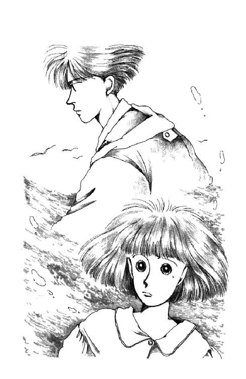

| 丘の家のミッキー１０ | |
| 久美 沙織 | |
| (2016) | |
丘の家のミッキー10
井の中の蛙世界に飛び出す!?の巻
久美沙織
本作品の全部または一部を無断で複製、転載、配信、送信したり、ホームページ上に転載することを禁止します。また、本作品の内容を無断で改変、改ざん等を行うことも禁止します。
本作品購入時にご承諾いただいた規約により、有償・無償にかかわらず本作品を第三者に譲渡することはできません。
本作品を示すサムネイルなどのイメージ画像は、再ダウンロード時に予告なく変更される場合があります。
本作品は縦書きでレイアウトされています。
また、ご覧になるリーディングシステムにより、表示の差が認められることがあります。
イラスト/めるへんめーかー
あなたのいきを
おくってください
すべてがあらたに
なるように
典礼聖歌より
１ 主よ わたしが悩むとき
ぴとん。ぽとん。
ぴとん。......とん。
聞くともなしに感じていた雨垂れに、ひとたび気付いて耳をすましはじめると、あたしは急にひとりぼっちになる。
ひと粒、またひと粒。ゆっくりと夢からさめる時のように、頭と心の中でクレッシェンドしてゆく単調なリズム。
ぴとん。ぴとん。とん。
雨のしずくは水時計。
落ちていくのはからっぽの時間。
ひと粒ごとに消えていくのは、他でもないこのあたしの、短いかけがえのない一生のうちの何万分何億分の一。たとえどんなにわずかでも、降り積もれば草を育て喉を潤しすべてを洗い清めてくれる大切な水。川も池も、あの海さえ、もし何年も何十年も雨がふらなかったらきっと干上がってしまうわ。
たくさんは無限じゃないし、ずっとは永遠じゃない。
このひと粒を、この一分を、大切に拾い集めて蓄えなければ、何もできはしない。
......って。わかってはいるんだけどね。
なんだかこのごろ、たましいが冬眠してるみたい。
毎日毎日、まるで波浪注意報の日に沖に出て追い風にスピネーカーを張った舟のように、とんでもない速さで過ぎ去っていってしまう。舵取るどころじゃないのよ。振り落とされずにいるのがすでに奇跡よ。なのに妙に焦りがない。まるで他人ごとみたいに、あー危ないなぁって思ってる。
いつものあたしだったら、きゃあどうしましょ、緊急事態だわ緊急事態だわって、きっとバタバタして、かえって事態を悪化させてると思うの。なのに、頭の中、まるで真っ白。その潔さって言ったら、自分でも感動するほどよ。感動って言ったって、実際やってるのはただ単にぼーっとしてることだけなんだけどね。
ぼーっとして。
ふと我に返るたびに時計が、十五分とか、二十九分とか、へたすると二時間も進んじゃっていたりするでしょう。びっくりを通り越して笑ってしまう。なんかまるで誰かに騙されてるみたい、化かされてでもいるみたい。
現実感、欠如してる。からだの中が全部透明になって、風も雨も、授業も、ひとのおしゃべりも、あたし自身の頭に浮かぶいろんな気持ちさえ、ほんのちょっぴりひっかかるだけで、ただどんどんすうすう通りすぎてっちゃうみたい。
ひょっとすると、これって、おバカになってしまったってことなのかしら。
何にも考えなくてもできるようなことは、ちゃんといつも通りやってるらしいのね。例えば、学校には行ってるし、ノートはいつの間にかとってるし、授業中にさされても一応まっとうな答えは言ってるみたい。着替えたり、道具を揃えて鞄に詰めたり、お風呂に入ったり何かを食べたりテレビのニュースを見たりは、ほとんど無意識のうちにこなしてしまっている。
それでいて、実は、どっかにほんとの自分を置き忘れてきてるみたいな、リモコンで操作されてるロボットになっちゃったみたいな、変に頼りない感じがずっと付きまとっているわ。笑っても、ママやクラスのひととおしゃべりをしても、本気じゃないの。そんなの相手に悪いって思うんだけど、どうしても本気になれない。感情が心の底まで届かない。
そうして、ひとりになると、たちまち、例えばほら今みたいに、パジャマを膝の上においたまんまの格好で、いったいどれだけ長いこと放心していたのかも自分でわからなくなっちゃったりしてたりするの。
ぴとん。ぴとん。とん。
また......一日、過ぎちゃったね。
何事もないままに。
外は雨。
五月の雨はしとしと静かだけれど、梅雨の予習でもしてるみたいにいつまでもやまない。この分じゃ明日もまた自転車通学はできそうにないな。靴下を濡らさないように気をつけながら、あの長い下り坂や上り坂を一歩一歩テコテコ歩いていかなくちゃならないんだろうか。
窓ぎりぎりに顔を寄せて、息で曇るガラス指でこすって。思い切り目を横にすればどうにかこうにか海岸線沿いの町の明かりが見える。駅はあの向こう。学校はあのへん。
あのひとの家は、たぶんあの山の陰あたり。
この胸を押さえつけているひそやかな痛み。もうずっと長いこと、そこに沈んで動かない重たいもの。
こんな気持ちで雨になんか降っていてほしくない。晴れてくれればいいのに。あたたかなお日さまの下で風に吹かれて、ふわふわ優しく柔らかな気持ちになれたら、きっと言える。この痛みと重みを捨てさってしまうおまじない。
あの「さよなら」を、取り消す呪文。
そうよ。
「さよなら」
なんて。あたしは言ったんだわ。
どうしてあんなこと......！
もう何度悔んだだろう。
でも、その後かれこれ一週間になるというのに、完全に沈黙を守ってくれている朱海さんも朱海さんだわ。ひょっとして、それほど真面目に受け取ってくれてないのかも。意味、わかってなくて、重大発言だと思ってくれてなくて。
そりゃね。普通の状態でも「さよなら」くらい言うわ。ほとんど毎日何気なく言う。さよなら。こんにちは。ありがとう。外国人が最初に覚える日本語のひとつだったりもする。でもね。ネイティブジャパニーズスピーカーなら、あの場合の微妙なニュアンス、わかってくれてないわけないでしょう？ これでもあたし、一世一代の思いをこめて言ったのよ。......言わなきゃよかったけど。
いやだな。
まさか。全部ちゃーんとわかってて。その上であえて口きいてくれないんだったとしたら。あたしが本気で「さよなら」って言ったんだと誤解してて、うううん、もちろんあの時は確かに本気だったんだから一概に誤解とも言えないけれども、ともかく朱海さん怒っちゃって、意地張ってるとか。それともあっけなく、あ、そうって納得してしまったのだったりして、じゃ、いいよって諦めてくれちゃったりして、つまりは「さよなら」になっても特に異論はないっていう意味だったとしたら......。
わぁん！
やだ。やだ。そんなのないよぉ。
あたしもう、死ぬほど後悔しているんだってばっっ！
そりゃね。あの時はほんとにカッとしたわ。もう知らない、どうなってもいいって自棄っぱちだった。次々にぶつけてしまう自分のことばに自分でショックを受けて、唇がワナワナしたわ。でもどこか、すごくいい気持ちだった。せいせいしたっていうか。爆発したっていうか。そしてその直後に背中がさーっと冷たくなった。とんでもないことしてしまったぁぁって、わめきだしたくなるような怖さ。
目の前が真っ暗になるって噓ね。どっちかっていうと真っ白だったわ。
なのに、朱海さんったらまるで何にも感じてないみたいな顔してるんだもの。「何を怒ってるんだ？」なんておマヌケなことをおっしゃるんだもの。怖さもなにもあればこそ。腹立ったなんてもんじゃない。煮立ったわ。沸騰した。
でも、それはほんとぉに、ちょっとの間だけだったのよ。
おバカ！ 知らない！ 朱海さんの顔なんかもう一生見たくないわッッ！ って逆上していたのは、背を向けてあの場を走りだしてからわずか百メートルほどだったし、もーいい、どーせあたしなんかこんなヤツなんだから、嫌いになってくれて結構よってひねくれた気持ちは、バス通りに出る頃には雲散霧消していたし。その後歩くのがどんなに困難だったことか。うちの玄関入るまでずっと、今逢えたら、追いかけてきてくれたらすぐに、すべて前言撤回して、ごめんなさい、今のは全部忘れてください、あたしがワガママでした短気でしたって、ぺこぺこ謝っちゃいたいって、ほんとにそう思ってた。だから犬たちがどんなに急かしても、わざとのたくらのたくら、できる限りゆっくり歩いたのに。
追いかけて来てくれないんだもん。くすん。
ひょっとしてこっそりやって来るのではないか、お姿が見えないかって、何度も立ち止まってみたわ。誰かさんのによく似た赤いバイクが、すごいスピードで擦れ違って行った時にはありえないと知りながら思わずドキッとして、ふりむきざまそのまま何もかも放り出してＵターンしかけた。だけど、まだ、意地があったのよね。それにすごーく心細くもなってたの。もう、ずいぶん時間たってたから。遅かったから。その頃には、あそこに、あの場所に、あのまんま朱海さんが残っているはずはないって思っちゃって。
時間が過ぎたって言ったって、あの時なら、まだ短かったのに。
べそべそ泣きだして、ふらふら関係ない道に入ってっちゃったりして、犬たちがいなかったら迷子になっちゃうとこだった。わけわかんない家並みの真ん中で呆然と立ち尽くしてたのは、何分間くらいだったんだろ。カラスがカァカァ狂ったように鳴いて、ハッとすれば、空は禍々しい緋色。魔物に魅いられそうな黄昏刻。来てはならない場所に踏み込んでしまったかのような、背中から何かがあたしを窺っているような、わけのわからないおっかなさに思わずしゃがみこみそうになった時、羅士丸がワンワン吠えてくれた。綱にひかれるままに歩いてったら、どうにか知ってるバス通りに出た。日頃おバカだおバカだと思ってた羅士丸だけど、あの時は騎士みたいに頼もしかったわ。
あの日もひどく落ち込んだけど、まさか、こんなに後になるまで全然解決のチャンスがないなんて思ってもみなかったのに。
予想してたら、恥も外聞も忘れて、とにかくあの時あのまんま、急いで西在家さん家に行って朱海さんが帰って来るの待っちゃったと思う。そんなことしたら、きっとうららなんかにはすごーく冷やかされただろうけど。こんな気持ちでいること思えば、からかわれるぐらいなんでもないわ。あんな顔してお訪ねするなんて、おじさまやおばさまにも恥ずかしいけど。恥ずかしいなんて言ってられる場合とそうでない場合があるのよ。あの場合はとにかく、一刻も早くもう一度、朱海さんと話をしてみるべきだったんだって今なら躊躇なく言えるけど。
ああ。タイムマシンって、どうしてまだ発明されてないの。
あの時言った意見は......意見って言えるような立派なものなのかはともかく、正直言って、今でも間違っていたとは思わない。だけど、言い方が陰険だったわ。それに、あたしったら、ただもう頭っからヤダヤダヤダって拒否して、あのひとの言い分なんか何にも聞かなかった。
遠くに行ってしまう。
あたしを置いて行っちゃう。
でも、意地悪でするんじゃないのに。あのひとにはちゃんとそうしなきゃならない理由があるのに。どうしてあたしは、自分のことばっか考えてしまったんだろう。
お家のこととか、将来のこととか。いっぱい説明してくれたのに。ろくに聞いてなかった。あの優しい朱海さんが誠意こめて話してくれたのに。
きっといっしょうけんめい考えて出した結論だったんだ。どうしてもそうじゃなきゃならない選択だったのに違いない。筋道通ってるに決まってる。
それに、それは、あのひとの人生だもの！
真面目に考えもしないようじゃ頼りないじゃないの。他人の都合で自分のやりたいことをまげるなんて、男らしくないじゃないの。たとえその他人が、あたしだとしても。あたしはあたしのために、あのひとに自分を殺してほしいの？
そうよ。あのひとはよそのひと。
守護霊さまじゃあるまいし、いつでもなんでもしてくれる、そばにいて守っててくれるなんて、期待するほうがおかしい。そんなにしてもらう価値があたしにある？ だいたいあたしのほうはいつだって、なんでも気ままにして来た。それで、怪我したり泣いたりしたこともあるけど、好きなようにやった結果だもの。ほんとうの意味で後悔したことはない。
ただ、そばにいてほしいからって、朱海さんの決断を邪魔する権利なんか、あたしにはない。
って。......理屈ではわかってるんだけどね。
はぁ。
上体、後ろに倒れかかるまま、ベッドの上に投げ出すと、頭の重みにふとんがぱふっとため息をついた。
しゃああああ。
遠くを車が走ってく。あのシャワーみたいな水音は、やっぱりまだ雨が降っているってことね。いやだけど。雨が悪いわけじゃない。
強くならなきゃ。
いい子にならなきゃ。
どんなにどしゃ降りだって、ちゃんと傘さして、胸をはって歩いていかなきゃ。
膝の上のパジャマは、いつのまにかくしゃくしゃに皺がよっている。知らず知らずのうちに握りしめちゃっていたらしい。
はぁ。いくら考えててもしようがないわ。とにかく眠ろう。
明日になれば、何かいいことあるかもしれないもの。
ため息ひとつついて、シャツのボタンを外しはじめた時。
「みくー!!」
呼ばれたの。一階から。
「はーい？」
シャツを脱ぐのを続行しながら、ドアから顔だけ出すと、階段の下からママがこっちを見上げていた。
「電話よォ」
わっ。
ドキドキドキ。朱海さん？ 朱海さんよね？ ああ、どうしよう。あたしちゃんとしゃべれるだろうか。
「いそいでー、トコちゃんよぉ」
あらっ。
「元気ぃ？」
吞気な声を聞いたとたん、グクッと喉が狭くなる。
トコはなんにも悪くないんだけど、ため息殺すのに、ちょっと時間かかる。
「なんとかね。トコこそ元気？」
「ふふん。まぁ、なんとかね」
なんとか、ですって？
何言ってるのよ。トコなんかほんといいわよ。いつだって明るくって元気で、パワーに溢れているんだもの。羨ましいったらありゃしない。
くすん。と、なりかかった鼻をごまかして、あたしはできるだけ何でもない声を出したわ。
「久しぶりねぇ。いつから逢ってないかな？」
「四月じゃない？ 今いいの？ 何してた？」
「寝ようかと思ってたとこ」
「冗談でしょう。まだ八時じゃないの」
「そう？」
「そうって、あんた。風邪でもひいたの？」
「うーん。風邪じゃないんだけど。ちょっとね。いろいろあってね」
「いろいろ」
トコは黙った。
いかにも何か言いたそうな沈黙だった。
「......そう。いろいろなのよ。今は詳しくは言えないけれど。察して頂戴よ。それで、なあに？ 何かあったの？」
「まぁ、あったって言うか、ありそうだって言うか......」
「うん？」
「それがねぇ......」
言い掛けたまま、また黙っちゃった。
何だろう？ 何を焦らしてるのよ。トコまでこの雨におかしな気分になっているのかしら。なんだかいつもの勢いがない。
と思ってたら、突然言われたのよ。
「ミシェール、あしたあさってって、暇？」
って。
「前、桜見に行こうって言ったのがダメになっちゃったでしょ。都合つかない？ そろそろ泊まりにおいでよ」
「トコんちに？」
「うん。積もる話もあるしさ。電話で言おうかと思ったけれど、やっぱり無理だわ。あんたの顔見ながらにしたほうがいいみたい。だから、たまにはおいでよ。ねっ？」
「ねっ、って......」
言われてもね。
そんな気分じゃないんだったら。
いくらなんでも週末になれば、朱海さんから何か連絡あるんじゃないかなって気がしないでもないし。ほとんど希望的観測だけど。やっぱりあたし、できたらあのひとのほうからお誘いがほしくて、待ってるし。
それに。鬱屈気分にかまけてまるでノータッチになっているけれど、洋太郎さんの問題だってあれっきりでしょ。ツル先生か稲子さまか、ひょっとするとうららから、招集がかからないとも限らないわ。
つれなくするのは辛いけど。なんでよりによって、こんな時に誘ってくれちゃうのかしら。
「ごめん」
イライラ気分に電話のコードを撚りながら、あたしは低く言ったわ。
「逢いたい気持ちは山々なんだけど。ちょっと急すぎて。また今度にしちゃだめ？」
「えーっ。何でよっ？」
思った通り、トコはぷんぷん言ったわ。
「何か用事なんだったら、いいからさ。遅くおいで。それ、済ませてから。なんなら日曜でもいっこうに構わないわよ」
これはちょっと押し付けがましいでしょ。
一瞬あたし、ムッとしてしまったんだ。
「悪いけどね。あたし構うの。正直言わせてもらうとね、今、それどころじゃないの」
「......あ、そうなの」
トコはまた黙った。
さっきまでより、もっと長いこと黙った。
これはもう絶対に怒ってるわね。
でもね。
こっちの身にもなってほしい！ このところ、ううん、高校生になって以来ずっと、次から次へと目まぐるしくせわしない日々を送ってるのよ。トコは古い友達だから、ちょっとやそっと逢えなくたって変わるはずのない親友だから。無理に都合つけて愛想よくしなくたっていいはずでしょ。ちゃんと気持ちのゆとりのある時に、元気なあたしで逢いたいじゃないの。わかってよ。ないがしろにするんじゃないわ。あんたにぐらい、しんどく気をつかわなくたっていいって思わせてよ。
毎日ぴったりくっついていないと、手を繫いで御不浄に行かないと続かないような、そんな関係じゃないでしょ、あたしたちは。
けど。
あまりと言えばあまりに長かったのね。沈黙。まるでどっちも意地になって相手からしゃべってくれるのを待ってるみたいに。
当然、あたしのほうがずっと気が弱い。
「トコぉ？ もしもしィ？」
「ええ、ええ、そうでしょうよッ！」
待ってましたと言わんばかりの素早さで、トコは怒鳴った。
「どうせあんたはご多忙よ。大変ね。ヨット問題やら『うちの父』問題やらにお忙しくって、あたしや華雅のことなんか考慮してくださる暇もないでしょうよ。でもね、言わせていただきますけどね、こっちだってそれなりに大変なのよ。前々から大変だったけど、あたしあんたに不平なんかこぼさなかったでしょう？ それもこれも、あんたが遠い葉山の田舎の空の下で幸せそうにしてるから、ああ知らぬがヨハネ・パウロさまなのだ、無邪気なミシェールの心の平和を乱しちゃいけない、煩わせちゃいけないんだと思えばこそ。これでも今日までせいいっぱい持ち堪えたのよ。けど、ぼーっとしてればしてるだけ事態はややこしくなる一方だし、あんたにだって心の準備をしてもらう時間が必要だから。決心して、勇気を出して、やっと電話をしたっていうのに......なによっ。いいわよっ！ もう結構っ！」
「？？ ちょ、ちょっと。なんなの？ いったいどうしたのよ」
「いいったら。どうぞおかまいなく」
「トコぉ」
やれやれ。
困ったもんだわ。いったいぜんたい、何があったっていうの。
純粋華雅エンヌの欠点よねぇ。どうしてこう子供っぽいのかしら。何を大変ぶってるのか知らないけど、どうせたいしたことじゃないに決まってる。あたしにまで心の準備がいるですって？
オーバーね。おおかた、ソロリティーでまた内紛でもあったのでしょ。
いいわね。平和で。
心の支えであるひとがよその国行っちゃうかもしれないとか。優しい青年が不幸な偶然から犯罪に走らされそうだったりするとか。そういう、ほんとの大変を知らないから、他愛のない大変におおわらわになっちゃうんじゃないかしら。
それがあたしに伝わらないからって、癇癪起こさないでほしいわ。
「お時間取ってしまってもうしわけございませんでしたわ。それでは、ごきげんよう」
「待ってよ。トコ落ち着いて」
「落ち着いてるわよっ！」
「怒鳴らないでよ。何だか知らないけど、そんなに大変なことなんだったらちゃんと相談に乗るわ。とにかくちょっと聞かせてくれたらどお？ それとも、お家の電話では口にできないようなことなの？」
「そうじゃないけどね！ ......うう、とてもひとことじゃ言えないんだってば。だいたいね、ほんとのところ、あたし迷ってんのよ。どこまであんたに言っていいものか、全部正直に教えてあげちゃうのが友人として正しい態度なのかどうか、もともと自信がなかったところに持ってきてあんたがそうでしょ。ああ、もうイヤ。わけわからなくなっちゃいそう。やっぱりここは恥を忍んで、まず麗美さま加奈子さまにご相談申し上げるのだった。あたしなどの手に負えることだと思うなんて、うぬぼれだった」
「......え」
麗美さまですって！
その気高い御名を聞き、その典雅なるご容貌を想い浮かべたとたん、ずっとぼーっと霞かかっていた頭がすっきりと晴れ渡ったように明るくなった。
......こ、こ、これは、ほんとにただごとじゃない。
思えば確かに、トコはめったに弱音を吐く子じゃない。強がりで、おだてに弱くって、面倒見がいい。困難にあえばあうほど、誰かに頼りにされればされるほど、不思議に力の出てくるタイプ。そのおかげで、ついつい必要以上能力以上の働きを背負うことになっちゃって、いつでも爪立てトウシューズ、背伸びしてるのが日常みたいなトコなのよ。みなまで聞かずに『よっしゃ、わかった。おまかせ！』っていうのが生涯のテーマなのではないかと言われているくらい。
まして、尊敬する麗美さま、お慕いする加奈子さまの前では、いつにも増して発奮するのが標準。可愛いおバカと思われるより一目置かれる後輩になろうと、そりゃもう血を吐くような負けん気を出してしまうはず。
そのトコが。おふたりのお力を借りたかった、あたしには手に負えないなんて言うなんて。これはほんとうになまなかな大変ではなかったんだわ！
「わかったわ。おねがい、そのまま待ってて。切らないで待っていてよ。今、ママに断ってくるから」
「何を」
「だから、泊まりに行っていいかどうかよ」
「ほんとぉ!?」
ああ、かわいい、可哀そうなトコ。あたしなんかが泊まりに行くのをそんなに喜んでくれるなんて。そんなに大変だったの？ それなのに冷たいこと言ったりして、悪かったわ。
いいわ。一泊二日ぐらい。どうせ週末中待ちぼうけになっちゃうかもしれないんだもの。久しぶりに都会に出て気分が変われば、何かいい考えが浮かぶかもしれない。あたしのほうの大変の風向きだって、変わるかもしれないものね。
ママはもちろんＯＫだった。
とにかくトコといっしょだって言うだけで細かいこと抜きで全面的に信頼してもらえる。長年培ってきた実績は強い。
「行くわ」
「ほんとぉ？ ああ、よかったぁー」
「いったん家に戻って（註１）着替え持ってもう一度出るから、早くても夕方にしか着かないと思うんだけど。トコは放課後、何かあるの？ ねぇ、どうせなら学園で待ち合わせない？ きっと今ごろは裏庭の紫陽花もきれいに咲いて......」
「だ、だめだめだめッ！」
「へ？」
「悪いけど、華雅に来てもらっちゃ困る」
一瞬、あたし声が出なかった。
「どうして？」
「だからね。......ううっ、今は堪忍して。明日ちゃんと話すから。とにかく、打ち合わせなしであんたをウチの誰かに会わせるわけにいかないの」
「ウチのって、華雅の？」
「そうよ」
「じゃあ、ちょっとやだ。まさか、あんたの大変って、何かあたしに関係あることなわけ？」
「あきれた。そう言ったでしょ？ 決まってるじゃない、でなきゃ、なんであたしが大変なあんたをわざわざ呼びつけたりするのよ？」
「......ごめん......」
「そうだわ。ついでに言っておくけど、杉丸さんや笙子にも内緒よ。とりあえず、あんたが明日来るってことも、言わないでおいて。いい？ これは、極秘の緊急事態なのよっ」
「ご、極秘の緊急事態？」
なん、何なの？
そうよ、どうせなら、笙子たちにだって久しぶりに逢いたかったわ。それもダメだなんて。笙子だって杉丸だって信用できないような子じゃないのに。
麗美さまの霊験でぱぁっとクリアになっていた頭が、またどろどろ渦を巻いて混乱しはじめる。
いったい何がどうなると、このあたしを華雅のひとたちに逢わせてはならないような極秘の緊急事態が発生するわけ？
「だからね、ミシェール、地味で悪いけど、やっぱりウチに直接来てもらうのが一番いいと思う。あたし明日はソロリティーの集会があって、出ないわけにいかないんだけど、なるべく早く帰るようにするから。もしもあんたのほうが早かったら、父さんのお寿司でも食べてて。いい？」
「いいけど、ねぇ、ちょっと少しくらい今話してくれても」
「ごめん。実はあたし明日フランス語あたりそうなのよ。この件が片付くまで予習どころじゃなかったの。これでやっと辞書に専念できるわ。ありがと。待ってるわ。気を確かに持ってね。じゃあね。あしたね！」
切れた。
切れちゃった。あっけなく。
呆然として、ふと手を見れば、いつの間にか電話コードがぐちゃぐちゃになってる。受話器をぶら下げてブーンと戻す。くるくる回って、行き過ぎて、勢いをなくしたかと思ったらまた反対回りして、ようやくなんとかもとに戻った。
でも、あたしの気分はとてもじゃないけど、戻らないっ！
やっと予習に専念できる、ですって？ 気を確かに持ってね、ですって？
いったいなんだっていうのよ。冗談じゃないわ。こんな、なんだかわけがわからない気分、あしたの夕方トコに逢うまでおあずけされるっていうの？ ただでさえ、それでなくてさえ、もう頭いっぱいだったっていうのに！
うーっ、トコのおバカっ。わがままっ！
いいわ。いいわよ。考えたって、しかたがない。
こうなったら、しようがないから当面の、第一番の問題を考えるわ。
......明日、何着て行こう？
トコのおとうさまは、お寿司屋さんをなさってらっしゃる。
栄寿司って言うの。
名字の逆井さんの『サカイ』って音だけを縁起のいい漢字に変えたんだと思う。神田の駅から、七、八分。商店街から少し外れたわかりにくい場所の、けして大きくないお店なんだけど、都内でもけっこう『知る人ぞ知る』お店らしい。
けっこう混むのよ、ってトコは自慢する。
――グルメガイドみたいな本に載ったこともあるのよ。父さんはそんなもんに載せてもらわなくてもいいって言って、ちょっとゴネたんだけど、お得意さんの中に出版社のかたがいらしてね。ぜひって頼まれちゃって、おことわりできなかったんだって。ほら、ウチのまわり、神田から神保町のあたり、本屋さんが多いでしょう。春なんかよく、新入社員っぽいひとを大勢連れたおじさまがたが来てくださる。作家の先生や有名人のひとを連れておいでになることもあるらしいわ。誰がいたなんてこと、父さんは絶対言わないけど、ヤッさんたちお店の若いひとは、あたしがおもしろがるからこっそり教えてくれるの。俳優の誰とかさんはタコがお好きで、みえると必ずタコばっかり十人前も食べちゃうから、いいのがない日に予約が入って大慌てしちゃったとかね、そういう話を。もしも来てくださったら、父さんに内緒でサインもらっておいてほしいひとのリスト、色紙といっしょに預けてあるんだけど、あれはもう黄ばんじゃったかな。そろそろ新しい色紙にしておこうかしら......。
そう。トコのおとうさまは、そういう職業のかたらしく、ちゃんとやっぱり、ちょっと頑固でちょっと怖いの。
緊張するなぁ。だいたい、たったひとりでお寿司屋さんのカウンターに座らせていただくなんて、女子高校生には過ぎた供応でしょう。いくら小さい頃から知ってるっていったって、おじさまとはほとんどお話ししたこともないっていうのに。おばさまは急ぎの帳簿つけがあるとかなんとかでお部屋のほうにこもられたまま。あたし、落ち着かない。ちょっと、困ってる。トコ早く帰って来てくれればいいのに。
お夕飯時にはまだ間があるし、会社帰りのひとが来るにも少し早い。もしかすると本来は、まだ営業時間じゃないのかもしれない。確か、お昼時に賑わった後夕方まで、おじさま何時間かお昼寝をなさるのが習慣だったはず。もしかしてあたしのために早目にお昼寝を切り上げてくださってしまったのだとしたら、申し訳ない。
ぴかぴかにお掃除されたお店に、他にお客さまの影もない。
おじさまはもちろん、けして、おしゃべりなかたではなかったりもして。
ちょっと前に、何がいいって聞かれて、おまかせしますって答えた。でも、正直に言えば、あたしにも好き嫌いがないわけじゃないわ。例えばトロはあんまり得意じゃないんだ。特にトコんちのトロは、ぼってり厚くて、マッチを近づけると火がつきそうなウルトラ大トロなんだもん。はじめて食べた時は、すごい、これが美食なのねって感激したけれど、その後一晩中胸焼けに苦しんでしまって。
どうせ舌が下賤なのよ。味のわからないものをいただくのはもったいない。
だから、ほんとならちゃんと自分で自分の食べたいものリクエストするのが美しいんじゃないかとは思うんだけど......ああ。言えないわ。とてもじゃないけど。そんな勇気はない。だって、何か暗黙の順序がありそうじゃない？ お寿司って。ウニとイクラを続けて頼んだりしたらみっともないとか、卵焼きは最初にしちゃいけないとか、何か秘密のルールがありそうな気がする。それに、確かあるはずよ。専門用語。しょうががガリで、お醬油がムラサキだっけ。
アガリってお茶のことだっけ、お勘定のことだっけ？ ううう、わからない。せめて、ともかく、残念ですが脂の強すぎるお魚はパスですってことだけでも、ちゃんとことわったほうがいいかな？
ことわるにもタイミングって必要よね。
何度も拭いた手をまたおしぼりで清めてみたり、重すぎるお湯飲みからお茶を飲んだり、カウンターの黒い漆塗りのとこに直接置かれたガリをつまんだり、壁や天井を眺めたりしながら、何度かおじさまと目と目があわないものかどうかチラチラうかがっていたんだけれど。くすん。おじさまはお仕事に熱中していて、ぜんぜん顔をあげてくださらないんだもん。
......あ！ とうとうこっちを向いてくださった！ と思ったら。
「おまち」
すっと差し出されたのは、ほっ。白みのお魚のお刺身と、鰹のタタキらしい。
良かった。これなら食べられる。
「いただきます」
震えるお箸を、摺ったばかりの生わさびにのばす。前にトコに聞いておいたとおり、お醬油には溶かない。お刺身の上側にちょっとだけ載せてから、お刺身の下側のほうを一瞬お醬油にかすめて......。
「お、美味しい！」
おじさまは一瞬だけあたしを見て、かすかにうなずかれたようだった。口元がぴくぴくっとしたのは、もしかすると微笑みだったのかもしれない。
ふう。
お魚の甘みにわさびの香りが効いて、ほんとに美味しいけど。
あがっちゃうなぁ。
何かおじさまと和気藹々になれるような気の利いた話題でもあればいいんだけれど。下手につまらないことべらべらまくしたてるのも軽薄だし。今、へんに口きくと、おじさまにはまるで関係ないわたくし事を身の上相談してしまいそうだし。差し支えのない話題っていうのも、どうもこの贅沢すぎる環境に圧倒されてしまって、何ひとつ思い浮かばない。声をうわずらせずに話す自信もあんまりない。
ただもう、あたしごときのために黙々とお仕事をしてくださるおじさまを、じっと拝見させていただくばかり。
おじさまはいつものことながら、粋でイナセなお寿司屋さんファッション。
髪の毛は、あたしが子供の頃からずーっと変わらない、長いところでも二ミリないんじゃないかしらってくらい短い刈りかた。ただ、なんだかすこし、灰色がかってきたみたい。ぱりっと清潔な上っ張りの上にズンッと乗ってる感じのお顔は、凹凸を多少減らしたお獅子のよう。
トコはお母さん似で良かったねって思っちゃうのは失礼かなぁ、なんて思っているうちに、何かの合図のようなものがあって、お店の若いひとが奥から何か持って来てくれたみたい。うわ、海老だ。
カウンターの横手のほうにも大きな水槽があっていろんな魚や貝が生息してるんだけど、前にトコに聞いた話では、それはあくまでデモンストレーション用。お客さんが、どうしてもこれ！ って指名（？）してしまったら出さないことはないけれど、普通実際使うのは、別のとこでおとなしくさせてあるものなんだって。ライトの当たる場所で思う存分運動してしまったお魚たちは、見た目とは違ってあんまり活きがよくないんだとか。
海老は、モミガラに詰めておくって言ってたかな？
どうも今日の海老さんも生きてるらしい。ぴちぴちぴちっ、と水を撥ねとばす音がしてる。いかにも新鮮。それとも断末魔のあがき？
おじさまは、ぴかぴか銀色に光るすごく切れそうな包丁を、スッ、と持ち直すようにして、ひらっ、ぎらりっ！ と閃かす。カウンターが邪魔で手元までは見えないけれど......。
ぴちぴち音が途絶えた。
アーメン。
何も言われないうちにささっとかけつけた若いひとが、心得顔で何やら手伝ってる。しゃきっとした空気がお店中にみなぎってる。それもお寿司の味のうちよね。
トコは、いいなぁ。
自分のお父さんがどういうふうにおしごとしてるのか、どのくらい偉いのか、はっきり見ることができるんだもの。あたしなんか、銀行でパパが何をしてるのか、全然知らない。前に一回、聞いたことがあるんだけど。
「ううむ。何をしているかな。そうだな。だいたい、まぁ、コーヒー飲んで、新聞読んでる」
って、パパは答えた。
はぐらかされたんだと思う。まさかそれだけじゃないだろうとは思うけれど......いや、わからない。案外、ほんとうにそれだけなのかもしれないわ。なにしろ、あの父ですもの。どうして銀行なんて真面目なお勤め先で長年辞めさせられもせずにちゃんとやっていられるのか、あたしたち一家を養ってくれるだけの働きをほんとうにしてくれているのかどうか、つねづね謎だと思っているわ。あたし。
海老さんたちをいただいて（安らかに天国に行ってください）、甘じょっぱく煮た貝の乗ったこれまで食べたことの無いタイプのお寿司をいただいて、卵焼きをいただいて、もうそろそろお腹いっぱいですって言おうとする頃に、がらっと戸が開いた。
トコかと思ってふりかえったんだけど。
「こんばんは......おや？」
のれんを搔きわけて先頭で入って来たサラリーマンさんがすっとんきょうな声をあげた。
「うっわー。ずいぶん若い別嬪さんじゃない。旦那の愛人ん？」
「だったらなんでぇ」
おじさまは横目を使いながら口のさきっぽだけでつぶやいた。すっごく低くて、迫力のある声に、サラリーマンさんの冗談っぽい笑い顔がヒクッとこわばった。
「だ、だからぁ。ははは、だったら羨ましいなって言ってんですよぉ」
「べらぼうめ」
「どうも、まいど。何名さまですか」
おしぼりを持って、さっと割って入ったのは、一番若いひと。まいどって言うからには、常連さんなのかな。
「えーとね。今四人だけど、あとでもうひとり来るからさ」
「では座敷のほうで？」
「えーっ、カウンターにしてよ。やっぱ旦那に目の前で握ってもらいたいんだけどねぇ。だめ？ ひょっとして、やっぱし、彼女の隣っつーのはまずかったりするの？」
おじさまが何か言う前に。
「どうぞ！」
あたしは椅子を滑りおりた。大急ぎで一番隅っこまで移動する。
おじさまの目が、『そんなことしなくたっていいのに』って言うようにギロッと光った。
「でも、もう、あたしお腹いっぱいですし。いつまでもいちばんいい席を占拠しちゃってると申し訳ないですから......」
「そお？ あ、いい？」
サラリーマンさんは、さっさとそのへんの椅子をひいてお連れさんたちを座らせ、自分はあたしの隣のを思い切り遠ざけながら、にやあっと笑った。
「いやー、どうも、すいませんね、気ぃつかわせちゃって。でも、そうそ、世の中譲りあい助けあいだかんね。あ、お礼のしるしに一杯やりません？」
一杯ってね。いくつに見えるっていうの、あたしが。
「いえ、あたしは」
ダメですダメですって思い切り手を振ったら、それ以上は勧めないでくれたから良かったけど。おじさまは口をへの字にしてる。
もうそろそろ、トコの部屋にでもあがらせてもらってたほうがいいかなぁ。でも、それってどういうふうに言いだしたものだろう。ごちそうさま、でいいのかな？ それにまるで隣に来られたのがイヤなみたいにいなくなったら、ここの常連さんたち、気分害しちゃわないかしら。
おじさまの顔をうかがいながら、お茶をすすっていると。
「ただいまー！ ......来てる？」
ああ、良かった！ 助かった。
「トコ！ ここよ」
「きゃあ、いたぁ、ミシェール！」
抱きあわんばかりのあたしたちの横で、隣のお客さんがあれっ？ と、あんぐり口を開けた。
「ごめーん、遅くなっちゃって。いっぱい食べた？」
「いただいたわ。もう入らない」
「じゃ、上行こう上。おとうさん、ありがとう」
「ごちそうさまでした。ほんとに美味しかった」
「んにゃ」
「な。なぁんだぁ！」
と隣の常連さん。
「娘さんの友達かぁ。んもう。旦那ったら、ひとからかうんだから、俺ゃ、半分本気にしたぜぇ」
おじさまのお獅子顔がニタリと一瞬崩れたわ。
お店の奥の暖簾をくぐると、逆井さんちのおうち部分に出る。
なにしろトコが生まれるよりもだいぶ前に建ててあった建物で、江戸っ子の産地として代表格であるはずの神田界隈でも昨今になってしまえば珍しく古風な純日本建築。
天井の低い廊下は、仄かに湿って薄暗い。
時間と思いが数え切れないほど長いこと降り積もり続けた匂いがする。
お店から遠ざかるにつれてあたりが急にひっそり静かになってしまって、なんだか中学の修学旅行で行ったどこかのお寺に似てるみたい。床や壁の木肌は磨きこまれてつるつる。こんな古いお宅を、トコのおかあさんはいつもほんとうに綺麗にしてらっしゃる。
八畳六畳の続き部屋には、絨毯なんか敷いてない。年代がかった茶簞笥や卓袱台が、ご先祖さまそのものみたいにしんと息をひそめている。天井近くの飾り棚には家内安全商売繁盛のお札と、籠やら五円玉やら稲穂の飾りのついた浅草浅草寺の破魔矢。鯛に乗った恵比寿さまや北海道っぽい木彫りの熊の置物も見える。確かお勝手には荒神さまとかいう特別な神様の神棚もあったわ。
時々読む昔の小説などで古風な典型的日本家屋の描写が出て来ても、あたしがあんまり面食らわないですむのは、もっぱらこのトコの家のおかげと言ってもいい。
「ただいまぁ。おや？ どこいったのかな」
「おかあさま？ さっきまでここで帳簿つけをしてらしたけど」
「ああ、じゃ、きっと二丁目のご隠居のところにお菜を持ってったんだ。息子さんが転勤になっちゃってね。おひとりでいらっしゃるんだけど、お年がお年でしょう。うちが時々ご機嫌うかがいしてるのよ」
「いいお話ね」
うちみたいな新興住宅地ではおよそありそうにない。
「下町だからねぇ。うん。ま、いいや。部屋行っちゃお」
お手洗いの横の狭い階段をとんとんとんと上ると二階。右手には住み込みのひとたちのお部屋が並んでいる。左側にぽつんと離れて何段か上がる感じになってる先に、トコの私室があるのよ。
ちょっぴり桟の緩んだ襖をぎいっと押しあけると......まいどながら、妙なのよね。
最初に来た時なんか、ほんとにひっくりかえりそうになったもの。このお家の中にいきなりこんなお部屋があるなんてねぇ。
ぱぁっと明るいのは角部屋で窓が三つもあるから当然なのかもしれないけれども。まぶしさに慣れたら最初に目につくのが、奥のベッド。ベッドよ。それも和式のお布団でごまかしたカタチだけ洋風のなんかじゃなくって、枕はふたつ重ね、アッパーシーツやホテル風のブランケットできっちりメイクした本格派。おまけに天井から床いっぱいまでの丈の真っ白いレースのカーテンで囲まれててね。昼間はもちろん閉じてあるのだけれど、開けるとこれがまたいっそう豪華絢爛。たっぷり二重になっているから、左右を緩くゆわえて留めるとなんとも美しいドレープができて、まるで天蓋つきの王侯貴族のご寝所みたいなの。
小さかった頃、あたしはこのベッドに眠りたい一心で、しょっちゅうトコん家に泊まりに来たものだったわ。セミダブルくらいの広さがあるから、ふたり並んでも充分寝ごこちが良いし。眠くなるまでおしゃべりするにもちょうどいいのだけど、たいがいあたしは興奮のあまり眠れないでしょ。トコがぐうぐう言う横で、あたしは実は小さい頃誘拐されたお姫さまで、今に金髪もしくは亜麻色の髪のオトメになって、当然目も青緑色もしくはスミレのような紫色になって（註２）、やがてほんとうのお父さんとお母さんが金銀宝石を飾りたてた馬車で迎えに来てくれるに違いないなんて、あれこれうっとり想像し続け、気がついたら外がしらじら明るくなっていた......なんてこともよくあったわ。
もとはあたりまえの押し入れだったらしい部分は、白木の鎧戸をつけてクロゼット風に改造しちゃってあるし、窓には葡萄やつる薔薇を伝わせてあるから、もとの姿が思いだせないほど洋風でしょう。その窓の下には、おもちゃのような椅子とテーブルのセットがしつらえてあってね。このテーブルにはいつでもその季節にあわせて、ギンガムのクロスやパッチワークキルトがかけられていて、一輪挿しやガラスのコップに花が飾ってあるといった具合。今は淡い水色のコットンとパープルの透ける布を重ねて、紫陽花の小さな鉢を置いてあるのよ。ほんと、気合こもってる。
床は、たぶんこのお家唯一のカーペットでグレイがかった若草色。ところどころにトコ得意の手芸作品であるクッションがいくつか無造作っぽく放り出してある。籐の籠には作りかけのキルト。厚い木の板を敷いて一段高くステージのようにしてあるところには、クリーム色のエレクトーン（註３）。幼稚園の頃から、もう何台めかしらね。
なんでも、エレクトーンの場合、講師の免状をいただくまでにはどんどん難しい曲が弾きこなせるようにならなきゃならなくて、それにはどんどんたくさんのペダルやスイッチがついてるのに変えなきゃならなくて、ゆえに上達すればするほど、どんどんお金かけてグレードアップしなきゃならない仕組みになっているのだって、トコ昔少し怒った顔で言ってたけど。ほんとーはちょっと自慢なのじゃないかしらね、なんて思っちゃうあたしは、意地悪なのか、嫉妬深いのか。
もちろん机も本棚もあるけれど、ノートも文具も何ひとつ出しっぱなしになってないから綺麗この上ない。勉強部屋って感じは全然しないの。あたしだったら、こんなロマンチックなお部屋では宿題や試験勉強にとても真面目に取り組めはしないと思うわ。
トコがインテリアに凝りだしたのは、ほとんど物心つくや否やで、なんでももともとは無理やり読まされた少年少女世界名作文学全集の『小公子』だか『小公女』だかの挿絵に触発されたのだとか。ついでにウチの昔の三番町のマンションも、カルチャーショックだったらしくてね。なまじこちらのお宅が徹底的に畳と障子と襖の世界だっただけに、こんなことでは名門女子校生としてとても生きてはいけないと思いつめ、買ってくれなきゃ死んでやるってハンストまでしてまずベッドを手にいれ、何かと工夫を思いつくたびにイラスト図解して説得したんだそうよ。
今にして思えば必死だったのだろうけれど。あたしには疑問だったわ。トコってものすごく贅沢でワガママな子なんじゃないかしら、そうだったらおともだちでいられないわって、小さい頃は本気で心配しちゃった。
なんと言ってもあたし自身は、幼稚園以来連日聞かされる『貧しいひとは幸いである』って例の教えをあまりにも単純に受け止めてしまっていて、贅沢は敵だ、だいたいウチはそんなにお金持ちじゃないんだから、あれこれ欲しがっちゃいけない、今持っているものを大切に長持ちさせるようにしてつねに感謝をもって暮らしていかねば、なんて、妙にストイックな子供だったんだもの。トコのお部屋が素敵になればなるほど、口ではいいねすごいわねって言いながら心の底は憧れと悔しさに悶々としていて。積もり積もって時々爆発して、突発的にあれこれおせっかいかつ的外れなお説教をまくしたてたりしてしまったのも、昔の話。
思えばあたしたちも、つきあい長いわね。
「座って」
鞄を下ろしながら、トコが言った。
勧められたのは非実用的お飾りチェアじゃなくて、当然居心地のいい床のほうよ。勝手知ったるなんとやら。あたしも心得て、邪魔にならないベッドの横に着替えのバッグを下ろして、お気にいりのレモン・イエローのおっきなクッションを抱き寄せる。
「相変わらず、綺麗にしているのねぇ」
「んー。もう少し何とかしたいんだけどね」
「またぁ？ これ以上どうするって言うの？」
「もうそろそろ飽きちゃって。もう高校生なんだもん、これじゃ阿呆じゃない？ そろそろおとなっぽいのもいいかなーと思って。カーテンはずして、ブラインド入れて、観葉植物でも置いて。ベッドも、シンプルなモノトーンかなんかにしたいんだけど。なにしろ、実はこの部屋畳張りだからねー。限界があるわ。あんたんとこはいいわぁ、床、木でしょう？ やっぱりもう絨毯なんて時代遅れよ。でも、さすがに床全面張り替えしてもらうっていうのは、無理かなぁ」
「それは隣の芝生よ。ないものねだりよ。このままでいいじゃないの。このおとめっぽさがトコには似合ってると思うわ」
「ありがとって言うべきかしらね」
「この部屋は、あたしには永遠の憧れよ。あたしのとこなんて、ガラクタばっかりで、ちっともすっきりしなくって......あ、ぴゅんだだ！」
ぴゅんだっていうのは白いウサギのぬいぐるみで、中等部に入った年のトコのお誕生日にあたしが奮発したプレセントなんだ。ちょっと不貞腐れたみたいな表情が、ただかわいいだけのお人形の中でぺっかり光って手招きしてて、あたしもトコも、ひと目でこの子だ！ って決めてしまったのよ。
なにしろトコの好みは難しくって、変なものあげると部屋の雰囲気が壊れるって絶対飾ってくれないから、選ぶの大変なの。
「わぁ、ふわふわ。なんだかいい匂い。信じられない。どうしてまだこんなに綺麗なのぉ？」
「実はね。この前クリーニングに出したの。あんまりホコリだったし、ぬいぐるみってイエダニの温床だって言うから。気になりだしたら触れなくなっちゃって」
「ぬいぐるみって、クリーニングできるの？」
「できた。でも時間もお金もかかったわよ。ちなみにこの子が二千円。で確か、そっちのシャチが千五百円よ」
「それじゃ、下手すると新しいの買うほうがお安いじゃない」
「そーゆーこと。だから、そうだわ。もうぬいぐるみはくれないでね（註４）。できるだけ増やさないことにしたから。どうしても惜しい子だけ、何度クリーニングしてももったいないと思わないような子だけ残して、あとは段ボールでふたつみっつ、親戚の小さな子にあげちゃったんだ」
「ふうん」
へぇ。なんだかちょっと焦るわ。
あいかわらず、思い切りがいいのね。トコは。
ブラインド入れたいなんて言うし。ぬいぐるみはもういらないなんて。まるで、ちょっと逢わないうちに、ずいぶんおとなになっちゃったみたいじゃない？
それからあたしたちはようやく落ち着いて、しみじみお互いの顔を見たの。
あたしは青りんご色のスカートと、マリンっぽいコットン・ブラウス。さりげなくお洒落してきたつもりだったけれど、犬のイラストの靴下がなんだかやけに子供っぽいような気がして、あわててお尻に敷いて隠してしまう。
トコは懐かしい華雅の制服。ふわふわ天然パーマが、昨夜からの湿り気で今日はまた特に広がっちゃっているね。
やっぱり変わってはいない。いつものトコ。
こうしていると、まるで一年前に戻ったみたい。華雅から一歩も出たことがない、出ることがあるなんて思いもよらなかった頃のあたしに戻っちゃったみたい。
「逢えたねぇ」
思わず伸ばしたあたしの指をヨシヨシって言うようにキュッと握って、トコは小さな八重歯をのぞかせる。
「ミシェール、ちょっと日に焼けた？」
「田舎暮らしですから」
「いいじゃない。元気そうで」
繫いだ手に、少しだけ力を込めて。
トコは不意にぐしっ、と顔をゆがめた。
「なぁに？」
「なんでもないッ」
トコはあわてて横を向いたけれど。
「だって、目......」
潤んでるじゃないの。
「うるさいわね。追及しないでよ。あんたが元気に無邪気にしてるかと思ったら......ちょっとぐっと来ちゃっただけよ」
「そお？」
「............」
トコはむーっとした顔であたしを見た。
黙ってしばらく見てたかと思ったら。
「......おお。おお、ミシェールぅぅぅ！！！」
いきなりどーんとぶつかって来たのよ。
「逢いたかったわ。逢いたかったわ。逢えたわね。逢えたわねぇぇぇ！」
「うっ、うんっ......ちょ、ちょっと苦しい」
首にかじりつかれて、体重かけられて、あたしはほとんど床の上に押し倒されてしまった。トコがぎゅっと腕に力をこめるたび、頭を揺らすたびに、くしゅくしゅ髪が鼻にさわってものすごくくすぐったい。
「好きよ。好きよ、ミシェール。うっうっ。でも、あんたってどうしてこうおバカなのかしら。でもいいわ。愛してる。あたしは、どんなことがあっても永遠に、あんたのこと愛してるからね！」
「あたし、も、も、......ふぁ、ふぁ......はにゃ、はにゃ、鼻がぁ」
「お黙り！ お願いだから、今口きかないでよっ。せっかくひとが喜んでるってーのに何が鼻よっ。しばらくこのまま......うっ、このままでいさせて......」
「ふにゃ、ふにゃ、......（わぁん、くすぐったいんだってばぁ）」
いたわ。しばらく、そのままで。
くしゅくしゅ髪に何度もくしゃみが出そうになるわ、トコの頰がゴシゴシ押しつけられる顎のあたりが摩擦熱ですごく熱いわ。おまけに下敷きになっちゃった左手がふたり分の体重にどんどん痺れてくるでしょ。正直言って乗り切れなくて、当惑よ。とっても重くて、息が苦しかったのよ。だけど、こんな時そんなこと言うなんて、とっても非情でしょ。
だから、あたしはせいいっぱい、くすんくすん震えるトコの肩の後ろ側を空いてる右手でぱたぱた叩いてあげたわ。
愛してるって、言われちゃったし。
そりゃあたしだって、愛していてよ。トコのこと、ほんとうに大好きよ。手紙にはしょっちゅう本気でそう書いてしまうし、思えば華雅時代にはあたし自身のほうがより抵抗なくこんな感じにトコに甘ったれたものだった。
けど。森戸南じゃ誰も、こんなことしないもん。感激のあまり肉体的触れ合いを求めてしまったりすると、ものすごくびっくりされる。まるであたしが男のひとででもあるかのように、エッチ！ って叫ばれてしまったりもして。
文明って、それぞれなのよね。あたし、すでに華雅文明から遠くなってるのかなー。
今のあたしには、これはちょっと抵抗あるわ。愛されるのは嬉しいし、手放しでかわいくなっちゃったトコに可能な限りやさしくしてあげたい気持ちは確かなんだけど。いいなぁ。ずるいな。そんなに素直にできちゃって。あたしだってね。あたしだってできることなら、今だって無邪気に、誰かにすがりついて、ぬくもり抱きしめあって、頭からっぽにして、思い切り甘えたいわ。
そう思ったら、なんだか悲しくてたまらなくなってきた。
子供みたいにわぁわぁ言いたくなってきた。森戸南にも染まれず、華雅にも戻れず、あたしまるでコウモリみたい。ひとりぼっち。誰か、こんなあたしをそのままわかってくれたら。何も聞かずその胸で泣かせてくれたら。ただ、やさしくこんなふうに背中を叩いて、肩を抱いて。いいんだよ、もうなんにも心配いらないんだよって、ことばじゃない、あたたかさで包み込んで、わからせてくれたら。
悪いけれどトコにはそれは無理だと思うの。どうせ夢だとして思うのは、例えば麗美さんか......やっぱりあのひとか......。
誰かさんの顔を思い浮かべてしまったとたん、耳がカッとなって、からだのどこかを甘い、痛みみたいなものが走った。
びっくりして、あたしは思わずトコの肩にまわしてた右手にギュッと力を込めたの。
我ながら驚いたわ。なんてひどい子だろう。親友があたしに逢えて嬉しいって泣いてくれてるその時に、別のひとのこと考えるなんて。
けれどそのせつなさは、なんだかとても素敵だったから。一瞬、理性も友情もどこやらに行ってしまって、あたしはただおバカのように頭を空白にして、目を閉じて、もう一度、心を飛ばそうとしてみる。もしも今ここにいるのがトコじゃなくて、あのひとだったら......？
その空想は恥ずかしいけど、すごく激しく心が躍るもので、ほわぁっと幸福で、あまりの淫らがましさと厚かましさにダメダメダメって思っているのに、どうしてもついつい考えるのやめられなくて、思わずまぶたの縁が濡れる。もうひと押し恥知らずにおセンチになってしまったら、きっとたちまちぽろぽろこぼれてしまうに決まってる。ああ、ほんとうに、ほんとうに、そうだったらいいのに......。
だから。
「......ごめん。重かったでしょ......」
言いながらトコが起き上がった時には、夢の中で一段足を滑らせた時みたいな感じがして、サッと意識がさめてしまった。
「はしゃぎすぎたね」
「うううん。いいのよ。あたしも、ほんとにトコが大好きよ。逢えて嬉しいわ」
あわてて瞬きをして、落ち着いたふりでにっこり笑ってみせたけど。胸はまだドキドキしてた。
停滞してた血が流れはじめた左手がジィンとするのさえ、なんだかやけに狂おしく気持ちいいのよ。まだ半分ぼーっと夢の国。
頰赤くなったかもしれない。トコはまさか今の今あんなことあたしが考えてたなんてなんにも知らないんだって思ったら、申し訳なさでいっぱいになってしまう。世の中にテレパシーってものが普及してなくて、ほんとうに良かった。
喉の奥、息をグッと飲み込んで、あたしは頭を振ったわ。
「それはそうと、もうそろそろ聞いていい？ ゆうべからさんざん焦らされていたんですからね。いったい何が、極秘の緊急事態なのか。聞かせてくれてもいいでしょう」
「そうね。話すわ。でも待って、先に着替えちゃうから。それに、きっと長くなるからお茶くらい用意しておいたほうがいいと思う」
ニッと笑ってトコがクロゼットに立つ。転がってしまっていたクッションを抱き寄せて、あたしはそーっとため息をついたわ。
せいいっぱい冷静になろうとしていたけど、まだどこかわけがわからない。ここに今いるっていうのが、変な感じ。自分が戻ってこない。
なんだかんだ言っても、やっぱりあたしの心は、なによりもあの「さよなら」に、そして朱海さんに、とらわれてしまっているんだなぁ。
自分でも、どうしようもないほど。
それはちょっと、ちょっぴり怖くて、悲しい気持ち。
それにしても。
たっぷりため息、ついておいて良かったわ。
Ｔシャツとスカートに着替え終わるや否や始まったトコの話は長くて、複雑で、ほとんどずっと息を飲んでなきゃいけなかったから。
昨夜からさんざんあれこれ想像してみていたけれど、まさかそんな話（註５）だなんて思ってなかった！
けど、あたしが高校に行かなかったからって、どうして華雅で騒ぎが巻き起こるなんて思う？
あたしそんな重要人物じゃない。卒業式の予行演習の時には、確かにちょっと目立っちゃったけれど、でもあれは事故みたいなもので、あたしの責任は入学をお断りしたことで果たしたつもりだったのに。
噂になったというあれやこれやの憶測には、最初ただもう驚いて、それからムカムカ頭に来て、しまいにはすっかり肩が重たくなってしまった。
試験ができなかったとか。父親が破産したとか。よくもまぁ思いつくものだわ。みんななんて想像力逞しいのかしら。逞しいには逞しいんだけど、的外れにもほどがあるのじゃなくて？ 現実って少女マンガじゃないわ。そうそうドラマチックでも単純でもないのにねぇ。
悪い噂を笑い飛ばしてくれるひとがどうもそんなに多くなかったらしいのは、ちょっとショックよ。結局あたしには人望がなかったのね。それとも、女の子は悲劇が好きだってことかしら。噂の的なんて光栄なものにしてもらえたこと、悲劇のヒロインのように言ってもらえてたってことには、むしろ喜ばなきゃいけないのかもね。だから。あたしはいいけど。
ああ、かわいそうなトコ。
どんなに辛かっただろう。
たとえあたし自身がそこにいたとしても、とても釈明する気にすらなれないようなことばかり。きっとさんざん聞かされて、ほんとうはどうなの、とかなんとか問い詰められたりもしたんじゃないかしら。
なるほど、これじゃ、麗美さま加奈子さまがいてくださったらと愚痴のひとつも出るのは無理ないと思っていたら......。
それだけじゃなかった！
「がっ、学園改革ぅ!?」
「の、可能性があるということよ」
「ど、ど、どうしてそれがあたしごときの発作的言動に」
「だから執行部とソロリティーの確執なんだってば。そんなの今に始まったことじゃなかったのはわかるでしょう？ でもって、あんたはあの日から、その渦中の渦中にすぽーんとはまってしまったのよ」
「し......知らなかった」
「吞気者」
「待ってよ。それはそれとして、校長さまはどうなの？ ほんとおに、このあたしに、華雅に戻って来ても良いとおっしゃってくださっておられるの？」
「って感じのことを、手塚さんは匂わせていたわね」
あたしの頭はすっかりパニックを起こしているっていうのに、トコはてんで冷静なのよ。
「ともかく、それは執行部の極秘の働きかけがあればこそよ。そして執行部がなんでそんなことをしてくれるのかって言えば、もちろん、この期に乗じてソロリティーの牙を抜き王冠をひったくって、学園の実権奪還を目論んでいるからよ。でなきゃどうして、ここまで美味しい話を口止めしなきゃならないのよ？」
と、アップル・ティーで口を湿す。
あたしもあわててカップを手にしたけれど、指が震えてうまく飲めない。かちゃかちゃやたらに音をたてながらどうにかお皿に戻すのを、トコは目を半分にして見守ってくれていたわ。
「まぁ......あの切れ者の手塚さんのことだから、実際どこまで本気で口止めしたのかはわからないわね。あたしからあんたに洩れるのは、はじめからちゃんと計算のうちなのかもしれない。わかる？」
「そ、そうね。ほんとの事情を知ってしまったら、あたしはどうしたって執行部に恩返しをしなきゃならなくなるわ。自主的に生徒会入りするなりなんなりして、ソロリティーに背を向けなきゃならなくなる。そういうことでしょう？」
「あんただけじゃないわ。あたしだって、この陰謀を知りながらずっと黙ってることで、すでに充分ソロリティーを裏切っているのよ」
「............！」
トコは目をそらして、自分を納得させるみたいにゆっくりうなずいた。
「こんなこと言ったからって、あたしがあんたに恩着せてるなんて思わないで。どうせもう加奈子さまはいらっしゃらないし、たとえばあんたが華雅に戻って来たって、それがどういう形だとしたって、少なくとももうソロリテイーには戻れないんだから。今さらもういいじゃないの」
「いいのって、だってトコ！」
「だってね、あんた言ったじゃない、あの日、あの舞台で。特別の環境の中でだけ、同じような境遇の子同士だけで仲よくまとまって、排他的になるのはよくないって。あれ本気だったんでしょ？ あれが華雅批判、特にソロリティーに対する痛烈な非難じゃなくてなんだっていうのよ？」
「批判だなんて......あたし、そんなつもりは」
「とぼけるのはやめて。あんたは対立したはずよ。ひとりで、客席側にいた華雅のほとんど全員と向かい合ったはずよ。なのに、今は森戸にいるのだから、もう関係ないって言うわけ？ それはちょっと甘いんじゃない？」
「............」
「他の子はどうか知らないけどね。あたしはあの時ムードに酔ったりしなかったわ。はっきり言って恐怖のあまり目を開けたまま失神してた。とうとうやっちゃった、いつか誰かがやるかもしれないとは思ってたけど、まさかあたしたちの世代がやることになるとは、能天気でお子さまでソロリティー大好きなミシェール、他ならぬあんたがやるとは思ってなかったなぁって、呆然よ。自失よ」
「............」
「麗美さまが率先して拍手してくださるまでのあの長い長い数秒間。たぶん一生忘れないわ。でも、あの拍手を聞いた瞬間、あたしはこれも運命だと思ったわ。今こそ勇気を出さなきゃいけないんだってわかったの。これであんたとソロリティーの縁は完全に切れた。だとしたら、あたしは、あんたとソロリティーとどっちかを選ばなきゃならないわけよね」
紅茶のカップを握ったままの手を止めて。トコはゆっくり笑ってみせた。
「迷ったりしなかった。あたしは、即座に、心の底でひそかに、でもしっかりと......ミシェール、あんたを取ったわ」
「トコ......」
トコは、キラキラ光る目であたしを見た。
「ふふ。そんな悲愴しないで。あたりまえでしょ。ソロリティーに在籍するのなんてあとたった二年よ。あんたとのつきあいはまだまだこれから、一生じゃない？」
照れたような、困ったようなトコの笑顔。あたしに逢えたってだけで狂気のようにわぁわぁ泣いてみせてくれた幼顔が、重なって見える顔。
トコは、こんなあたしを、ほんとに愛してくれてるんだ。
ことばにすれば、なんだかひどく子供っぽくて、噓っぽいけれど、あたしは何も言えなかった。ジィンとしちゃって、涙も出てこなかった。
「だから。わかるでしょ、あたしがほんとのことを全部言ったものかどうか、まずそこですっかり頭痛くなっちゃったってこと」
「うん」
「でもとにかくね。問題は、あんたがそこまで真剣に華雅に戻りたいかどうかってことだから、やっぱり相談しないわけにはいかなかったのよ」
「うん」
「わかってる？ 言わせてもらえばね、このまま行くとあんた、森戸南女学館を卒業することになるのよ。中学だってそうだったでしょ。つまり、このままだと、あんたが十何年間天下の名門華雅で育ってきたことがわかんなくなっちゃうのよ。あえて自分で説明なり主張なりしなきゃ、誰もそうは思ってくれないってこと。一生履歴書に森戸南出身って載るってことよ！」
「り、履歴書ぉ？」
「そうよ。大学どうするつもりなのか知らないけどね。とりあえずお見合いするんだって就職する時だって、どこの高校に行ってたかは誰だって重視するわよ。それでいいの？ あんた一生、就職もお見合いも、森戸南女学館の卒業生だってことで、やっていける？」
「......そんな」
目の前のトコの顔、ぼやける。
「そんなこと考えてもみなかった......」
「考えなさい。あんたのことでしょ」
「そ、そおだけど」
時々ついていけなくなるわ。
トコのものの考えかたって、意表をついて現実的なんだもの。どうしてこんなロマンチックな部屋の持ち主が、十五歳の若さで履歴書の心配しちゃえるの？
「だから。あたしが思うに、今あんたの取るべき選択はみっつある」
「みっつ」
「そうよ。まず、最初は、現状のまま森戸南女学館にいることね。あんたにはこれが楽かもしれない。それに、もしもソロリティーにいたことをよい思い出にしたかったら、これが一番いいかもしれない」
「今の立場なら、卒業生集会にぐらいは出られるわね。確かに」
「それよ。今となっては遅いけれど、もしも執行部がへんなおせっかいをしないでいてくれたとしたら、二年の一学期にももう一回チャンスはあったわ。定員割れが出れば、普通の外部生同様転入試験を受ければ良かったから。あんたなら受からないはずはなかったんじゃないかと思う。だけど、深く考えてみれば、それもあんまり見込みはなかったわね」
「どうして？」
「出戻り制度よ。華雅中学時代に地方都市に転出してっちゃっていたひとたちが、大学でどうせ上京するのだからってことで、高二の初めにいつも通り殺到するに決まっているでしょう？ 彼女らは、よっぽどお成績や素行が悪くない限り、無試験で通っちゃう。みんな、ある限りのコネクションを使って来るに決まってるし。それでたちまち高二は定員より多めになってしまうわ。そして高三では大学受験に響くから転入受け付けないでしょう。だから、もしあんたにちょっとでも華雅に戻る気があるんだとしたら、今度のこの話は絶好のチャンスではあるのよ。だからこそ、執行部も自信を持っているんだわね。いい？ これを断っちゃったら、もう編入の可能性はないのよ」
「......そ、そうなの!?」
「何をびっくりしてるのよ。だから、さっさと戻ってればよかったのにさ、あんたったらもう......」
「す、すみません」
「いいわよ。謝らなくたって。そこで、第二の選択だけど。この際意地を捨てて執行部の思惑に乗ってみせちゃうのもしかたないのかもしれないわ」
「でもぉ」
「浩子によれば、謎の職員会議が先週から今週にかけて何度も開かれているらしいの。いよいよ手塚さんたちの根回しが成功しつつあるんじゃないかしら。あたしが今日の集会に最後までしっかり残ってみたのも、ひょっとしてソロリティー内部でも誰かいい加減何かがおかしいって気がついてくれてるんじゃないかって期待したからなんだけど。だめだめ。みんなてーんで吞気でね。例によって例のごとく、どこぞの留学生さんたちのために寄付を募ろうじゃないかとか、学園まわりの清掃活動を駅周辺まで広げることはできないかとか。美しいことこの上ないわ。自分の目の前の梁は、まるで見てない」
「ありがちね」
「だからなんとしても、あんた自身にしっかりしてもらわなきゃ困るのよ。たぶん、近々校長さま直々になんらかのお達しがあるはずよ。そうしたら、とにかく言われる通り、試験でもなんでも受けて、もう一度帰って来たらどう？ いずれ生徒会に入ってあの大演説の責任をしつかり取る覚悟でね。そして、もし......もしも、それが嫌なら」
トコは、ピッと指をたてて、あたしの注意をひきつけた。
「みっつめよ。あなたから校長さまにアプローチする」
「ええっ？」
「先手を打つのよ。もう一度チャンスをください、つれづれ考えてみればやっぱり森戸じゃ大学受験なども心配なので、二年からでいいから戻してくださいって、誠心誠意こめて陳情する！ そうすれば、なにしろ秘密の職員会議で浅葉未来呼び戻しプログラムのレールが敷いてあるのだかち、話は早いわ。恩寵と称してちゃあんと二学期から復活できるわよ。これなら陰でコソコソ画策してた執行部の鼻をあかしてやれる。何にも誰にも恩に着る必要はないし、校長さまだって『浅葉から謝ってきたから許してやったのだ』ってお思いになれば、精神衛生上よろしいでしょう。これだけ周到な根回しがなされていながら、なかなか話が進まないのは、校長さまの意地、その、ひとつでしょ。なんであんだけひと騒がせなことしたあんたのご機嫌を取らなきゃならないのかって疑問がおありになるからだと思うのよ。あんたのほうから謝っちゃえば、その点はバッチリうまくいく」
「でも、そんな、とんでもないわ！」
「ええ、とんでもない手よ。はっきり言って他の子じゃ無理よ。だけど、あんたはもともと校長さま御自らはもとより、多くの先生がたのお気に入りだったし、トップ合格の実績もあるでしょ。いつもきちんと真面目にしてたいい子のあんただからこそ、たまにかわいく甘えてみせたら、おおヨシヨシってことだってあるのよ。やってみるだけの価値はあるわ。どうせ尻尾を振るのなら、下克上を狙う執行部なんかにじゃなくて、学園そのものに振ってしまうほうが後々ずっと効果的よ」
なんかまるで戦争でもしてるみたいね。
トコが興奮すればするほど、あたし眉の間が寄って来てしまって、いつの間にか少しずつ後ずさりもしていたりしたらしい。背中に壁が当たってる。
「ミシェール。聞いてるの？」
「聞いてるけど......」
ザラザラ指に触れる壁の砂、無意識のうちに何粒かはぎ落としてしまっていて。あたしはあわてて、手を前に伸ばす。
「......そんなことができるわけないじゃないの。あたし自分からさっさと入学断ったのよ」
「だからこそ、捨て身になる意味があるんじゃない！」
トコはあたしに顔を寄せて、小声になった。
「『かわいく甘える』って言ったでしょ。反省した、ほんとうにごめんなさいって、あくまで平身低頭するのよ。たとえ心にないことだって言わなくちゃよ」
「そんなのいやよぉ」
「もちろん、いやでしょ。でも、どうせ、もうソロリティーにも執行部にも見限られる覚悟が必要よ。大例外のお情けを受けるのだから、ひたすら清楚に純情に、あくまでお派手にめだたないようにふるまってこそでしょ。忠臣蔵の赤穂浪士を思いなさい。大望のためには、ひとに軽蔑されるくらいなんでもないでしょ。ただ、お勉強だけはなんとしてもがんばって、外部生はもちろん学校の模範になるような成績取ってなきゃいけないかもしれないけど......そんなこと、あんたには簡単でしょ」
「簡単なわけないでしょ！」
言いながら、実はなんだか気持ちがうろついてしまう。
正直言って、このごろ森戸南が少し怖くなってた。
華雅での生活の中には、あたしの予想もつかないことはそうそう起こらない。暴走族のひとたちに待ち伏せされたり、ヤクザさんに関わったりすることはまずないだろうし、だから、パパやママに心配かけないよう下手くそな噓をでっちあげたりする必要もない。
今の毎日の不安と緊張に比べたら、教科書読んで、問題解いて、テストでいい点を取れるように努力することは、確かにずっと平和で簡単かもしれないわ。どんなに大変だとしても、しょせん自分の机の上でできること。しなければならないことは全部、手に負える範囲にしかないはずなのだから。
何かあった時には必ず助けに来てくれるはずだったあのひとも、もう、遠くに行ってしまうのだし......。
けど、大望って何よ。華雅卒業のお墨つきをいただくってことだったりするわけ？
たかがそれだけのことのために、肩身の狭い思いを、あと二年半もしなきゃならないっていうの？
履歴書。学歴社会。
ああ、そんなこと考えたくないけど。将来って、そう遠くにあるものじゃないんだわ。今をどうにかやりすごすことにきゅうきゅう言っているようじゃ、あたし自分の名前に恥ずかしい。
何をやりたいのか。
どんなおとなになりたいのか。
少なくとも、その何かの方角に顔ぐらい向けておかなきゃ、ここから一歩も動けないじゃないの。今自分が持っているものを惜しがって何ひとつ捨てようとしなければ、これ以上はもう持てない。明日なんて来やしない。
見なさい。あのひとは捨てるじゃないの。ぬるま湯の今を捨てて、身軽になって、歩きだして。もっと違う何かを探そうとしてる。
でも、あたしには。今はまだとても、決められない。何が惜しいのか。何は捨ててもいいのか。今持ってるものなんて、みんな、みんなガラクタなのに。それでも、とても、捨てられない...。
「......だめ」
ため息といっしょに、ことばが出る。
「トコの言うことはよくわかったけど。とてもすぐは結論だせそうにないわ」
「そりゃそうでしょう。でも、何か起こってからじゃ遅すぎるかもよ。誰かに何か言われてからじゃ間に合わないかもしれないんだからね。焦らせるわけじゃないけど、なるべく早目にちゃんと考えてほしいわ」
「うん......」
「まぁとりあえず。あんまりいじめてもしかたないから、この話はやめましょう」
パンと手を打って。トコはにっ、と笑ったわ。
「それで、どうしてたの？ なんか、前の手紙で言ってたじゃない？ おじさまと喧嘩したとかなんとか。詳しくは逢ってから話すって言ってたような気がするけど。おじさまやおばさま、うららちゃんなんかは元気？」
打って変わったニコニコ顔で、肘なんかクイクイ上げてトコは催促するけど。
「それがねぇ......」
あの手紙書いた頃から今まで、よくもまぁいろんなことがあったものだわ。
純情なトコには、朱海さんのこと、ちょっと正直には言えない気分なんだよね。あたしが、男のひとのことを、ともかく好きだって思ってるなんて告白しただけで、きっと逆上しちゃうから。
「うららは元気なんだけど。パパのこともさることながら、そっちを聞いてもらっちゃおうかな。実は、うららもあたしもこの前すっごい大変な目にあっちゃったの。どこから話せばいいかな。ええと、うちのクラスに桐村さんってひとがいてね......」
この話も、とても全部は言えない。なにしろ暴力沙汰は出てくるし、ヤクザ屋さんは出てくるし、本気で生命と貞操の危険を感じてしまったもの。あまりショックを与えないように、うまく脚色しなきゃ。
ああ、トコが、なんでも親身に聞いてくれるトコが、早く何聞いても大丈夫なくらいおとなになってくれたらいいのに。
今夜はきっと、お互いなかなか眠れない。
２ ごらんよ 空の鳥
目が覚めた時、外はまだ薄暗かった。
昨夜さんざんおしゃべりをして、眠ったのは確か午前二時過ぎ。とてもたっぷりよく寝たとは言えないのに、なぜか頭がすっきりしてる。しばらくの間もう一度眠れないかと目を閉じてみたけれど、ちょっと力を緩めればまぶたはあくまで開きたがる。
あたしはそっとお姫さま寝台を滑りおりたわ。カーテンをずらして、夜明け前の町をぼんやり見つめてみる。
とても静かだった。
どうしてこんなに静かなんだろうと思っていたら、どこかを電車が走っていく音がいやにはっきり聞こえたの。
見えないけれど、トコの家って、けっこう線路に近いのかもしれない。神田と言えば、国鉄（註６）じゃなくなった電車がひっきりなしに通っていても不思議じゃない。いつも無意識のうちに聞いていたのね、きっと。
その電車が行ってしまうと、あとはまたあまりにも静か。遠くにも近くにも、なにひとつ動くものがない......と思ったら。
小さい影が、ちょこちょこ歩いてる。電線の上。
早起き雀だわ。
たった一羽、なんだか寒そうにうろうろしてる。時々パッと羽を広げて一瞬空に浮かぶんだけれど、すぐにあわてて手近などこかにしがみついてしまうの。
まるでまだ上手に飛ぶ自信がなくて、でも早くかっこよく飛べるようになりたくて、誰かに見られる心配のないこんな時間にひとり練習でもしているみたい。そう考えてみれば、小首をかしげてしきりになにか考えてるようなところも、片羽持ち上げてくちばしをさしいれ、ああでもないこうでもないって自分のポーズを研究しているようなところもみんな、妙にぴったり合うじゃない。
とても愛らしい。
何だか親近感。
前にあたし、一回でもいいから懸垂ができるようになりたい！ って、うららん家や学校の鉄棒で、いっしょうけんめい練習したね。毎日寝る前に体操もしてたわ。そんなことも、思いだしたりして。
飛んでごらんよ。
ほら見せて。さぁ。思い切って。
ガラス窓のこちらで必死で声援送るんだけど、雀はさっぱりやる気を出してくれないの。
飛ぼうかな。どうしようかな。迷って、迷って、やっぱり怖くって飛びだせないように見える。
雀なんてじっくり観察したことがないからはっきりは言えないけれど、あの子はたぶん標準より瘦せっぽちだね。まだ子鳥なのかな。足取りも危なっかしい。
でも、あんな電線にともかく止まっているじゃない。ともかくそこまで上がれたじゃない。あの高さは、雀の大きさからすれば、あたしにとってのビルの屋上くらいあるはず......なんて思ったら、他人ごとながら怖くなってきた。
どうしてそんなところに上がっちゃったの。やめておけばよかったのに。
もう、いい。飛ばなくていい。きれいなフォームなんかどうでもいいじゃない。無理しないで。あんたが落ちそうになるところなんて、見たくないわ。
両手を握りしめたら、カーテンがサラッと落ちかかって来た。あわててまた見えるように開けたとたん。
雀が飛んだ。
ほんとに急だったの。準備運動みたいなものいっさいなし。だから飛んだんじゃなくて、うっかり足を滑らしちゃったのかと思った。だってまるで石ころみたいにひゅーんと落ちたんだもの。思わずギュッと目をつぶりそうになった瞬間、ばたっ、ばたっ、と大慌てみたいに小さな羽を動かして、たちまちぐんぐん舞い上がった。
そして、きっとホッとしてもとの電線に止まるだろうってあたしの予測をわざと裏切った。さりげなく、まるで何もなかったかのように、電柱の周りにぐるっと円を描いてお隣の屋根を越えて......そのまま、どっかに行ってしまった。
あっけにとられたわ。
拍子抜けして、あたし少し怒っちゃった。だってあたしが『もういい』って思ったとたんなんだもの。まるでひねくれてるじゃない。あんなにちゃんと飛べるくせに、何をもったいぶっていたのやら。
でもほんとうは、そうじゃない。
あたしは、あんな小さな雀に負けちゃった。きっとあたしと同じくらいできが悪いだろうと思ってたあの子が、あっけなくちゃんと飛んでみせたことにまるで裏切られでもしたみたいにガッカリしてる......。
「何時なのぉ？」
背中のほうで鼻にかかった声がした。
振り向くと、豪華ベッドの中からトコの腕が一本のぞいてた。
「ええとね。......六時ちょっと前」
「ひゃー！ なんだってんな早く起きちゃうわけぇ？ もう寝ないの？」
「寝られたら寝たいんだけど」
トコは何かぶつぶつ言いながら反転して、掛け布団をめくって、おいでって言うように自分の横をぽんぽん叩いた。
潜りこむと、あったかかった。
「にゃー」
まだよく開かない目でトコが笑った。
「おはよー。ああ、声が嗄れてる」
「あたしもぉ。ゆうべはよくしゃべったもんね」
「どうする？ 今日」
「どうって」
「だって日曜でしょ。あんた礼拝に行くんじゃないの？」
うわー。言われちゃった。
「このごろ行ってないんだ」
「転びキリシタン」
「そうじゃないよぉ。だってぇ。葉山での教会がまだ決まってないしね。まず教会籍移さなきゃならないでしょう。うちは親が信者じゃないから、ひとりで知らないひとたちの中に入ってかなきゃならないのよ。何もかも自分でやらなきゃならないのよ。それにしてはなにしろ、なんだかんだでそれどころじゃなくて......」
「それどころじゃない？」
と、トコ。
「も、もちろんわかってるわ。あたしが悪い。教区変更の手続きは住民票移すのと同時ぐらいにやるべきことだったし、たとえば籍は四ッ谷に残しておくことにして、御ミサだけ地元で参加させていただくってことにするんならそれでも良かった。なにしろ華雅高校に戻るつもりだったから、半年だけ知らない教会に行くっていうのはあんまり気が進まなくって......でも、お祈りはしてるのよ。ちゃんと！ あのう、毎晩じゃあないけど」
「あたしに言い訳してどうすんの」
「わぁん」
「......ねぇ？ ミシェール」
トコは、ごろんと仰向けにになって、天井のほうを見ながら、もうすっかり目ざめてしまった声を出した。
「忙しいからって、ないがしろにして、いいこととよくないことと、あるよね」
「わぁん、もちろん、だから」
「なのにあんた、この前の電話の時も言ったね。それどころじゃない、って」
「そおだった？」
「言った」
トコは目だけこっち向ける。
「泊まりにおいでよって言ったら、今それどころじゃない、って。言ったよ。あたし、すごーく、寂しかったんだからね」
声が嗄れて、喉にひっかかるようになっちゃってて、そんなこと言うトコはなんだかやけにおとなっぽかった。
「美化しすぎかな。正直に言えば、寂しくなる前に、ドカンと一発爆発してたのよ。もうちょっとで、このおバカ！ って怒鳴るとこだったわ。何にも知らないくせにナマイキ言うんじゃない、このことより重大で火急な用事があるってんなら、さぁさぁ言ってみやがれぇっ！ つて、啖呵切りそうになっちゃった。喉まで出かかってたんだけど、言わずにすんだのは、そばに父親がいたからよ。電話口で女だてらにそんなことしたら、もう即座にモグサだから」
「モグサ......って何？」
「えっ知らないの？ お灸の一種よ。いいわねぇ、モグサ知らないなんて、あんたってやっぱり相当に幸せなんだなぁ。いいなぁ」
「？？？」
「っていうよか、たぶんうちのおとーさんがいい加減古すぎるんだろうなぁ。......とにかくね」
コホン、とトコは咳をした。
「あんたは恵まれてるよ。だいたい、このあたしがあんたにはとことん甘いし」
「そうかなぁ？」
「そうよ。昔っからそうよ。あんたにはずいぶんひどいめにあわされたけど......悔しいけどほんとーに愛しているんだわ。短気でワガママで強情で、思い込んだら一直線のあんたが、可愛くってしようがないんだから困ってしまう。できの悪い子ほどなんとかって、母性本能かしらん。なにしろあたし蟹座だし......」
むちゃくちゃ言われてるわね。あたしは泣く子とトコには勝てないって、いっつも思っているけどなぁ。
だってトコって、激情家だし、苦労知らずだし、けっこう見栄っぱりだったりするし、ひとりっ子のよくないところしっかり身につけちゃってるでしょ。少なくとも、かの田舎町に飛ばされてあれこれ揉まれたあたしのほうが、トコよりはずっとおとなになったんだと思ってたんだけど。
逢うまでは。
「ごめんね」
「いいけど」
「あたし、だめなのよ。きっと心の容積が小さいんだわ。何かって言うとすぐ自分のことで頭いっぱいになっちゃって」
「わかってる」
おとならしく、必要以上に遠慮して言ったつもりなのに、深くうなずかれちゃうんだから調子が狂う。そんなこと知らないトコは、相変わらず顔だけこっちに向けたまま布団の中であたしの手を探り出し、ギュッと力付けるように握りしめてくれたわ。
「ねぇ。ミシェール。怖いね」
「怖い？」
「だからね。今回はまぁ、こういう事情だったから、あたしも強気に出られた。何言われてもくじけなかったけれど。もしも、全くあたし個人の用事でぜひとも切実にあんたに逢いたいって思い詰めてる時に、『悪いけど、今、それどころじゃない』なんて言われてごらんよ。冷水かけられるようなものだわよ。結局あたしって、あんたにとってその程度のものだったんだなぁって思っちゃうよ。それでも、友達だって思ってられるかどうか」
......ああ！
それなのよ。そうなのよ。
「それよ！ あたしが朱海さん信じられなくなりそうなのは、そのせいなんだ！」
「......へ？」
ああ、しまった。
朱海さんのことだけは、言うもんかって思っていたのに。
まんまる目をするトコに、ぶつけるように、あたしは言ってしまう。
「あのひとね、留学しちゃうんだって。大学、外国に行っちゃうんだって。それがやなんじゃないの。もちろん、やじゃないわけじゃないけれど、でも、何より、こんなにあたしがせっぱつまってるのに、あのひと全然それどころじゃなさそうなんだもん。それが悲しいの！」
「あのね」
トコは唇をなめた。
「あんたが西在家さん家の彼にのめりこんでるのは薄々知ってたわ。だけど、そんなに熱中するもんじゃないでしょう。男のかたにちょっと親切にされたからって、すぐにそれを異性としての好意だと考えてしまうのは女子校出身者の陥りやすい過ちなのよ。どだい、男性などに何かを期待するのは間違いのもと。敵は異性で、しかもあんたとのつきあいはせいぜい一年でしょ。ほほほ、このあたしとあんたとのような、清らかで美しい愛の交わりを求めるのは、所詮無理無理......」
「そうかしら」
あたしの手の中で、トコの手が、ぴくんと一瞬震えたわ。
「ちょっと。あんたまさか」
「あたし、朱海さんを愛してると思ってた」
「う」
トコの手が、ギクギクギクッッとひきつった。
あたし自身も、自分が言ってしまったセリフのあまりの激しさ思い切りのよさに思わず赤面してしまいそうだったけれど、でも、言わずにいられない。
「それに、朱海さんも、あたしのこと、すごく、愛してくれて......って言っちゃうとなんだか通俗的だけど、ええと、そのう、とても深い愛情をもって接してくれていたわ。ほんとうよ」
「ひぇぇぇ！」
「お願いだからそんな顔しないで。あのひとはいつも素敵で立派だったし、だから尊敬してたし、いっしょにいると楽しかった。何かと助けていただいたり力になっていただいたりして、とってもとっても感謝してた」
「やめて。やめて！ 聞きたくない！」
トコの手が逃れようともがいたけど、あたしは放さなかった。
「どうしていやがるの？ だって、人間同士としての気持ちよ。汚らわしいことなんか何にもないわ！ って......大見得きりたいけれど......この際だから、告白するわ。やっぱりあのひとが男のかたであるということを、意識しないではいられないわ。朱海さんが他の女性を好きなんじゃないかって思った時、やけに気分がモヤモヤして、それで気づいたの。その後それが誤解であったことがわかったら、今度は、なんとも言えないくらい心が晴ればれしてしまってね」
「うわぁん、聞かせないでったらぁ」
聞かせられないわ。とても言えないわ。
だけど、あたし、あのひとに接吻したのよ。
たった一度。それも、さまざまな事情要因があって、そうせずにいられなくて。はしたないとか恥ずかしいとか、ましてもったいないなんてことはあの時はまるで考えられなくて、だから思わずやってしまった......というか、できてしまったことだったりはするのだけれど。
それでもう、あたしは純潔じゃない、生まれた時の清らかさにはもう後戻りできなくなった、みたいな悲しみがなくはないんだけれど。
後悔はしていないみたい。
あの時のことを思いだすと、今でも胸の奥甘酸っぱくなるわ。嬉しいような悲しいような、わけのわからないあの感情。
あたしは、男のひとを好きになっちゃった......！
「でも......正直言って、麗美さまに抱いていた気持ちとあんまり違わないような気もするのよね」
「違うわよっ！ そんな不潔なもんと一緒にしないでよ。お、男なんて野蛮よ。ケダモノよ。必要以上に近付くのは危険なのよ！」
「ひとによると思うけど」
「おお、ミシェール、よく考えてみて。いくら西在家さんが立派なかたでもね、あたしたち女の子からは、けっしてほんとうの意味では理解できるものではないのではないかしら？ しょせん異性、別種の人間よ。ねぇ、いい、男のひとっていうのはね、あたしだって耳学問だけだけどね。十代半ばともなれば単に本能的肉体的に異性に目を向けざるを得ない一種狂的な動物状況に陥るわけで、理性のたががいったんはずれてしまえば、それはもう狼男のようなもので、本人にもどうしようもなく」
「『思春期（註７）男子の性衝動』でしょ。それは、重々わかっていてよ。でも、それって、ちょっとオーバーなんじゃないかなぁ。少なくとも朱海さんがそんなモノノケのような状態になったことなんて、たったの一度も見たことないし」
「見ちゃったら遅いんだってば！ その時にはもうあんた、おお！ 無事ではすまなくなっているのよ」
「............」
「な、何考えてるのよ。頼むから、ほんとのところはどうなのかちょっと試してみようなんて思わないでよ！」
そんなこと思わないわよ。
ふと思いだしてしまっていたのは、あの大門さんとかっていう、ほんもののヤクザのひとのこと。昨日トコにはそのへん巧みに省いて、うららたちが権藤をやっつけたとこでめでたしめでたしにしてしまったけれど。
確かに、あんなになってしまった男のひと相手にはとても太刀打ちできるものではなかった。あれこそ、狂的な動物状況というものではなかったろうか。とても思春期には見えなかったけれど。ひょっとすると、あのひとってとってもオクテだったのかしら。
じゃあ。あら。もしかすると。
「朱海さん、まだ、思春期前なのかもしれないわ」
「......まさか！......」
トコはとうとうあたしの手を擦りぬけた。
「そんな希望的観測をしてしまうのがすでに狂気よ。あんた、気がついてないだけなのよ。悪魔の誘惑に目がくらんでるだけよ！」
「違うったら。あのね、たとえばね、あたしがひとりでお留守番してた時、朱海さん来てくれたんだけどね。夜分に女の子ひとりのところにあがったりしちゃ失礼だっておっしゃったわ。いらぬ誤解をまねくといけないって。とっても紳士でしょ？」
「最初引くのも作戦のうちなのよ」
「作戦ん？」
「なんたってあんたは、妹のともだちなんだもの。最初っから露骨に悪くなるわけにはいかないじゃないの。このひとなら大丈夫だって思わせておいて、たっぷり信用させておいて、いずれ最終的にはあんたの純潔を狙っているんだッッ!!」
「......それならいいけど......」
「なにっ？」
うっかり口走ってしまったセリフにトコはたちまち目を見張ったけど。
そう。それがあたしの、今の本心。
「だったらいいわよ。もしほんとに、そんなにあたしに関心持ってくれてるんだったら、たとえば全くそんな点でだけだったとしたって、そのほうがよっぽどいい！」
「......ミシェール......？」
ガタガタ震えるトコの顔に顔を近づけて、あたしは訴える。
「ごめん。軽蔑しないで。やだわ。じぶんでもやなの。こんなになっちゃうのは。本気かしら？ 本気らしいわ。でも、もう何がなんだかわからない。とても正気とは思えないわ。どうして、あたしこんなイヤなヤツになっちゃうんだろう。どうしてこんな変な子になっちゃったんだろう」
「............」
「ねぇ、トコ、ひとを好きになるって、悪いことじゃないはずじゃない？ なのに、どうしてなの。そのひとのためを思うより何より、あれこれ期待ばっかりしてしまう。嫉妬とか、疑心暗鬼とか。自分の都合で、ああしてほしいこうしてほしいって思ってばっかり。楽しい時なんて、いつもあっという間で、逢えないまま過ごしてると毎日どんどん不安になって、ワガママになって」
「おかしい」
「そうよ。おかしいのよ。素敵なひとだ、立派なひとだって思ってたら、そのひとの幸せをこそ願わなきゃいけないって、頭ではちゃんとわかってるのに。朱海さんが自分の目的のためにどこに行こうと、逢えなくなろうと、それがあのひとのためになることだったら、あたしはぜひとも賛成して応援して励ましてさしあげなくてはならないはずでしょう？ ほら、宗教の時間に、もう暗記してしまうくらい何度も読まされたじゃないの。愛は（註８）寛容で、自分の利益を求めない。ヤなことされても根に持たない。すべてを我慢し、信じ、期待し、堪え忍ぶって。なのに、実際は、まるで......まるで、ダメなの。きっと向こうは何とも思っていないだろうなってわかってるような、ことばとか行動とかに、ざわざわ揺れちゃうし。ちょっとほったらかしにされただけで、ものすごくいじめられてるような気がして恨んじゃう。ましてよその国に行くなんて宣言されたら、大パニックだった。捨てられたなんて、一気に演歌みたいな気持ちになっちゃって、とてもじゃないけどいっしょになって喜んでみせたりできるほど、あたしは強くないから......」

行かないで。
そばにいて。
何度大声で叫んだだろう。犬たちといっしょにいた、あの日のあの神社に戻って、夢の中で。
でも、もし今度実際にあのひとの顔を見てしまったら、あたし、いい子になりたくて、これ以上嫌われたくなくて、せいいっぱい笑って、口先だけがんばってねなんて言っちゃうかもしれないね。心の中のドロドロしてるものみんな、必死に抑えつけて。それを、あの鋭い朱海さんはわかってくれるだろうか。
それとも、もう、あたしのことなんてどうでもいいって思っちゃってるんだろうか。
「ミシェール......」
不意にトコの手が伸びてきて、あたしの顔にかかってた髪を払った。それで、トコの顔がはっきり見えた。
「驚いたわ。いつの間にそんなになっちゃってたのよ」
「ごめん。でも、自分でも驚いてるのよ」
「あんたが男にうつつをぬかすなんてこと、どーしたって応援できる心境じゃないけどね。友達として忠告するわ。うだうだ考えるのはやめなさい。はっきり言って、そういう話って、よくあるし」
「え？」
「あんたにとっては死ぬほどしんどい思いかもしれないけどね。好きなひとと遠く離されちゃうなんて、なんのことはない、恋ものがたりの黄金パターンの一例でしかないじゃないのよ。
いーい？ そのパターンってば、久米かおりさまの最新作『追いかけてエルドラド』とそっくりだ」
「......く、久米かおり......さん？」
「呆れたわ。毎度毎度、通俗的だなぁと思いつつおもしろがってたけど、ああいうことってほんとにあるのね。まさかってくらい似てる。だってね。長い長い長いこと擦れ違いやら勘違いやらでお互いに片思いだと思い込んでた鈍感なふたりが、ようやくめでたく結ばれるかなーって時に、彼氏のほうに仕事上の大チャンスが訪れちゃったって話なのよ。四年間のニューヨーク行きを選ぶか、残って彼女と地味に幸せするか、悶々となるっていうのがクライマックス」
うっ。
確かに。他人ごととは思われない匂いがする。
「そ、それから？ ど、どうなったの？」
「行ったわよ。もちろん。男だもん」
「やっぱり......」
「彼女が行かせたっていうのが正しいかしら。あたしは全然構わないから行ってらっしゃいって、かなりクールに言ってのけてね。あ、彼はほんとは、いっしょに来ないかって言おうかとも思ってたんだけども、彼女のほうはどーしても日本にいなきゃならない事情があったんだ。なんだっけな。あ、そうそう。こっちも仕事上のチャンスだったわ。個展開くのよ。日本画のね」
「すごい話ね」
けど、あたしだって、高校中退なんてするのやだ。だいたいハワイだのオーストラリアだのってところまで追いかけていける経済的基盤がないわ。
「そうなのよ。よくもまぁ作るってあたしも笑っちゃったけど。最近あのひとキャリア・ウーマンものに凝ってるみたいでね。さすがに学園ドラマには限界感じたんじゃない？ 年だもん。で。彼が成田から飛び立つ時も、彼女いろいろあって出られないの。行くんだけど、間に合わないの。何も言えないまま別れちゃうのね。悲しすぎて涙も流せずに立ち尽くし見上げる空に、パン・アメリカンの白い機体がたなびく雲引いて去っていくんだな」
「............」
「で、ページをめくると、エピローグになる」
「え？」
「五年後でね。彼女の何度めかの個展なの。若くして成功した美貌の女流画家に、マスコミとかがさんざん集まって、華やかなパーティーを催してるわけよ。その会場から、ふっと脇にそれて彼女がひとりため息などついていると、どこからともなくジバンシイ『ジリウス』のセクシーな香りがして来て。それってもちろん、彼の香りよ。ざわめく胸を押さえながら、彼女、振り向く」
「彼が立ってる......!?」
「もちろん」
「花束持って！」
「もうひと声」
「エンゲージリング？」
「大当たり」
はぁぁ。
あたしたちは、どちらからともなく、顔を見合わせてしまった。
「あんた才能あるかも。書いてみたら？」
「まさか。でも......」
もう一回ため息。
「いいわねぇ小説は。ページめくると五年たっちゃうんだから」
「何冊かかってもさっぱり進まない話もあるけどね」
「ほんとぉ？」
「おっと。他でもない西さやかさま、西在家さん家のご長女の出世作よ。もーかれこれ十巻めなんだけど。いまだに両思いらしくならないのよ。じれったいったらない。はじまった時には主人公あたしよりふたつも上だったのに、今や年下になっちゃったしねぇ。今度お逢いすることがあったら、ぜひお伝えしてくれない？ いい加減エンドマークが見たいってゴネてる読者がいるつて」
「うん」
でも、そんなこと言えるかしら。香織さま、お小説に関しては、そばからあれこれ口出ししたことをお耳にいれてくださるようなゆとり、ないっぽいし。
う。
いったいどこから話がずれてしまったんだっけ。
思いながら窓のほうを眺めれば、いつの間にかずいぶん明るくなっている。チュンチュン言ってるのは雀たちかしら？ あの一番早起きだった子も、戻って来てるのかな。
ごらんよ空の鳥
野の白百合を
蒔きもせず紡ぎもせずに
安らかに生きる
大好きな賛美歌の美しい詩句。
こんなに小さないのちにでさえ
心をかける父がいる
それなのに、だからなんにも心配なんかしなくっていいはずなのに、あたしはいつだって、つまらないことに悩んでくよくよして。
恋ものがたりの黄金パターン。
恋。そういうことばがあるってことは、もちろん、知っていたけれど。
前に、いつか、発見したわ。失恋っていうことばも、ある。恋は、失うこともある。どうやらしょっちゅうあるらしい。
でも、幸いにも、失愛ってことばはないのよね。愛は滅びることはありませんって、聖書にもちゃんと書いてあるし。
だからあたし、恋なんて危険なものは絶対にするもんかって、心に誓ったんだっけ。ひとを好きになる時には精魂こめて愛すればいい。それならけっして、失うことはないんだから......つて。
それなのに、知らないうちに、恋なんてして。あの憎らしい久米かおりの俗悪小説ごときに譬えられてしまうような『黄金パターン』にはまってしまったりして。
くすん。
どうしてなの。自分の心なのに。あたしの頭なのに。
どうしてちゃんと思い通りにならないのよぉ！
「泣くんじゃないわよ」
トコの手が頰を撫でる。
「甘ったれないで。あたしのほうが、よっぽどショックだ。だいたい女同士の友情ってもんは、ひとたびどっちかに男ができると、二の次三の次にされることに相場は決まってるんだ」
「そんな言い方しないでよぉ」
お、男ができるなんて。
そこまで淫らじゃないんだってば。
「うるさいわね。しようがないでしょ。あたし怒ってるんだから。ふふーん。それでなのね。あんた何もかも、『それどころじゃなく』なってたのは。ああ、まったく。まさかと思っていたけれど、あんた葉山でけっこう幸せだったのかもしれないわね。大好きな西在家さん家の朱海さんのそばにいられて」
認めたくないけれど、否定できない自分が怖い。
「華雅なんて、ほんと言ってどうでもよかったんじゃなくて？」
「そ、それは違うわ！」
「あら、そおお？ 執行部もソロリティーも、実際もうあんたにはまるで関係ないでしょ。彼のことで頭がいっぱいなんですものね。そうだわ。いずれ彼のお嫁さんになっちゃうんだったら、学歴も何も心配する必要だってないし。なぁんだ。そうかあ。あたしひとり、親友の危機だなんてばたばたして、ほんとうにおバカみたいだったわねー」
わぁん。
「トコぉ」
「だったら、何も無理に戻って来なくたっていいのよ。ごめんなさいませ。変な話してご迷惑でしたわね。さっさと正直に、あたしはもう恋に生きるんだからって宣言してくれたってよかったのに。それとも......ちょっとは気をつかってくれたのかしら？ 親友のあたしに」
「............」
「......ううっ」
不意にうなったかと思うと、トコの顔が、ぐしゅぐしゅぐしゅとゆがんた。
こんな刹那なのに、あたしったら、あ、お父さまそっくりになった！ なんて思ってしまっていたのだけど。
「バカッ！ ばかばかばかばか！」
「ご、ごめん」
「あんただけは、あんただけは清純で純情で無垢でいてほしかったのに。うーんとおとなになるまで、お嫁にいくまで、ずっと誰にも邪魔されずに愛し合っていられると思ってたのに！」
「............」
「なんでなのよ。なんで男のひとなんか好きにならなきゃならないのよ！ うう、西在家さんなんか嫌いだ。なんであたしのミシェールを取っちゃうんだぁ！」
「取ってないったら」
「だってわかんないじゃない。きっと取られるよ。あんたかわいいもの。西在家さんあんたのこと好きよ。そうじゃなきゃ許さないわ。ああ、あたしたち、もうずいぶん離れちゃったわね。言っちゃうけどね。あたし、彼がよそ行ってくれちゃうって、ラッキーだと思うわ。これであたし、しばらくは点が稼げる。逆転って感じ。もちろんあんたは辛いだろうけど、きっとちょっとの間よ。そのうち諦めるわ。慣れちゃうわよ。ひょっとすると、こんどは彼のほうがどーでもよくなっちゃうかもしれない。ねぇ、もうダメなの？ 頼むから。お願いだから。もう一度、あたしの愛するミシェールになって、もとの吞気でお子さまで汚れのないミシェールに戻ってちょうだい！」
「............」
「だいたい、恋に悩むなんてまだ早いってば。人生長いのよ。男で苦労するなんて、二十歳越えてからで充分。結婚相手ひとりでたくさんよ。それならとりあえず、めでたしめでたしって区切りつくもん。あーあ、あんたも少し、久米かおりの小説でも読んでれば良かったんだわ。恋なんてほんとおっかないって、よくわかるから。あのひとは辛口よ。一応みんなハッピーエンドなんだけど、実際はそこから新たな闘いの日々がはじまってるのよね。おまけにその一応のめでたさに至るまでの悲惨なことと言ったら、ほんと、身も心も疲れ果てるわよ。恋愛沙汰って、ほんと狂気よ。病気よ。戦争よ。急いでやるもんじゃないってつくづく思う」
お小説ではそうかもしれないけれど。
「そんな本気にしなくたって。ハラハラさせるために、わざとそう書いてるのよ。いっぱい困難作って、話を長引かせてるのに決まってるじゃない」
「でも、勉強になる」
「あたし、小説は、そういう読み方しないけどなぁ」
だいたいあんまり悲惨な話なんて読みたくないわ。
現実は、いつもあまりにも苛酷なんだもの。楽しみで読む小説くらい、素敵に甘い夢を見せてほしい。勉強にならなくったっていい。やさしく美味しい噓を味わわせてくれたほうがいい。
「だめだめ、そんな心がけじゃ。あたしたちはただでさえ経験不足なんだから、いろんな人間、いろんな世の中の様子をあらかじめ研究しておくぐらいでちょうどいいのよ。あんただって言ったじゃないの、自分と違う人間のこともわかりたいって。本って、それをやるには最高の教材なんだからね。特に今のあんたには、恋愛小説一般はかっこうのシミュレーションになるはずよ」
「うーん」
「そうだ。よーし！ 持っていきなさい。貸してあげるから」
ほんといって、落ち着いて読書などできる心境じゃないような気はしたんだけど。
それどころじゃない、ってことばは、とても言えない。言っちゃいけない。
それだけは、ほんとうに反省した。
それどころじゃないって捨てていいことなんて、ありはしないんだ。恋をしているにしろ、学園改革の渦中に巻き込まれているにしろ。ただ単に真面目に学生の本分である勉学にいそしんでいるにしろ、誰だってみんなそれぞれにせいいっぱいで、だから他人のそれは簡単にそれどころじゃなく見えるけど、でもそのそれだってそのひとにして見ればほんとに苦しくて痛くて辛くてせいいっぱいかもしれなくて、ほかのひとにそれどころじゃないって言われたら思わずムッとしちゃうくらい大変なそれなんだから。
できることならば、いつも、自分のそれじゃなく、ほかのひとのそれを心配してあげられるようなゆとりある人間でいたいものだけれど。やさしいひとっていうのは、結局そういうひとのことを言うんじゃないかと思うけれど。
なかなかねぇ。自分で好きになれるような自分でいるってことは、それだけでもう、充分に難しいことなのよね。
「えーっと、......これは笑えるんだけど、ちょっとどぎついかな。あんたの好みはオトメチック？ だとすると、ムードばっかで、見どころのあるのがなかなか少ないわねぇ。こっちはあんまり面白くなかったし......ねぇ、そうだわ。この際、西さやかさんは全部持ってったら？」
「うーん」
「姉弟なんだから、ものの考えかたとか、参考になるんじゃない？」
「そうねぇ」
トコが熱心にあれこれ勧めてくれてる間中、あたしはずっとそれどころじゃない『それ』のことを夢中で考えていて、だからやっぱりまるで本どころじゃなかったわけで、とっても失礼だったわ。
朝ご飯をいただいたあとで、トコのお父さまお母さまにおいとまを言って、あたしたちは四ッ谷に出た。
それどころ関係問題の反省の一環として、なおざりにしたままだった礼拝にぜひともでかけなきゃならないって気がしてきてしまったと言ったら、トコがつきあってくれるって言ったんだ。
ちょうどお昼のミサに間に合ったわ。
久しぶりの御聖堂は、なんだかとても大きく見えて、ちょっと入りづらかった。
いつもあたしは、熱心に通っているのが自慢だったし、好きな司祭さまのお顔を近くで拝見したかったから、かなりの前のほうの席に行く子だったんだけれど、なにしろ大サボリの後だし、信者ではないトコといっしょだったでしょ。賛美歌のご本を取って、なるべく後ろのめだたなそうな席に腰を落ち着ける。
平凡な日曜日だから、席が多いわりに来てるひとが少なくて、ずいぶんガラガラ。はじまるまでは、まだ間がありそうね。
低くオルガンの流れる中、ひざまずいて、不信心のおわびをお祈りすることにする。横でトコがすまし顔で真似してる気配がする。
......神さま。
たいへん永らくご無沙汰しました。
あたしはここに、こうしてまた戻って来ました。でも、あの頃の......しょっちゅうここに来ていた頃のあたしと、もうずいぶん違ってしまいました。
洗礼を受けたばっかりの頃はシスターに憧れてて、いずれはあたしも堅信し、誓願を立て、修道生活に入りますと、毎度毎度お祈りしていましたね。華雅の校長さまにもその旨もうしあげ、それならばぜひ学問に励みしかるべき大学に行き、哲学科から神学科に研鑽を進め、いずれ教員として学園に戻るようにとアドバイスをいただき、それですっかり自分の生きる指針ができたように思っておりましたね。
また、ミシェールといっしょにして美しい堅信名が何かないか探しておきたいなどと、はなはだ不埒な理由で聖人名簿をお借りするためにこちらにうかがったこともありました。
やはり大天使さまを揃えてラファエラにするべきだろうか、ラフィエルにしてしまったらミーハーすぎる（註９）だろうか、アンジェラも可愛い、ジャンヌも凜々しい、マリア・クリスチナはあまりに普遍的だけれどやっぱり完璧であるなどと悩み苦しみ、マザー・テレサが来日なさればたちまちテレジア・テレーズなどそのバリエーションに腐心し、教皇さまがおいでになればヨハネさまなら夜羽音、パウロさまなら巴雨露などと詩的な当て字をしてうっとりし、結局決めきれなかったものでした。
まさか自分がこんなふうになるなんて、こんなに若くして男のひとを好きになってしまったりするなんて、あの頃は、まるで思っていなかったです。
でも神さま。あなたさまは、何もかもきっととっくにお見通しだったのでしょう？ なんにも知らずに、結局は実現しない先行きを心配したりおバカなことばっかり祈っていたあたしを哀れんでくださったのでしょうか。それとも、微笑ましく思ってらしたでしょうか。
幼い頃の漠然とした予想予測と違ってしまったからといって、必ずしも不幸というわけではありませんものね。あたしは、こういうあたしになる運命で、それで良かったんですよね？
ちっとも教会に来ないのは、良かったとは言えないですけど。
今はもう、シスターになりたいなんて思えない、堅信を授けていただくかどうかもよくわからないあたしでも、お見捨てにならずにいてくださいますか。
何があってもいつまでも絶対に捨てないのが愛だ、というような意味のこと、遠藤周作先生のご本に書いてありました。愛そのものでいらっしゃる主があたしを捨てるはずはありませんよね。そう信じていてもいいですよね？ でも、だからって、だらしない子になっちゃいけないってことはよくわかっていますけれど。
怖いです。
あたしはとっても怖いです。捨てることも、捨てられることも。
ぬいぐるみひとつ思いきれないあたしは、ガラクタばかり抱きしめていて、たぶん、ほんとうに必要なものなんていくつも持っていないのでしょう。心にも、からだにも、身のまわりにも、ただ贅肉だけがついて、役にたつ筋肉さえうまく動かせない。
けれどおとなになっていくためには、たぶん、もうそろそろ、何かを捨てる決心をしなきゃいけないですね。
あたしは子供です。まだまるで幼くて、朝見たあの雀の子にも劣るほどです。そして性格も信仰も強くないから、例えばトコとでも、十何年間もずっといいおともだちだったはずのトコとでも、ちょっと離れていただけでもうなんだかどこか隔たってしまったみたいになってしまって、すぐ不安になります。
こんなあたしがひとを好きになってしまうなんて、やっぱりまだ早すぎたのでしょうか。
これからとんでもなく遠くに行ってしまうひとを、いったいどこまで、いつまで信じ続けることができるのか。逢えない時間の中で、たぶんお互いどんどん変わっていってしまうだろうに、それでも変えてはいけないなにかをちゃんと持ち続けることができるのでしょうか。
とても自信がない。
だけどあたしは、やっぱり、あのひとを励ましてあげなきゃいけないのでしょうか？ そうして、信じて、待ってなきゃいけないのでしょうか......？
ゴォン、ゴォン、ゴォン。
ミサの始まりを知らせる鐘がなりはじめる。
目を上げると、ステンドグラスから降り注ぐ光の中、たくさんの花に囲まれたマリアさまが、静かに微笑んでいらっしゃった。
五月は聖母月。マリアさまの月。
幼子のイエスさまを腕に抱いて少し斜めに伏せられた気品のあるお顔立ちに、不意にあのひとの笑い顔が重なる。
そうなの。朱海さんは、いつも、こんな感じだった。ごくごく時たま、とんでもなく怖い顔をなさる時もあったけれど、普段の表情は柔和で穏やかで慈しみ深い。愛に......トコはなんだかものすごい想像をしていたけれど、そういうんじゃなくて、あたしたちが理解できるような種類の愛情に、あふれてた。
いつだって、あたしは暗黙のうちに、そう信じていた。どうして今さら、別の見方をしようとしたんだろ。
信じるって、やめないってことじゃない？ いったん信じたら、何があっても揺るがないってことなんじゃない？
信じよう。自分の目を。こころを。
そう思ったら、なんだか元気が出てきたわ。やっぱり教会はありがたい。
司祭をなさったのはデイヴィッド神父さま。こう申し上げてはなんだけれども、まだあまり日本語がお上手ではない。特に、聖書の朗読が辛かった。
『スルゥゥト、主、ノミツカイ、ガ、カ、レニア、ラワレェタ』とかって、超棒読みなんだもの。気がつくと、寝不足のまぶたがぼーっと熱くなってしまっていて。でも、なにしろ御ミサは、立ったり座ったり歌ったりしゃべったりあれこれけっこう忙しいから、学校の授業よりは眠気をごまかしやすかったりするのよね。......ああ、信仰の弱いあたし。
信仰宣言、共同祈願。そして、聖体拝領。
なじみ深い儀式の流れ。よく知ってるものが繰り返される安心感に、お風呂にでも入るようにすっぽり包まれて、ゆったりと座り、心を静かに御ことばを聞く。時には立って、唱えて、あるいは歌って、神さまの招きに応える。
司祭さまがホスチア（主の御体であるパン）とカリス（主の御血である葡萄酒）とを供えるお祈りをなさる。奉納祈願をはじめるために、あたしたち会衆は厳かに起立する。
小さい頃は、もうすぐ起立だ起立だと思うと、手に汗かくほど緊張したわ。
真面目な信者は御ミサの進行を心得ていなきゃならないし、ちゃんと心得ているからにはしかるべきタイミングでサッと立ったり座ったりして、他の会衆の模範とならなければならないのだ、なんて思って......実のところ同じミサに出てるあんまり好きじゃない子の鼻をあかしたい一心だったりして。......ああ、信仰の弱いあたし。
「主はみなさんとともに」
と、司祭さまが、おっしゃれば、
「また司祭とともに」
と、お答えするのよ。
「心をこめて神をあおぎ」
「賛美と感謝をささげましょう」
「聖なる父、全能、永遠の神、いつ、どこでも、主・キリストによって、賛美と感謝を捧げることはまことに尊いたいせつなつとめです。......聖なるかな」
「聖なるかな、聖なるかな、万軍の神なる主」
「主の栄光は天地に満つ」
「天のいと高きところにホザンナ」
「褒むべきかな、主の名によりて来るもの」
「天のいと高きところにホザンナ」
昔のあたしのような不埒ものはいないと見えて、誰ひとりめだつような大声は出さない。ひそやかな声がいくつも集まってひとつに溶けて、高い高い天井に吸い込まれていく。知らないひと同士、たまたまここに集まって来た同士なのに、今この時は、家族のように寄り添う。
ホスチアをいただく列には、トコは入らない。あたしの右前に並んだのは、とってものっぽの外人さんだった。きっとあたしなんかとはことばもろくに通じないだろうひとだけれど、この同じ場所で同じ時にいっしょにお祈りをしたのだわ。世界中のひとがみんなこんなふうになれたら、ほんとうの平和も遠くはないのじゃないかしら。
金髪碧眼のおっきな男のひとが神妙に両手をお腹のへんに組んで口をあけ、舌の上にホスチアを載せていただくのを待っているのはとても愛らしかったけれど。眼鏡のデイヴィッド神父さまは、あまり大きくないでしょう。思いのほか高いところにあったその舌にいっしょうけんめい腕をお伸ばしになり、金髪氏があわてて膝を折ってなんとかいただいたのを、あたしはうつむきながらもしっかり見てしまって、思わず微笑みそうになってしまった。......ああ、ほんとになんて、信仰の弱いあたし。
あたしの番だ。
「クリストノカラーダ」
と、司祭さま。
「アーメン」
全能の主、万軍の王、天にましますお父さま。
すべての食べ物飲み物は、あなたからいただいたもの。大地の恵み、労働の実り、わたしたちのいのちの糧。この世にある何もかもが、いつかは壊れて土に帰る定め。蓄えるべきは天の宝もの、備えておくべきは最後の審判に。
神さま。
あたしはちっとも真面目な信者じゃないけれど。時々こうして、いっしょうけんめい思いださなければ聖書の教えも忘れちゃう、普段は何かとせせこましくその場しのぎに生きてしまってる愚かものの放蕩むすめだけれど。
最悪のおバカはしでかしませぬよう、うっかり悪魔の誘惑にはまってしまいませぬよう、なにとぞどうかお守りくださいませ。
「あれ、どういう味なの？」
お御堂の出口でトコが尋ねた。
「ホスチア？ うーん、味なんてあるかな。ちょっと甘いかもしれない。うっかり吸いこんでのどにはりついちゃったりするとなかなか辛いのよ、実は」
「一回食べてみたいなぁ」
「並んじゃえば良かったのに」
「だってぇ。信者じゃないモノがいただいたりしたらバチ当たりそうだもん」
「大丈夫。バチなんておあてにならないわよ。神さまは」
「そーおぉ？ わかんないわよ。雷でも投げつけられたらどうする」
「まさか」
そんないちいち細かいことにこだわったりなさらないと思うけどね。
あたしなんかより、トコのほうがよっぽど信仰深いんじゃないかしら。なにしろ洗礼を受けるのにはご家族が反対だっていうのだから、かわいそう。
「さてと、では本屋さん行きますか」
「あ、待って。ちょっとそこに寄りたいの。聖体をいただいたこの清らかなからだのうちに、記念のおメダイのひとつも買って身につけてしまいたい」
「なるほど、それは良い考えかも」
この教会は大きいから、御門のそばに小さな案内所があって、書物や雑誌や小物の売店も兼ねているの。前はよくトコと、ここで買い求めた偉大な神父さまの伝記など順番に読んで、感動をわかちあったわ。クリスマス・カードやきれいな絵はがき、地方の修道会で作られた手すきの便箋なども、ずいぶん使わせていただいた。
絵はがきが並んでたコーナーにテレホンカード（註10）がたくさん陳列されてるのが時代ね。バチカンあたりの絵画のなんか綺麗でそろえたいけれど、お高いからなぁ。
お葬式があるのか黒いベールを選んでいるおばさまの横で、あたしたちはおメダイを見せていただいた。
「ロザリオじゃなくておメダイがいいの？」
「うーん、だってロザリオだとささりそうで。お祈りする時、こう、ぐっと握りしめたいじゃない？」
「なるほど」
銀細工に青い色をつけた中にたおやかなマリアさまのお立ちになったお姿が浮き彫りのようになったあまり大きくないおメダイが気にいったんだけれど。ついてる鎖がボテボテして好きじゃない。
「これをいただいて行って、普通の鎖に変えちゃおうかな」
「もったいない。そこらで売ってるような安物をつけたら、マリアさまがお嘆きになるでしょうに。ねぇ、待って。ほら、同じので指輪がある。素敵、七百円」
「でも、だめよ。指輪じゃあ、いつもしているわけにいかないし」
「学校にもしてっちゃう気？」
「だって、おメダイだもの」
「あまりよくないんじゃない？」
シスターがさっそく出してくださった指輪。さんざんためして、結局左手中指でぴったりちょうどいいのを発見したトコは、すましてピンと指を伸ばした手を翳して、満足そうに微笑んだ。
「ねぇ、これ、やっぱり素敵よ。ふたりでお揃いで買わない？ 森戸南女学館の校則は知らないけど、おメダイも一般のアクセサリーと同じだって思われてしまうんじゃないかしら。信仰のためのものだって言っても通らないかもよ。ウチでだって一応は許されてるとはいえ、体育の時などには外しなさいって言われるでしょう。だからみんな結局お守り袋つくって鞄の中入れているじゃないの。それなら指輪だってかまわないと思う」
「そうねぇ」
「ね、ね、そうしよう。あたしすぐに、かわいいお守り袋作ってあげるからさ」
「きゃあ素敵。じゃ、そうしようか」
あたしも左手中指にちょうどいいのを探したわ。
お値段を外していただいた指輪を持って、もう一度お御堂に戻った。祭壇の前で一回、マリアさまの像に一回、反対側のイエスさまの像に一回。つごう三回も、感謝のお祈りをしてしまった。指輪をはめた手を聖水にちょっと漬けたりもしてしまった。
「これで完璧」
「ほんとに」
「ねぇ、ミシェール」
「ん？」
トコは何か、言おうかどうしようか迷ってるみたいだった。それから、あたしの手を取った。あたしの左手、指輪をはめた手に自分の手を重ね、さらに右手も交互に乗せた。
「これはマリアさまのお守りだけれど、同時にあたしたちの友情の証よ。たとえこれから先、どんなに高価でどんなに立派な指輪をもらっても......あたしは絶対これを捨てない」
「......ええ。ええ、そうね」
トコの言いたいことがわかって、あたしも思わず手に力をこめた。
「あたしも捨てないわ。学校に行く時はだめだけど、なるたけいつもしてるわ。おとなになって、指輪していても誰にも叱られなくなったら、毎日するわ」
「エンゲージリングをもらっても？」
「いっしょにする。結婚指輪とでも」
「誓う？」
「誓う」
「でもね。これ銀だから、いずれ汚くなるわよ。温泉入ったりすると、たちまちかも。おばさんになって、プラチナの隣にこんなのはめてたりしたら、みっともないかも」
......ああもう。どうしてトコって、こう現実的なの。
「温泉では外す。銀磨きも買う。もし結婚指輪とかとあんまり似合わなかったら、反対側の手にする」
「もしも太っちゃって入らなくなったら？」
「ううう、鎖に通して首から下げる！」
「でもねぇ。あんたドジだから、一生のうちにはきっとなくしちゃうかも」
「そうしたら......そうしたら困るわね。しようがないからもう一度同じの買ってごまかすわ」
「その頃にはもうこれ、売ってないかもよ」
しつこい！
「じゃあ、どうすればいいっていうのよ？ 来週にでももう一回こっそり来て、いくつもいくつもお小遣いはたいて買っときましょうか？」
「あはは。ごめんごめん」
トコは手をひっこめるついでに、あたしの髪をひっぱった。
「ふくれないでよー」
「だってっ」
「あんたがどれだけ本気か確かめたかっただけ。ほんとよ。絶対よッ!?」
「う、うん」
唐突な激しさに思わず気を飲まれて、うやむやな答えかたになってしまった。
トコは指輪の手を抱きしめて、不満そうに鼻を鳴らしたけど、すぐにフフッと笑ったわ。
「ごめん。きっと、これからもっともっといろんなことがあるものね。どんなに誓ったって、いつかは、あたしたちすっかり離れて、お互いのことなんかめったに思いださなくなっちゃうのかな」
「そんな！」
大丈夫よ。あたしはそんな薄情じゃない。
すぐに戻るよ。トコのいる、華雅に戻って来るよ。
そう言いたい気持ちがいっぱいになって、もうちょっとでことばになりそうだったけれど。
トコはゆっくり首を振った。
「それでもいいんじゃないかしら。あたしはあたしだし、あんたはあんたの道を行くべきだわ。だいたいあんたはすでに、あたしがよく知ってたミシェールとはもう、少し違ってしまっている。だけどあたし、だからってあんたを嫌いにはなれないわ。本気よ。ほんとうに本気。いつかは何かの都合でダメになっちゃうかもしれないけれど、やっぱり今は誓いたい。......浅葉・ミシェール・未来、あんたはあたしの大切な妹よ。一番の心の友よ。加奈子さまより誰より、あたしはあんたが好き。あたしがあんたにとって一番めじゃないとしても、しょうがないわ。悔しいけど我慢するしかないもんね。そういうあたしがここにいること、忘れないで。いつでも、必要な時、ちゃんと忘れずに思いだしてほしい」
ふ、ふぇぇん！
「トコぉ......」
「よしよし」
なんてもったいない。なんて申し訳ない。ありがたい。
あたしこそ、あたしこそ、いつかちゃんとトコの役にたってあげなくっちゃ。
そうよ。トコがあたしを必要としてくれる時があったら、その時は何をおいても駆けつけるわ。どんな遠くからでも飛んでいくわ。
忘れない。マリアさまに、この指輪に誓うわ......！
「あのう......もし？ 浅葉さんじゃありません？」
うっ？
こんな時に、顔あげたかったけど、あげられなくて。
「このひとは浅葉未来ですけど。何か？」
トコが答えた。
「ああ、やっぱり。おしばらく。上村ですわ」
やっとどうにか目のあたりごまかして、見ると。
「あ。すみません。ご無沙汰してまして」
「引っ越されてだいぶになりますわね。お元気でした？」
銀縁眼鏡の下の目が優しいふんわりとまろやかなからだつきのおばさまが、まぶしい眼差しを銀髪に受けて、まるで後光を背負われてるようなかっこうで立ってらっしゃった。
実際、後光があっても不思議じゃない。
このおばさまは、上村美祈さまとおっしゃる。ほとんどおばあちゃま、って言っていいくらいのお年なんだけれど、いつもとてもお元気で。教会の年中行事には何かと重い役割を果たされる。洗礼の時、信仰上の母になるひとを代母って言うんだけれど、上村さんに代母さまになっていただいたかたって、とっても多いはずよ。
あたしは華雅の先生に代母さまになっていただいてしまったのだけれども、このかたにもずいぶんお世話になった。って言うか。この教区では、上村さんのお世話になってない信者なんてひとりもいないはずよ。
「はい。おかげさまで」
「御ミサにいらしたの？」
「はい」
「これから？」
「いえ、十二時からの御ミサに出ました。今日は久々の都内ですので、これから、ともだちと本屋さんにまいります」
「はじめまして。逆井琴子と申します。華雅学園で浅葉さんと同級生でした」
「まぁそうですの。仲よしなのね。お寂しかったでしょう、大事なおともだちが転校されて。華雅学園さんが、もう少し寛容なお考えをお持ちであればねぇ」
「はい......」
知らないひとにいきなり、何もかも心得られているような優しいことばをかけられて、トコ思わず涙ぐんでしまっている。上村さんの手にはすぐに、まるで魔法のように、純白のハンカチが現れていて、さっそくトコに差し出されてる。
これがこのかたなのよねぇ。
あれ。でも、そういえば。
「今日はおひとりなのですか」
いつも、ひとり住まいの若い信者さんとかをおおぜいひきつれてらっしゃるのに。
「ええ、ちょっと。ひとを探しにまいりましたの」
「どなたですか？ あたしが存じ上げてるようなかたは、おみかけしませんでしたけれども......」
「それがねぇ」
上村さんは急にそわそわしはじめた。
「特定のあてがあるわけではないのよ。そうだわ。ねぇ、浅葉さん、あなたはオルガン弾けない？」
「え？」
「ああ、まさかねぇ。ちょっとくらい弾けるかたでは申し訳ないわ。なにしろ晴れのよき日ですからねぇ」
「結婚式ですか？」
と、トコ。
「今日？ これから？」
「そうなの」
上村さんは顎を三重くらいにしてこっくりした。
「アグネスハイムで、二時からなのにね。賛美歌の伴奏をしてくださるはずのかたが、さっき交通事故にまきこまれてしまわれたんですって。幸いお怪我はないらしいのだけれど、お式には間に合いそうもないんですって。連絡をお受けになったシスター原がお困りになって、どなたか弾けるひとを知らないかっておっしゃったんだけれど。あいにくわたくしの心あたりのひとたち、みんなでかけていて捕まらないの。もしかしたら、どなたか御ミサにいらしてないかと思って、来てみたのだけれど」
思わず見ると、トコはお借りしたハンカチを握りしめながら、うんっ！ と力強くうなずいた。
「あたし、行きます！」
「え、あなたが？」
「あたし、エレクトーンやってるんです。あのう、そんなに下手じゃないと思います。結婚式ではまだ弾いたことないけれど、賛美歌の伴奏の独特の感じは好きだから、わかると思います。譜面さえあったら、なんとかできると思うんですけれど」
「まぁ！」
上村さんは両手を開いて、うっとりと息をはいた。
「良かった！ それじゃぜひお願いしたいわ」
「はい」
「不思議ねぇ。たった今お逢いしたばかりなのに、まぁまぁ」
「神のお導きです」
大真面目に、トコは答えたわ。
アグネスハイムは、この教会の裏手にひっそり立ってるもうひとつの聖堂なの。建物はとても小さいし、たくさんの緑と花に囲まれていてめだたないから、信者じゃないひとたちにはあんまり知られていないと思う。少人数の御ミサや個人的な洗礼式や小ぢんまりした結婚式などに、けっこう使われているんだけれどね。
道端を通りすがるひと誰にでもよく目立つように大きく門を開いて、どうぞどなたでもおいでなさい、教会は誰も拒みませんよって言っているような表の大きな御聖堂とは、ありかたの意味が違う。
俗世間から一歩引いた静けさの中には、小さな隠れた場所ならではの家族的なあたたかみがあって、あたしは大好きよ。
あいにくあたしもトコもおめでたい席にはあまり相応しくない全くの普段着だったから、大急ぎで聖歌隊のケープをお借りしてしまった。トコはもちろん伴奏者として。あたしは関係なかったようなものだけれども、トコが無事ちゃんとお務めを果たせるかどうか見守りたいなぁと思っていたらね。上村さんが、おっしゃったの。
「結婚の席ですもの。ひとりでも多くのかたに祝っていただきたいとお思いになるでしょう。それに、お客さまがたの中には賛美歌がよくおわかりにならないかたもあるかもしれないわ。誰かちゃんと歌ってさしあげたほうがいいのじゃないかしら」
って。
もちろん、あたしは歌下手だし、声も天使のようとはとても言い難いわ。けれど、式次第に載ってた賛美歌のメロディーは、ちゃんと覚えてる自信があった。お下手でもお下手なりに、心をこめてリードを取ってさしあげようって思ったの。
でも、上村さんといっしょに、お席の後ろのほうから歌うつもりだったのに。トコがそばにいてって言うでしょう。しようがないからオルガンの横の、あまりみなさんから見えないだろうところに陣取ったわ。
気分はまるで、たったひとりの聖歌隊。はじめは膝がガクガクしちゃった。喉からからになって、とても歌なんか歌えそうもなかった。
でもね。
はじめてくださいって言われるや否や、トコったら、どっかで聞いたことのあるようなメロディーを弾きだしたんだもの。一瞬面食らったけど、すぐ、気づいたわ。華雅で学生歌のようになってる、女声コーラスの聖母賛歌、『しあわせなかたマリア』のアレンジ。
なにしろ大あわてで、ちゃんとした入祭の歌を選んであげる間もなかったから、しようがないんだけど。偶然にも今月は五月、マリアさまの月だし。変に知らない曲に挑戦して失敗するよりよほどいいのは確かなんだけれど。祭壇の前で待ってらした神父さまが、一瞬えっ？ って顔をあげたわ。上村さんも、さぞかし、びっくりしてらっしゃるんじゃないかしら。
厳かで、それでいてきらびやかなタッチ。ぶっつけなのに、トコったら、ほんとうにうまい。唇かんで、青ざめて、緊張してる。それでも、奏でる音だけはたとえようもなく柔らかで、やさしいの。
素晴らしいわ。立派だわ。がんばってトコ！ って思ってるうちに、なぜかあたしの震えは止まっていた。
やがて、緑あふれる戸外の光の中から、花嫁さんが現れた。
その瞬間から、あたし、ほんといってよく覚えてないの。目にしみるほど白いドレス。長く引いたレースの裳裾。白百合の花のブーケ、かすかにうつむいた頭の上の、小さなティアラ。ベールの陰におぼろに見える無垢な瞳。花嫁さんの姿だけが、目に焼きついた。
そのひとの幸せを、自分のもののように感じたわ。いつの間にか、そのひとといっしょに、祭壇に向かってた。神の前に、彼の隣に立っていた。祝福のうちに指輪が交わされる。トコとの誓いの指輪の隣に、同じくらい神聖で同じくらい大切な、永遠の愛と忠実のもうひとつの指輪をはめる。
キラキラ輝く決意と信頼の証。
「主よ」
彼は祈ったわ。
「私たちふたりに愛を与えて下さったことを感謝いたします。あなたは私たちが知り合うずっと前から、私たちを互いのためにお造りになりました」
ほんと？ そうなの？
不安になったあたしが見上げると、あなたはとびきり真面目な顔を、わざと曇らせてみせる。
そうだよ。知らなかったの？
そ、そうだといいなとは思っていたけれど。もしかして、違ったら大変だと思って。そんなこと考えてるの、あたしのほうだけだったら、どうしようって思ってっ......。
くすっ。
あなたは笑うわ。
バカな未来ちゃん。
でも、もう、迷わないね......？
......（ええ、もちろん）......！
答えようとした瞬間オルガンが鳴り響き、あたしは我に返る。
聖堂の向こうの端で、花嫁さんのお父さんらしいひとがぐしゃぐしゃに泣きじゃくっているのが見えた。
でも、あたしのパパじゃない。花嫁になったのは、あたしじゃない。
わぁん。あたしじゃないぃ！
泣きそうになりながら、それでもせいいっぱい歌ったわ。
アレルヤ アレルヤ......!!
３ 呼ばれています
天国への階段は、空を越え雲を突き抜け星の彼方、遥かな無限の高みまでどこまでもずっと続いているはずだけれど。
死刑台までの階段の場合は、確か十三段と決まっていたのではないかしら。
毎日毎日生徒全員が上ったり下りたり上ったり下りたりしなければならない森戸南女学館の中央階段が、一階から二階へも二階から三階へも全部、踊り場を挟んできっちり十三段ずつになっているのは、いったいどういうことなんだろう。
設計したひとの趣味、疑ってしまうわ。偶然かしら。それとも、一段分の限度、天井までに必要充分な高さなどの人間工学的側面からして、十三段と言うのは、階段の普通で妥当で一般的なパターンなのかしら。
いいんだけれどね。ちょっとこだわってみると、わが一年Ｅ組のある三階に行くには、踊り場挟んで階段よっつ、つまり、十三かけることの四でしょ。何だか悪意を感じてしまう。西洋と日本の縁起悪い数字、わざと集めたみたい。
うっかり何の気なしに段を数えてしまっていやーな気分になっちゃったのは、あたしだけじゃないのじゃないかしら。この校舎ができたの、だいぶ前だもの。過去数年に少なくとも数人は、たまたまふと不吉な数を発見してしまってドキッとしてたりしてね。でもって、そのひとたちはみな、謎に包まれた非業の最期をとげ......。
やめやめやめ！
ほんっとにもう、おバカなあたし。あははは。そんなことあるわけないじゃないの。えいっ、ほら、おがんばり。上るのよ。あと、三段。二段。一段！
あと一階。あと十三段。
ふう。
ああ、やな感じ。
でも、偶然、偶然。気にすることないわ。
だいたい、そうよ。今日までここ、何回通ったと思うの？ ずっと、全然気にしてなかったじゃない。それでも何でもなかったじゃない。たまたま気がついたからって、やだなぁって思ったとたんにやっぱりしっかり縁起悪かったりするわけがない......。かなぁ。とは、言いきれないよね。
やな予感って、当たるんですもん。嬉しい予感のほうは、そうでもないっていうのに。それに深く考えてみれば、ほんとーに『今までなんでもなかった』って言える？ 学校では、確かにこれまでそうたいしたことは起こってないけれど。
この一年あたりにあたしの身に降りかかった幸不幸諸々いろーんなこと全部、転校、ってたったひとつの事実から派生しているじゃあないの。
それって、学校が根本原因、諸悪の根元だったってことじゃない？ 無理ない。あたしのような年頃の女の子の生活のほとんどは、学校に縛られてるんですからね。どんな学校にいるかってことが、どんな暮らしをするかってことと、ほとんどイコールなのよね。時間の大半を学校で過ごすんだし。悩みも関心も、ほとんど学校がらみ。何よりともだちは、学校で見つかる。
自分にあった学校にいるって、大切なことなんだなぁ。
......どうしよう。
どうしよう。どうしたらいいの。どうしてなのよぉ！
去年の秋のリフレイン。また、戻ってきちゃったね。ぐるぐる螺旋の気の迷い。二度とあんな不安定な気分で過ごしたくなかったのに、さんざん考えて決めたはずなのに。また同じ。またこれよ。いい加減いやんなっちゃう。
ふたつにひとつ、白か黒か。
華雅に戻るか。
森戸南女学館で暮らしていくか。
最後のチャンスだなんて、ことさらに誘惑しないで。迷わせないで。
決められない。あたしはどっちも好きだし、どっちもちょっぴり嫌いなのよ。どっちがより好きかなんて、考えられないんだったら。
優柔不断だけど。自分でも呆れちゃうけれど。ほんとうの決着、まだつけてなかったんだね。そして今決めてしまったら、もう今度こそ、今度こそ引き返せない。
うぇーん！
何でまたこんな時に限って、そんなことになるのよぉ。
あんまり先のことは、どうでもいいの。就職とかお見合いの時の釣書とかなんてことは、とりあえずその時悩むとしてもよ。たとえばこの夏。たとえば来年の夏。十五、十六、十七を、あたしはどう過ごしたいの。何歳の夏でも全部、生涯にたった一度きりで、二度と戻ってこない。せっかくだもん。楽しく元気に意義あるように過ごしたいじゃない。そしてさ来年は受験の夏......どっちにいたほうが幸せ？ どっちだと、後悔しそう？？
これから二年と半分も先のことまで、今の決意ひとつでガラッと違ってしまう。二年半。まだ見ぬ未来を思えば長いけれど、過ぎてった年月を思えばものすごく短い。中学生になったばかりの頃には、自分が高校生になるなんてうーんとうーんと先のことみたいに思ってたじゃないの。なのにあたしはもう高一。何の準備もないままに、歳だけ重ねてったような、あっと言う間の日々だった。
これからだってそうだわ。いつまでもこのままふらふら揺れていたら。うかうかしてたら。ただ無意味に、時だけが過ぎてってしまうのよ。
早くなんとかしなくっちゃ。気を確かにもって、しっかり目を開いて。いきあたりばったりの発作的選択じゃなく、なりゆきまかせの捨てばちな態度でなく。あれやこれや思いつく限りの事態を全部考慮した上で、絶対あとから悔やんだりすることのないように、主体的理性的意志的な決定をするのよっっっっ！
......あ。くらくらくら。
思わずめまいがして、手すりにすがったりしてしまったけれども。何とか、四回めの十三段めも上り切ったわ。無事にね。
三階。
右手に二年、左手に一年の教室がずらーっと続いてる。古くなってところどころ端の浮いたピータイルの廊下には、久々に明るい太陽の光があふれてて......お掃除が行き届いていないのがはっきり見えてしまう。
むごいわ。
薄闇化粧を剝ぎ落とされた素顔の校舎はうば桜。歳月に磨かれたもののみの持ち得る重厚な美しさすらあるはずを、ただ、古びてダメになって汚れてしまったその姿。老いさらばえて、もうどうしようもないさとあきらめてほったらかされて、見捨てられてしまった悲しい姿。顧みられることのないその無残な顔が、晩春のもうずいぶん強くなってしまった日差しに隅々まで容赦なく暴き立てられている。
壁と床の合う角のところに、うっすらたまった綿埃。土足したらしい誰かの上履きの痕。牛乳パックのストロー差すところの蓋の赤い紙切れ。糸屑。紙屑。輪ゴム。ビニール。ゆがんだクリップ。千切れたセロテープ。そして、ああ、女の子ばっかりだからねぇ。たくさんの、たくさんの髪の毛。
目くじらを立てるほどの汚れかたではないけれど、はみだして吹き寄せられてそのまま忘れられたちょっとしただらしなさの証拠たちが、あたしが歩くわずかな空気の流れごとに、舞い上がってふわふわ揺れる。
......しようがないなぁ、もう。
ティッシュを出して、あまりに目につくゴミを少し拾ってみて。
止めたわ。
さっきのめまいからもまだちゃんと回復していなかったし、なんだかとってもむなしくなっちゃって。だってあたしったら、拾おうとした時、つい、ササッとあたりを見回したりしてしまうんだもの。悪いことするわけでもないのに、どうしてこんなにコソコソしちゃうんだろうって思ったら、たまらなくなった。
それに、廊下はずっとずっと向こうまで続いていて、こんな小さな紙一枚ではとても全部は拭えっこない。ティッシュのパックまるごとひとつ使ったって、あたしのクラスまでの道の分だけだって、とても綺麗にできないわ。
雪かきみたいね、考え方。自分のクラスまでの道だけ、なんとかしよう、なんて。自分勝手な合理主義。どうせならちゃんとお掃除道具を持ってきて、ササーッと手早くはき集めてしまえばいいのよ。授業始まるまでに、ちゃんと全部片付けられないわけじゃない。もうすぐ登校してくるひとたちもどんどん増えてしまうけど、だからこそ、この階の廊下全部をいっせいに綺麗にするぐらいのつもりでなきゃ、みんなの移動に従ってすぐまたごっちゃになってしまう。誰もいないうちにやってしまえば美しいけれど、次の休み時間までには、また絶対なんか落ちてるだろうし。
ああ、シジュホス（註11）。
だめ。あたしの中にもう、そんながむしゃらな力は残っていないみたい。
目をつぶってしまおう。埃なんて気にしない。いっそほんとうに見えなくなってくれればいいのに。だって、ここのみんなには、ほんとに見えてないんだもんね。
手塚さんがたはねぇ。何やらすごいことを期待してくださっているようですけれども。
あたしはそんなに偉くないです。あたしそんなにがんばれないです。
もうやなの。疲れたの。みんながなんとも思っていないようなことに、ひとりで発奮して熱中して、ギシギシ軋みながら空回りしてすり減っていくようなのに、すっかりこりごりしちゃった。どんなに麗しい意味を見出したところで結局は自己満足なんじゃないかって思うと、どんなに一見美しい行いにもすぐに自信が持てなくなってしまうし。
真面目だね。物好きだね。よくやるね。
そんなふうに言われるたびに悲しくなって、そうじゃないって拳握りしめて。感心なんかしてほしくない。他人ごとめいた褒めことばじゃなくて、できたら共鳴がほしかったって、思ってたけど。ひとりじゃ大変なことでも、ふたりなら半分に、三人なら楽に、もっと大勢ならもっともっと簡単になるはずだって思ってたけど。
だけど、最近、それもエゴなんじゃないかなって思うんです。そうすると、あたしはもうとても、動けなくなっちゃうんです。
だって、ここではあたしのほうが、異邦人なのですもの。ひとがあたしに合わせてくれることを望むなんて、僭越もいいとこ。あたしのほうこそ、郷に入って郷に従い、みんなのほうに歩み寄らなくっちゃならないのじゃないかって気分がじんわり胸の底を覆ってしまって。ことあるごとに蘇る。ひとりの正義を貫くことよりみんなに溶け込むことのほうが大切な場合だってあるんじゃないか、って。たとえ、それが、あたしの基準からすれば、ほんのちょっと悪くなることでも。
廊下ぐらい汚くたって誰も死にやしないのよ。埃舞ってたって、別にどうということはないんだわ。こだわらなきゃいい。身のまわりを整えられないなんて女の子としてとっても恥ずかしいことだって、心の底に叩き込まれてしまっていても。真面目にお掃除をしないとテストでお点が悪かった時以上にお叱りを受けてしまった昔が忘れられなくても。
ここは、違うのだから。
あたしは今、ここにいるんだから。
くすん。
やだなぁ。まただ。もうとっくに慣れ親しんだはずの教室が、また、まるで知らない場所のように見えはじめてしまった。忘れたはずの疎外感。いるべきでない所に迷いこんじゃったみたい。落ち着かない。居心地悪い。
けれど。ねぇ、トコ。
きっと今華雅に戻っても、そっちでもあたし、落ち着かないだろうね。違和感覚えずにいられないだろうね。
あたし、ほんとにコウモリみたい。
鳥にも獣にもなりきれず、昼と夜のはざまのわずかな時間にだけ飛ぶことを許された奇妙な生き物。自分がどこに属するのかはっきり決めず、調子に乗って八方美人に誰とでも仲よくしようとなんかしたから、結局みんなに嫌われて、仲間はずれにされてしまったおバカな子。
とすれば、その場その場に溶け込もうとすることもやっぱり、けっして褒められたことじゃないってことになるの？
わぁん。じゃあ、どうしたらいいんだ。
みんなと仲よくしたいって思うのって、そんなにいけないこと？ 鳥と獣とか、夜と昼とか。何かって言うと区別して反発して敵対して、対立してばっかりのこの世の中って、少し異常なんじゃない？
コウモリだってね、好きでコウモリに生まれたんじゃないもん。他のみんなみたいにわかりやすく、鳥なら鳥らしく獣なら獣らしい姿だったら、そりゃ良かったかもしれない。だけど、たまたまこうなっちゃったのよ。なんとかこのままで生きてかなきゃならないじゃない。
あたしははみだしものだけど、どこにいてもちょっと変かもしれないけれど、そういう奴がいてもいいって神さまはおっしゃったはず。できることならばもう少し、鳥さんたちと獣さんたちがうちとけ合って、なじみあって、それぞれの良いところを認め合ってくれたら。コウモリも安心して羽を休められるのに。
華雅か。
森戸南か。
あたしはいったい、どこにいくんだろう......？
ぽーっとしながらの三時間めは、ミス北山の英語。
指名された富田さんが教科書を、昨日のデイヴィッド神父さまにも負けないとびきり催眠的な調子で朗読していた時。
前の扉が突然ガラッと開いて、みんな顔をあげたわ。
「......遅刻だなッッ！ 誰だ、出席番号はっ？」
普段から男性的言動で知られる北山先生は、低い声で鋭く叫びながら振り向かれた。けど、閻魔帳を取ろうと伸ばした腕もそのままに、硬直してしまわれたわ。
特別なことなんて、何もなかったのよ。
桐村さんは、ただ一瞬先生を見ただけ。でもそのあまりの何ともなさに、妙に迫力があったの。授業中に入って来たことに対する釈明はおろか会釈ひとつもなし。そんなこと、まるで気にしてないって感じ。
教室中シーンとしちゃって、みんな息を吞んだわ。露骨に見ないようにしてはいるけれど、注目してた。
サマーセーターをマフラーみたいに緩く結んで肩に流して。両手はポケットにいれたまま。スカートも地味だけれど、制服じゃあない。カツカツ鳴るのは、踵のある靴らしい。一直線にきびきび歩く足元、きらきらパールっぽく光るストッキングがすごく綺麗で、ああ、桐村さんって脚長いんだあって思った。おとなっぽいかっこう、さすがに似合うんだなぁ、いいなぁって。
ずっとお休みだった。桐村さんを見たのは、羅士丸誘拐事件以来だわって思ったら、焦ってしまった。
今度逢ったらどうしようって何度も考えてたけど、こういうパターンに対する心の準備、皆無だったんだもの。朝、教室で、さりげなく逢う予定だったじゃない。こんなお派手な登校をされてしまった後で、どう切りだせばいいものやら。だいたい、お礼を言わなきゃならないのか、恨み言を言うべきなのか、あたしにもよくわからないっていうのに。
あの時。事件の時、あたしははじめて桐村さんたちの世界を垣間見たでしょ。びっくりしたし、とても怖かったけれど、でも、無事に過ごしてみれば、あそこで逢ったひとたちにも、好きになれそうなところ、かわいいなって思えるところがなかったわけじゃなかったと思うの。愛用の木刀に名前を書いてたゆうさん。形勢逆転するとたちまち子供みたいに得意がった赤い服のケイ。下っぱには威張りくさるくせに、ヤクザ屋さんにはぺこぺこしてた権藤。そして......まるで何を考えてるのかわかんなかったけど、犬の話聞いて、洋太郎に叱られちゃって、ぐっと身近に感じるようになったエリカさん。あんなことでもなければ、きっとあたしは一生逢うこともなかったひとたち。
あのひとたちを知ったことで、桐村さんのこと、また少し、ほんの少しだけど、わかるヒントができたんじゃないかなって気がしていたの。だから、ほんといって、桐村さんにこの次逢うの、楽しみにしてたのよ。そう思えば、あんなことでも、あって良かったって思えるじゃない。不幸な事件だったけど、うちとけられるきっかけになってくれたらいいのになぁって、あたし祈っていたのよ。
でもね。
こんなに突然、こんなにきっぱりかっこいい彼女を見てしまった途端、ああダメだって思ったの。かなわない、届かないって。
自分勝手な同情や思惑が真っ赤になって、さぁっと蒸発して逃げてしまう。
特別なことなんて、何もなかった。
でも、うるさい先生も黙らせてしまうほどはっきりと、彼女はおとなだったのよ。
印象は、怒鳴り声や暴力よりずっと確実なメッセージ。彼女は普通に自然にするだけで、みんなを威圧してしまった。
思えばずっと、そうだったじゃない。桐村さんは、あたしたちに、たったの一度だって威張らなかった。脅迫も恫喝もしなかったし、虚勢を張ったりあえて示威的にふるまったり、いわゆる不良さんたちのやりそうなこと、何ひとつしたわけじゃない。ただ、好きな時に来て、好きな時に帰っただけ。まわりの不良さんたちが勝手に盛り上がってみせただけ。彼女はいつも静かに、あんまりおもしろくなさそうな顔して、ここじゃないどこかに心を飛ばしていた。
誰ともしゃべらず誰とも関わらなかったのは、きっと気が向かなかったからよ。みんなの視線やひそひそ声を風のように受け流してしまえたのも、それが幼稚な好奇心にすぎないことを知っていたからよ。だって、そうじゃない？ 社会に出てしまえばいざ知らず、あたしたちにとって一年二年の世代の違いは、ほとんど断絶って言ってもいいくらい深いもの。たったみっつ上の麗美さまをあたしは永遠に追いつけない憧れのおねえさまだと思っていたはず。どうして彼女の目に、幼くうつらないはずがあろう？
その考えの上に、さっきから考えてたこと、頭の中でカチッと音を立ててはまったの。
ねぇ、ここって、廊下だったのじゃない？ 彼女にとって。あたしたちは、通りすがりの廊下の端にちょっと吹きだまったゴミと同じくらい、どうでもいい物としか思えなかったんじゃないかしら。
綿埃がふわふわ揺れたからって、いちいち気にしていられない。歩くのに邪魔にならなければ、それで構わない。気づいた上でわざと無視してるんじゃなくて、まるで目に入らなかったのよ。単純に興味がなかったのよ。そんな相手とは当然、あえて仲よくしようなんて、思いもしないよね。
旅の途中。かりそめの宿り。ここもまた、通り過ぎていくだけの異邦人。
おとなだから。おとなじゃなきゃ、対等なともだちになれなかったんだね。対等な相手がいないから、ひとりぼっちでいるのもしかたない。寂しいなんて、きっと思わなかったね。うるさくつきまとわられないほうが自由だと、いっそすがすがしいと、サッパリして気持ちいいと、思っていたかもしれないね。
あたしとは正反対。どんな通りすがりの短い出会いでもできる限り良く思われたいって思ったり、どんな場所でもなんとかうまくやってのけたいって思ったり、そこに楽しそうなグループがあれば、なんとか仲間にいれてもらいたくってパタパタ愛想振って飛び回ったりしてしまう、コウモリのあたしとは、まるで違ってた。
転校生同士だから。ひとりぼっち同士だからなんて卑屈な連帯感、持ってもらえるはず、なかったのね。
なのにあたしは......この年上のたくましいひとを、知らず知らずのうちに、自分よりあとに来たひとだと思っていた。不良で、苦労なさって、お勉強できなくて困ってるひとなんだって。かばってあげなきゃって無意識のうちに見下して、おバカにも、ちょっぴり優越感さえ持っていたかもしれない......。
改めて気づいてしまった彼女の威厳、その金茶色がかった頭に輝く目に見えない王冠のまぶしさにぼーっとして。
彼女がなぜか、自分の席じゃなくまっすぐこっちに近付いてくるってこと、あたしはまるで意識してなかった。
だから。
「浅葉」
呼ばれたって、とっさにわからなかったの。幻覚じゃないかと思った。
でも確かに彼女があたしを見てる、ほんとにあたしの席のすぐ前に立ってるってことに気がついた時には、飛び上がっちゃった。
あたしだけじゃない。急に聞こえ始めた耳に、教室中がおおっとどよめくのがわかった。好奇心いっぱいの視線が、今度はあたしにも降り注ぐ。
そんなことにもまるで頓着せずに、彼女はもう十センチ、あたしに近付いた。
「出てくから」
......え？
な、なんで？ なんでそんなこと言うの。わざわざあたしに？
前髪の陰からのぞいた赤い唇。うっすらと微笑みながら、ほとんどあたしにしか聞こえないような低い平板な声で続けた。
「やめた。ここ」
「な、なぜ？ なぜやめちゃうんですか!?」
やっとあたしの声が出た時、彼女は肩をすくめた。ちょっと戸惑ったけど、何とか教えてくれた。
「遠くに行くんで......」
それでもう、言いたいことは全部終わったんだって宣言するように、さっさと背中を向けかけた。
そうか。やめちゃうんだ。とうとう。
結局、何にもしてあげられなかったのね、あたしは。
シュンとしぼんでしまった胸の奥に、かすかに灯る小さな火。......でも、そのために、わざわざ来てくれたの？ あたしに、そういうこと言うために？？
「慎吾ちゃんは？ これから、どうするんですか？」
ゆっくり振り返った彼女の唇がためらいがちに答えを綴る前に、
「お、おいおいっ！ こら、そこの」
やっぱりやっとどうにか声が出せるようになったらしい北山先生が、耳障りなキィキィ声でおっしゃったわ。
「きみはうちの生徒か？ 制服はどうした。失敬な、私は今、授業中なんだぞおっ!!」
その声のあまりに情けない上ずりかたを補うかのように、バンバンバン！ と音高く、閻魔帳で机を叩かれて。あたしは思わず、ヒッ、っと首をすくめてしまったのだけれど。
桐村さんは、ただうっすらと、笑い飛ばした。
「どうにかなる」
サラサラの髪がベールのように覆い隠す横顔を、かすかにうつむかせながら言ってくれたのは、あたしの質問に対する答えらしい。背中を向けてしまわないのは、まだ、もう少しは、話してくれるつもりらしい。
だからあたし、思わず言ってしまったの。
「......洋太郎は」
「？」
鼻の角度がわずかにあがる。それでも長く落ちかかる前髪が、額の左側から顔の右半分全部を隠してしまっていて、深く影になった中に辛うじて左目がのぞいているだけ。だからどんな表情かわからない。ひょっとしたら、怒ってるかもしれない。でも。
言わずにいられなかったの。
「洋太郎は、桐村さんのことを好きなんですよっ！」
「............」
「ほんとです。冗談では、うららとかあたしとか、いろんなひとのこと好きみたいなこと言ってるけど、でも違うんです。あいつはずっと、あなたのことだけ......今度だってあなたのために」
くすっ。
唇の端、あがった。
それであたしは、頭が爆発してしまった。
「し......知ってたのね!? なら、どうしてほうっておいたの？ 気持ちにこたえてあげられないから？ だとしても、もう少し真面目に考えてあげてくださいよ。そうだわ、桐村さんならなんとかしてあげられるんじゃないですか？ 助けてあげてください。洋太郎、危ないんです。大門ってひとに罠にかけられたんです！ ......あっ、でも、もうこんなことも知ってる？ わぁ、知ってるんでしょう？ エリカさんに聞いて！ じゃあ......えーっ？ もしかして、ひょっとして、そのこともあってどこかに行くんじゃ」
飛び立つ鳥のようにバサッと髪が広がった。顎をしゃくって前髪を撥ねのけた桐村さんの、への字にした口から眉間の皺まで全部はっきり見えたの。
ひえっ。に、睨んでる。
しまった。また調子に乗って、余計なこと、言っちゃった......！
髪の毛の間にジワッと汗がわいたとたん。
ぽん。
何かが飛んで来たのよ。
ぽて。......あれ？ あれ？ 何かが軽く額に当たって、あわてて出した手に跳ね返って。開いていた教科書の上にころころ転がった。
焦って、押さえて捕まえて。
......え？
指輪？
小さなダイヤみたいなのがついたシンプルなかまぼこ型の、たぶんプラチナの。まだあったかい。まるでずっと、大事に握りしめていたかのように。
顔をあげた時には桐村さんはもうさっきのところにはいなかった。大股にまっすぐ教壇に向かってた。
「どーも。おさわがせ」
閻魔帳を盾に身構えた北山先生にひらひらっと手を振って......行っちゃった......？ 出て行ってしまったぁ！
な、なんなの？ あんまり突然で頭回らない。待ってよ。この指輪。なんかすっごく高そうなのに。どうしていきなりこんなもの。
あ。裏に何か彫ってある。
『NAYURI MY LOVE, HYOGO』
ひょーご？ 兵庫ってなんだっけ？（註12） 京都・大阪の隣あたり。神戸のあるところ。芦屋のあるところ。日本海から瀬戸内海まで日本の真ん中へんを輪切りにしたみたいな領土もってる珍しい県よね。明石のタコ、灘高も有名。淡路島もある。うっ、地理の復習してる場合じゃない。これは地名じゃない、人名よ。えっと、誰だっけ。この剣豪みたいな名前は......いつか、どっかで聞いたことが......。
きゃあ！
そうだわ。兵庫さんって言えば、桐村さんの亡くなった旦那さま、慎吾ちゃんのパパ、洋太郎のお兄さんじゃないの。
じゃあ、これって。
結婚指輪......!?
「うわぁ！」
思わず叫んでしまったとたん、どどーっと近くのひとがのぞきこんだ。
「なになになになにぃ」
「だいじょーぶ？ 殴られたの？ ミッキー、怪我は？」
「してない、してない」
「違うって。あんた、何かもらったでしょっ」
「うっそぉ。何もらったのぉ？」
「見せてー」
「見せなさいよっ」
「だ、だめだめっ！」
取られないように、あたし指輪をしっかり握りこむ。
これはたぶん......うう、たぶんって言っても、どういう意味なのかさっぱりわからないけれど。少なくとも、あたしはこれを渡された。預けられたのか、もらっちゃったのかわからないけれど。武器として投げつけられたのではないと思う。だったら、もう少し痛かったはず。今ごろあたしの眉間に三日月傷のひとつもできてるはず。
しっかり持ってなきゃいけない。あたしが。
「何よー、ケチー」
「ひょっとして、シャブかなんか？」
「まさか」
「知らなかったわ。浅葉さん、いつの間にあのひととあんなに親しく」
「洋太郎って何よ？」
「大門って、あのゆーめーな......」
「おっかない兄さん!?」
「ひぇぇ、この子ったら、あんなの......あんなかたと、お付き合いがあったのぉ？」
「こらこらっ！ みんな静かにっ！ 席に戻りなさいっ！」
バシン、バシン！
先生が盛んに閻魔帳をぶつけても、みんな興奮しちゃって静まらないの。
「いったい何だっての、あの留年チャンピオン」
「やめるとかって言ってなかった？」
「ウチを？ ふー、これで平和が取り戻せる」
「そーかなー。もうひと荒れ来るんでないの」
「ちょっと、やだよ。森戸南女学館全体恨まれたりしてたらぁ」
「ねーどういうことなのよ、ミッキー」
「う、うん？」
「説明してよ」
「そーよ。聞かせてほしいわ」
「うんうん。さぁほら」
詰め寄られちゃってもねぇ。
あたし、ぶんぶん頭振るだけよ。
「ごめん。わからないの。あたしにも、何がなんだか全然」
「またまた。とぼけちゃってぇ」
「リンチが怖いんなら、力になるよ」
とぼけてなんかいないわ。ほんとに全然わからない。
指輪を外したってことは、旦那さまのことはもう忘れちゃうってこと？ ひょっとして、学校をやめて、どこかに行って、もう一度誰かとやりなおすとか......。
あ。
洋太郎だ！
そうだ。そのはず。だって。これ、答えだったもの。あたしが洋太郎のことしゃべってたのへの答えだったんだもの！
......ほんとに？ ほんとに？ そうなら、ああ、そうならいいけど。
わぁん！ もうやだ。
ぼーっとして、あっけにとられて、そのまま間に合わなくなっちゃうのはいや。わけわかんないまんま、悶々と考えこんでばっかりいるのはいやなのっ！
「......あっ」
「逃げたっ！」
「こらこらこらっ！」
「すみません！ ごめんなさい、通して！」
「戻りなさいっ。浅葉未来っ！」
走って。走って。後ろのドアを開けながら、あたし、先生に叫んだ。
「すみません。でも、あたし行かなくちゃ。今追いかけないと、きっともう二度と逢えないから！」
十三階段駆け降りながら、ドキドキ鼓動が加速する。
あのひとは来てくれた。とうとうあたしに、話しかけてくれた。あたしだけは道端の埃じゃないって思ってくれたのよ。ううん、あまりにも巨大で目障りな綿埃だったから、思わず蹴飛ばしてしまったってことかもしれないけれど。
それでもいい。
聞かなくちゃ。これ、どうすればいいのか。
だって指輪よ。だって愛の証よ。それを、それを、あたしにどうしろって言うの？ こんな大事なもの、ただ渡されたって困るじゃないの！
上履きのまま走り出る校庭。長い雨の後の重たい空気。湿った匂い。
正門か。それとも裏？ どっちに行ったの？
また出遅れてしまった。いつだってそう。いつだって、せっぱつまってから、もう少し早く気がついていればって思うんだ。でも今日はまだマシよ。いつもより、ほんのちょっとは、スタート切るの早かったはずよ。
どっち？ どっち？ どっち？
思わずギュッと握りしめる掌に、指輪の感触。そうだ。思えばポケットの中にも、もうひとつの指輪があるんだわ。トコ特製のお大事袋が届くまで、かりそめにティッシュでくるみ、いっか横浜中華街でみつけたかわいい小銭入れにおさめてある聖母の指輪。
マドンナマリア、導きたまえ......！
両手を祈りの形に組んで、一瞬閉じたまぶたに青い光。
ええい、表と見た！ 正門だ。お願い、間に合って！
あの楡の木を回り込めば、門の外が見通せる。そうすれば、間違ったかどうかすぐわかる......。
やっほー！
マリアさまは、もちろん正しかった。
咲き誇るつつじ並木の花陰に黒い車。特に急いでる様子も見えないのにどんどん遠ざかってもう車のすぐ脇までたどりついてしまう桐村さんの背中を別にして、つどう三人の人影。
ぎく。まちぶせ？ 一瞬、あの、恐ろしいお呼び出しの時のことを思いだして足が鈍ってしまったけれど。
「マーマ」
風に乗って、あたしの耳まで聞こえたの。その愛らしい呼び声。
誰かの腕の中からせいいっぱい伸び上がる幼子のシルエット。彼女は黙って立ち止まり、両手を広げ、抱きとめる。ちょうど、あの指輪のマリアさまのように。
ああ、やっぱり、行くんだ......！
「......桐村さぁぁん！」
叫びながら、あたしは全力で走ったわ。そこにいたひとたちがみんな振り返った。
「よう」
ああ、やっぱり。やっぱり洋太郎だったんだ。そうよ、あの車、見覚えあるような気がしたのよ。
無事だったんだね。まだ、指、全部あるね？ 大丈夫だったのね。
桐村さんに手渡すまで慎吾ちゃんを抱いてたのは、エリカさんだ。それに、......え？
「来たか」
何よっ！ なんで稲子さままでいらっしゃるわけっ？
「どっ、はっ、どうしっ、はっ、てっ......？ はっはっはっ」
「落ち着け」
「あっ、はっ、......ははは、はっ」
苦しい息の下、笑ってしまう。
だってそうよ。やっぱり、そうよ。いつもの洋太郎じゃない。息あがっちゃって喉カラカラで、両手膝についてようやく立ってるような、ちゃんとしゃべれもしないようなあたしを見ても、軽口ひとつ出てこない。
照れ臭そうに目をそらしてる。
わかっちゃった。その表情で、みんなわかっちゃったわ。気持ち通じたんだ。何がどうしてそうなったのか、ちっともわからないけど、ともかくうまくいったんだ。だから彼女と行くんだね。慎吾ちゃんと三人で行くんだね。
どこか遠いところに。
何もかも新しくはじめるために。
「よ......良かった......」
ぶわっと、目の前、ゆがんでしまったの。
やったね。良かったね。良かったね、洋太郎！
声にならなくて、笑い顔もできなくて。こんなとこで、ひとのことに感動してわぁわぁ泣いたりしたらあんまりみっともないから、せいいっぱい歯をくい縛って目を見開いた。きっとあたし、怒ってるみたいな変な顔だったんだと思う。
「お？ おいおいおい」
洋太郎はあっけにとられたみたいにあたしを見て、それから、ブプッ、と吹き出して。
おっきな手で乱暴に、あたしの頭、ポンと押さえつけたわ。
「なんだなんだ。鼻の穴おっぴろげんじゃねーよ。せっかくの美人が台無しだぜ」
「......（あうう）......」
「ま、こーゆーことになったから。くわしい話はすがーらさんにでも聞いてくんな」
「......（ううう、そうグリグリしないでよっ）......」
「元気でな。家元のボンにかあいがってもらうんだぜ」
「......（お、おおきなお世話っ）......」
「そう泣くな。愛する俺と離れるのが辛いのはよーくわかるけどよ」
ぽん、ぽん、ぽん。
「生きてるうちにゃ、また逢えるって」
あのね。いくら幸せだからってね。言いたいこと言わないで。ひとの頭、鞠にしないでちょうだい！
ふくれたあたしの顔に、洋太郎は、急に、ヌッと近付いて。
「な、浅葉？」
やたら甘い声を出した。
もうすっかり調子、取り戻したみたい。
ここはたぶん、うららによろしくとか、ほんとはうららを愛してたんだぜとか、そういった類のとどめのひとことが来るんだろうなぁと思って、眉に唾つけながら身構えてたら。
「こんど生まれかわったら、結婚しような」
ですって？
「......しませんっ......!!」
「また強がっちゃって」
誰がっ！
「洋ちゃん」
「お？」
エリカさんに顎しゃくられて、洋太郎はでへっ、とにやけた。
「時間か。じゃあな」
最後のグリグリッであたしの頭をめちゃくちゃにして。洋太郎は運転席に乗り込む。ばうばうばうっ、と、はしゃぐ犬の声のような音でエンジンかけてみせる。
「奈由里、あんたも」
と、助手席のドアをあけるエリカさん。
「急いだほうがいいよ」
「誰か、追っかけてくるんですか？」
思わず聞くと、
「飛行機がね」
短く答えながら、後部座席に乗り込むエリカさん。
「飛行機？」
「北海道だと......」
と、ため息まじりの稲子さま。
「北海道？」
「奈由里どのの亡き父上の故郷なそうな。遠き縁者もあると聞く。親子三人、ひとまず行方をくらますには相応しいかもしれぬが......流氷の見える村だとか。まだ寒かろうのぅ」
ふっ、と目を伏せて微笑むと、
「まずは案ずるまい。達者に暮らすがよい」
肝心のふたりになんかとっても聞こえないんじゃないかって声でおっしゃったかと思うと稲子さまはサッサと歩きだしてしまった。
あらやだ。行っちゃうの？ あたし、ぜひともいろいろうかがわなくっちゃって思ってたのに。......逃げたな。ずるい！
けれど、突然やたら強くなった風に逆らいながら無言で遠ざかって行くやけにきっぱりとまっすぐなそのお背中は、ふざけ半分の文句のひとつも怒鳴るには妙にシリアスでね。スッと宙に伸ばした指に、風に飛ぶ長い髪の端をひとふさをからめとり、そっと唇に当てたりしてるの。まるで、自ら封印したかのよう。何かこれ以上のことばを言ってしまうことを、恐れたかのように。
あるものならば哀愁ただようテーマソングのひとつもかかっているところよ。なんだか稲子さまが退場する時って、いつも風が吹くみたいねぇ。
首をひねりながら頭を元に戻したら、車に乗りかけた桐村さんの腕の中の慎吾ちゃんと、バッタリ目があった。ずっとあたしを見てたのかもしれない。
慎吾ちゃんはにこおーっとして、それから、片手をニギニギしながら、大きく首を傾けてみせた。......ばいばい。
や～ん、かわいいーっ！
慎吾ちゃんったら、慎吾ちゃんったら。またひとつ芸を身につけたのね。これからまだまだどんどん大きくなって行くのね。これからもどんどんいろんなこと、覚えていくのね。
もう、そういうの、あたしは当分、見ることはできないのね......。
ばいばい。ばいばい。一心に手を振り返すと、慎吾ちゃんは納得してくれたようだった。パッと身をひるがえして、お母さんの腕の中ゆったり落ちつける姿勢を探す。
助手席にきちんと座りなおした桐村さんが、内側からドアに手をかける。
「......お幸せに」
つぶやくうちに、ドア、閉まりかける。
行ってしまう。もう、行ってしまうんだ......。
ギュッと摑んだ手の中の、あたたかく堅いもの。いっけない。忘れるとこだった。
「待って！ ひとつだけ、あ、あの」
桐村さんが振り返る。勢いあまって閉まってしまったドアのかわりに、急いで開かれる窓。駆けつけたものの、洋太郎もエリカさんも、何？ って感じに見てるでしょ。はっきり指輪って口にしていいのかどうか、よくわからなかったから。
「......く、くれたんですか？」
喉にからまるような小声で、やっと聞いた。
答えはね、なかなか返ってこなかった。彼女は、まぶしそうにあたしを見上げた。
これ、ほんとに桐村さん？ 全身から発散する気配が、もう全然違うの。いつもの、さっきまでの、あの何もかも拒絶してるような張り詰めた透明さはどこかに消えてしまっていて。
はしゃぐ慎吾ちゃんをなだめるようにしながら、あの長い髪を片手でかきあげれば、あくまで白く聡明な額にさんさんと降り注ぐ五月の光。
「違う。捨てただけ」
ことばはことさら短く、声はいつも通りの無表情だったけれど。
言い放った後で、彼女、笑ったの。柔らかく、あたたかく。はにかんだように。
そこにいたのはもう、不幸な高校留年生じゃなくて、幸せいっぱいな若いお母さんだったのよ。
「ちぇーっ。なぁんでそんな名場面に呼んでくれないのさぁ」
昼休み、屋上の給水塔の柵に逆さにぶら下がりながら、うららはふくれた。
「やめなさいよ。ご飯食べたばっかりなのに」
「消化に効くんだ」
「噓ばっかり」
見てるだけで気持ち悪くなっちゃうわ。
「どれどれ。その、指輪っつーの見せてみ」
威張ってる。あたしはまだ食べてる途中だって言うのに。
しようがないから二、三歩ぶん這いずってって、渡したわ。
「返してよ」
「取らないって。......ふぉーん。なるほどね。確かにこら、そーゆー指輪だな。たぶん婚約のほーだ」
「どして」
「結婚指輪だったら、普通、日付かなんかつけるんでないー？」
「ああ。そうね」
「まー、ビンボでそれっきりだったってことも考えられっけどね。確かあっこのふーふ子供できてからあわてて入籍したとか言ってたから。日付なんか意味ねーもんな。......そらよ、行くぞっ」
「きゃあっ、やだっ！ やめて！」
やめてって言ったのにぃ！
ぽーんと放られた指輪が、高いところでキラッと輝いて。うっかりお手玉してしまったらしく、逆に跳ね上げちゃって、今度はなかなか落ちてこないの。さぁーっと背中が冷たくなった。もう完全に見失っちゃった。どこかでチリンと音がしたけど。
「や～ん、どこ？」
「あんたからみて十時の方向、二メートル弱」
なぜかうららには見えてたらしい。
......あ、あった！
ああ、良かった。
き、傷ついてないでしょうね？ 大丈夫、ダイヤもちゃんとはまってる。
「ふう」
「鈍いなぁ。取れたよなー、あのタマは」
「何よ。投げることないでしょっ」
あたしは犬じゃないんですからね。
こんな小さなもの、放り投げたりして、どっか行っちゃったらどうすんのよっ。しかも、あううう、屋上なのよ。落っこちぢゃったりしたらっ！
あー。まだドキドキしてる。
今のうちにおサイフにいれとこ。おサイフごと落としたりするのもあたしの場合ないとは言えないから、ポケットの内側に安全ピンでしっかり止めてしまうわ。
まったく、ひとがこれだけ用心してるっていうのに......。
「うらら」
「ほぇ～～？」
「......ちょっと。聞かせていただきたいわっ！」
「なんやバカ丁寧になりよってからに」
「だから洋太郎のことよ。いったい、何があったの？」
「何って」
「あたしに隠れてなんかやったでしょうっ。どーせ、鈍いあたしが絡まるとろくなことないからとかなんとか、あんたが言ったんでしょうっ!!」
「ほっほ。わかってんじゃない」
フェンスのワイヤーをつかんでイモリみたいに逆さ吊りのまま、ピタッと静止していたのに。あたしが何げなく瞬きひとつする間に、うららは普通の人間の方向で屋上に降り立ってた。反動つけた様子もない。スカートを押さえもしなかったと思うのに、なぜか着衣の乱れもない。
......前世が忍者だったんじゃないかしらね、この子は。
ふん。どうりで。穏密行動、得意なわけよねっ。
「ずるいわっ。ひどいじゃないの！ あたしだって心配してたの、知ってたでしょ。何かするならひとことくらい教えてくれてたって良かったじゃないの。そりゃ、そりゃあんまり役にはたたなかったかもしれないけど。秘密会議した時だって、何ひとつ有効な作戦なんて思いついてないようなこと言ってさ......はじめからあたしをだましたのね！」
「んなことするかい」
「だってっ」
「しよーがないじゃん。あん時はほんとにまだ暗中模索だったんだしィ......」
「あっ」
ひゅっ、と何か目の前を通ったかと思ったら、あたしのお弁当のデザート用タッパーの隅に入ってたうさぎリンゴが一個、忽然と消えてしまってるの。
顔をあげた時には、もう、シャコシャコシャコッ、と、元気よく咀嚼する音だけが聞こえて。アッという間に、証拠は湮滅されてしまった。
「............」
ちょうだいぐらい言いなさいよね。......まったく油断も隙も......。
「だいたい隊長さんがさー。異様に思い詰めてんだもんさ」
「え？ 稲子さまが？」
「ああ。必死で押し殺してたけどさー。ありゃ、マジで惚れてたね。洋太郎に」
なるほど。
それで、あの髪。あの封印。
「んーで、洋太郎ってば見れば見るほど、桐村のねーちゃん一筋でしょ。どーせならもう少し希望持てる相手にしときゃいーのにさぁ。はじめっからアカンのわかってる時に限って盛り上がっちまう。あのひとの悪い癖（註13）なんだよねー」
「お気の毒に......」
「だいたい、今となっちゃぜーんぜん見込みもないうちの朱海くんに、生涯ミサオをたてる必要なんかないっつーの。男なんかよそにいくらでもいるのにさー。好き好きだけどね。それだからきっと、うまくいきそうな相手は避けちまうんだな。無意識に。兄貴裏切って他のやつとまとまっちまうのに変に罪悪感感じたりしてんのか......も」
ひゅ......。
「む」
「うふっ」
へっへーだ。そう何度も同じ手は食わないわ。
サッと遠ざけて確保したりんごを、あたしはゆーっくりフォークに刺して、これみよがしに食べてみせたわ。
「だからなぁっ」
うららは胡座の両膝に手をついて、おっかない顔であたしを睨んだ。
「そんなこんなであっちに気をつかわなきゃならないって時にだ、あんたまで出てくると手に負えなかったでしょ。どこでどうまた、ボーリョク沙汰になるかもわかんないって時に！ あんただって二度とあんな目にはあいたくなかったっしょ？」
そりゃそうだけどぉ。
ぶーっ。
それじゃほんとに、あたしが単なる足手まといだってことね。
「桐村のねーちゃんにお出まし願ったのは、これでも最後の最後の手段だったんだぜ」
「あっ、そう」
「だってそーだろ、隊長さんの恋敵だってわかってる女に、ひーこら助けを求めるわけにもいかない」
「そう」
「それに、......いやぁ。うちらもほんと、驚きましたよ。見込み違いの予想外れ。大穴ドカンと当たっちゃったよーなもんだもんねー。まさか彼女が......うーん。こーゆーの、瓢簞から駒っつーんだよなー」
「って......？」
なるべく興味なさそうにうながしたつもりだったんだけど。
うららはいつまでも黙ってた。ふと見ると、そっぽ向いたまま、片手だけこっちに伸ばしてる......？
......ううう......そうなの。そういうこと？
しようがないからあげたわよ、最後のりんご。悔しいけど、意地張ってたらきっといつまでたっても教えてくれないもん。
にたぁーっと笑って受け取って、たっぷり時間をかけて食べ終えてから、ようやくはじめて教えてくれた話によるとね。
なかなか捕まらなかったんだって。洋太郎。これはもう、あたしたちに迷惑かけないようにさっさと闇の世界に没してしまったんじゃないかって、うららも稲子さまも相当焦ったらしい。そこで。そこで。
まったくとんでもないわ。いくらせっぱつまったからって。
「し、慎吾ちゃんを連れだしたぁ!?」
「ほらね。あんたに言ったら、絶対反対すると思ったんだ」
そりゃそうよっ。
「なんでっ？ どっどこでっ？ いつからっ？」
「えっと三日か。んーなワナワナ震えるよーなことじゃないって。私設保育園しただけじゃん？ 志乃ちゃん子育て慣れてるしさ、あの子おとなしくっていー子だし。ウチの亀太郎とすっかり仲よくなったんだよ。おかげで今じゃあ、あのカメまでいろいろと芸するようになっちゃってさー。茶ぁのむと『ッアーッッ』ってうまそうに言うんだわ、これがなまいきに。わはははは」
わははじゃないっ！ それじゃまるで、まるで羅士丸のあだ討ちじゃないの。目には目を、誘拐には誘拐をで。仕返ししたみたいに見えちゃうじゃないの！
しかも。志乃さま？ 亀太郎ちゃん？
「ツ、ツル先生を巻き込んだのっ!?」
「とぉーぜん。だって、もともとあいつが悪いんじゃん？ か弱いあたしらがあーんなおっかない目にあったのもみーんな、元をただせばツルちゃんのせーなんだぜ。愛するお義兄さまもメンドかけてくれるばっかじゃ心許ない。たまにはめいっぱい働いてもらわなくっちゃ」
いやーな予感がして来た。
だって、あのしっかりした千佳恵ちゃんが、知らない女の子たちに大事な慎吾ちゃん預けたりすると思う？ だけど、だけど、相手がもし、遠いながらご親戚でしかも桐村さん入学のたて役者であるツル先生だったとしたら......ぶるるる。聞かない聞かない聞かない。そんなこと、あたし知りたくないからね。
「とにかくそーやって甥っ子押さえとけば、子煩悩な洋太郎せんせのことだ。じきに釣れるだろーと思ったんだけどねー。いきなし母親が出て来たのには驚嘆した」
「桐村さんが来たの？」
ほらだから！ 羅士丸の復讐だって思ったのよっ！
「ああ。でも、隣りこんで来たわけじゃないぜ。あのひとはやっぱりおとなだわ。事情はわかってる、洋太郎のことは私がなんとかするからそう伝えておいてくれ、その子はあと一日預かってほしいって、ベビーフードとパンパース山のように置いてったんだから、泣かせるよ。んーでその晩、志乃ちゃんとこで、あたしら眉に唾つけながら待ってた。ツルなんかいつでもすぐ１１０できるよーに電話抱えて震えてたけどさ。驚いたね。あんだけ探しても尻尾も摑ませなかった洋太郎が阿呆面提げて現れやんの。さすがのあいつも惚れた女からは逃げらんなかったんだねぇ、ほほほほほ」
「............」
「んーで、こーなりゃ高飛びするっきゃないっつー話になったら、あいつらいつの間にかお互いに手なんか握りっこしててさー。これもんよ。そりゃま、洋太郎の性格からすりゃ逃げろったって聞かないよね。ひとりじゃ。愛する彼女と赤ん坊が揃って、いっしょに逃げてって口説かれて、はじめてその気になったんだろーけど。まったく多少なりともそーゆー気があるんなら彼女もさっさとそう言っといてくれりゃいーのにさ、世話のやけるかたがたでしたね、ホント。んーでもそうなりゃシャンシャンシャンで、酒が出ちゃう。ツルは歌うわ、カメちゃんは踊るわ、大騒ぎ。いやー、見せたかったよ。あん時の隊長さんの顔。......あ、そーだ。だから、あたし、ちゃんとあんたんちにも連絡したんだよ。なのに、お宅、だーれもいなかったんだった。思いだした」
「......それ、ひょっとして土曜日？」
「うん」
そうか。
あたしがトコんちに泊まりに行くって言ったら、ママ、わーいデートだデートだってはしゃいでた。パパとふたりで、どこかに御飯でも食べに行くんだろうなって思ってた。きっとそれで、誰もいなかったんだわ。
そんな時にそんな肝心なことがあったなんて！
あーあ。
「なんだ？」
「うーん......ちょっと」
「何暗くなってんのよ。あんた。まさか、洋太郎のこと......」
「違うわよ！」
ただ、ちょっと寂しかっただけ。知らないうちにみんな楽しく幸せになっちゃうんだなって思っただけ。
「......あたしなんかいなくたって世界はちゃんと動くのねー」
「おいおい」
よせよせ、って手を振るうらら。
「指輪もらったの誰だっつーの。わざわざ挨拶しに来てくれたんじゃんさー」
「それはそうだけど。......何か拍子抜けしちゃった」
「あー。そりゃ、こっちもだ。結局負けだもんな。逃げっちまうなんて性にあわん。ちくしょー......今に見てやがれ」
「ちょっと」
やめてよ。やっと、なんとか納まるところに納まったっていうのに。
いくら拍子抜けしたからって、また蒸し返すのはっ！
「わかってるよ。どーせ何にもできないよ。今は。......ったく、兄貴の件がもーすこしうまく行きゃ、決まりだったのに。隊長さんにだって、ひょっとするとチャンスがあったろーになぁ」
......え？
「朱海さんも、何かなさったの？」
「んだよ。聞いてない？」
「聞いてない！」
「あんれま」
うららはガクッと顎を落として、あたしの呆然顔をじろじろ見て。それからくすくす笑いだした。
「ははぁ。そーか。そーだったのか。なーんだ。どーもおかしいと思った。あんたら、何かあったね？」
ドキッ。
あったなんてもんじゃないけど。
「なっ、何がよ？」
「だって、あのぐーたら兄貴が......いやいやいや」
「何よ？」
「いやいやいや。やめとくわ。おほほ。あなおかし。きひひひひ」
大口全開、前歯剝きだしチェシャ猫の笑い。じ、焦らしてるな。ひ、ひとの気持ちをおもちゃにしてえっ？
「うららの意地悪っ。教えてよっ」
「ほー。そーぉ？ そんなに知りたい？ なら、意地悪なあたしなんかに聞くより、本人に聞けばいいでしょ」
「だってぇ」
ぐすん。だって。
逢えないよ。あたしからなんて、逢いに行けないよ。
あんなひどいことしちゃったのに。朱海さんが、呆れてるか怒ってるか、どんな気持ちでいるのかわからないのに。二度と口なんかきいてくれないかもしれないのに。
「......何つぶらな瞳してんのよ」
くーん。
あたしはレディになっちゃった。
ぬいぐるみみたいにおとなしく、ただ座って、じっとうららを見るだけ。
「あー、わかったわかった！」
うららは髪を搔きむしってわめいたわ。
「来なさい、うち、今晩っ！」
４ 流れのほとりの木のように
帰るや否や、シャワーを浴びたわ。
いつもより手早く急いだつもりだったけど、なんだかずいぶん時間がかかってしまった。それにママが美容院から買ってるお高いシャンプーを、かなり大胆に消費してしまった。だって、ちょっと蓋を開けてみたらとってもいい匂いだったんだもの。顔なんかあれやこれや使って、合計三回も洗ってしまった。あんまり激しくゴシゴシしすぎて鼻の頭がちょっと赤くなっちゃって、焦ったわ。
タオル巻きつけただけのかっこうで、大あわてのブロウ。いつもほとんど自然乾燥で、前髪だけ内巻きっぽく形づけるだけだから、これは疲れた。ちょっと湯冷めもしてしまったみたい。こんなにいっぱい時間かかるんだったら、ちゃんと着替えてからやるんだったと思った。美容院のひとって上手なのね。自分でやるのって大変なのね。後ろのほうなんてとてもじゃないけど思うようにできなくて、泣きたくなっちゃう。一応手は届くけど、力入らなくって、へんな姿勢になっちゃって、もう少しで筋違えちゃうところよ。全体にまだ少し湿っぽさが残ったままのところで、連発三回のクシャミが出て、とうとう諦めた。
いったいどうしたのってあきれるママに、体育の授業でひどく汗をかいてしまったものだからとかなんとかモゴモゴ口の中で言い訳をして、部屋にかけ上がる。
ほんと言って今日は体育なんてなかったから、真っ先に、ずっと机の前に堂々と張り出してた時間割を剝がして隠したわ。フォローになったのかかえって墓穴を掘ってしまったのか、我ながら自信はない。まして、家にいる時の楽なトレーナーとスカートじゃなく、去年の夏物一掃セールで手に入れて以来まだ一度も袖を通したことのなかったマドラス・チェックのワンピースなんか着てしまった以上は。
早く言ってしまったほうがいい。
そう思ったから、居間に降りてすぐ、ママの前に行ったの。
「あたしご飯食べたら、ちょっと出かけたいんだけど」
できるだけ何げなく言ったつもりだったのに。出してみた声は震えてしまっていたし、実はまっすぐ立ってたかどうかも怪しい。
「やっぱり」
読んでた新聞を膝に下ろして。最近細かい活字を見る時にかけだした銀縁眼鏡を鼻にずり落とし、ママはちょっと横目になってあたしを見上げたわ。
「どこに行くの？」
「う、うららん家」
「西在家さん家、ね」
「そ、そう」
噓ついたわけじゃないし。何も赤くなる必要はないと思うんだけど。耳が熱くなって、変に気後れしちゃって、まともにママの顔みられなかった。
「何時ごろまで？」
「わかんないけど......ちょっと込み入った用事だから......」
そうじゃない、そうじゃない！ 難しい数学の宿題を教えてあげる約束をした。そう言うことにしておくはずだったのに。
「だからあのね。数学が、教える宿題の、約束を」
「帰って来るの？」
「え？」
「あんまり遅くまでお邪魔しないのよ。ちゃんとお金持って行きなさいね。帰りは暗くなるだろうから、タクシーを呼んでいただくか、さもなかったら朱海さんに送っていただくのよ」
朱海さんに、ってね。
あっけなく言うのよ、ママは。
力が抜けて、ギュウッと握ってた手が開いてしまったわ。左手のトコののほうは大丈夫だったけど、右手の薬指にはめたもののちょっぴり緩い桐村さんの指輪が、関節のところまでつつーっと滑ってく感じがしたの。急いで後ろ手に確かめる。大丈夫、落としてはいなかった。
もっと叱られるかと思った。
トコん家泊まりに行ったばっかりでしょ。こんなにしょっちゅう出歩いてばかりで、しかも夜になってからひとさまのお宅にうかがうなんて。あんまりまともな女の子のすることじゃないんじゃないの、って、お小言くらいは言われる覚悟だったのよ。それでも何とかごまかして出かけてしまおうとは思ってたんだけど。
......良かった。
「ありがとう。そんなふうに言ってもらえると助かる」
「そうよ。パパだったら、開口一番『ゆるさ～～ん！』だったわね」
ママは新聞置いて、眼鏡をはずす。
「やれやれ。あの朴念仁をどう言いくるめましょうか」
「ごめん。パパより早く戻るから」
「むーり。美味しいこと言わないの。パパ、遅くとも九時にはお帰りになるのよ。それより早く、帰ってこられるかどうかわからないんでしょう？」
「......うん......」
「何時になってもママはかまわないけれど、あちらに失礼がない程度にしておいたほうがあなたの評判のためよ。今日中に帰れそうもなかったら、いっそ泊めていただきなさい。電話してね」
「そ、それでいいの？」
ママはあーら、って笑ったわ。
「だってうららちゃん家でしょう？ 杠隹先生も奥様も存じ上げているし。それほど遠くでもないし。あなたが夜道をひとりで歩くってこと以外に何か、ママが心配しなきゃならないような理由が、あるの？」
「......な、ないけど......」
この前、うららとあたしが共謀して噓つきっこしちゃったこととか。つい最近まで、パパが朱海さんとおつきあいするのなんか認めないって言ってたこととか。ママはもう忘れちゃったのかな？ ......まさか。
口にしなかった疑問、顔には書いてあったのかもしれない。
ママは眼鏡の弦を折ったり伸ばしたりしながら、少し声のトーンを落とした。
「夜遊びなんかしてほしくないって、ちゃんと言いましょうか？」
「やっぱりやなんだ」
「そうよ。いっしょうけんめいおしゃれしてるとこなんて見ると、悔しいし」
「悔しい？」
「だって、ママとおでかけする時、そんなにワクワクしてくれないじゃないの」
「............」
「でも、ママね。この間から、少し考えたの。あなたももう高校生なんだし、パパはああでしょ。ママまでいつまでもあなたのことを子供扱いしてたら、未来は窒息しちゃう。ひとりっ子だからこそ、できるだけ、過保護にしちゃいけないのかもしれないって。ママたちの若い頃とはまた、世の中が違うんだし」
これはちゃんと聞いたほうがよさそう。
あたしは回り込んで、ママの足元の床に座ったわ。
ママはちょっと笑うと眼鏡を脇に置いて、膝を乗り出すようにして、内緒話の声で言ったわ。
「ママだって、遊ばなかったわけじゃあないし」
「言うなぁ」
「あーら。ほんとよ。見損なわないで。まぁ華やかだったのは、今のあなたよりは、もうちょっと年上の頃だったけど。さえらとふたり毎週のように、銀座だ六本木だってのし歩いてたものよ。サブリナパンツやアイビールックでね。そりゃあ決まってたんだから」
それは知ってる。昔のアルバム見ると、ママってほんとうに美人だったもの。針金みたいに瘦せてて、どこかバタ臭くて。お化粧やヘアスタイルも、さすがにクラシックではあるけど、今でも立派に通用するような感じに垢抜けてたのよね。
洋画が好きで、おしゃれが好きで。お手本はグレース・ケリーやヘプバーンだったって言うママだからね。
「いつだってまわり中に男の子がいたわ。かっこいいひとも、すっこいお金持ちのおぼっちゃまだっていたのよ。あの時代だし......かっこはともかく、ママは純情だったから、もちろん清い交際だったけれど。これでも、すごーくもてたんだから」
はいはい。
「パパは知ってるの？ そういうこと」
「もちろん。取り巻きグループの中にいたんだもの」
「......ね。じゃあ。どうしてパパと結婚したの？」
「あら」
ハリウッド女優さんみたいに眉と肩をあげた、得意のポーズで。ママはごまかそうとしたけど。
「どうして？」
追及しちゃった。
「あのねぇ」
ふふふ。
ママは唇に指をあてて、少女のように笑ったわ。
「パパだけなの。ママのこと、全然チヤホヤしてくれなかったのは。他の男の子たちはみんな、知り合うとすぐ、映画行こうとか、おごってあげるからどこそこに行こうとか、お嫁に来ないかってことも言ってくれたりするのに、あのひとはずっと、まるで知らん顔してたの。それに何しろ、ほら。今でこそああだけど、若い頃のパパって、青白きインテリだったでしょ？」
パパの写真はママのほど多くなくて、だいたい結婚してからのしかないけど。
確かに。今のパパとはだいぶちがってた。
前髪なんか長くしちゃってさ。へんちくりんな帽子かぶって。頰なんかこーんなにこけてて。写真撮られる時っていうといつも斜に構えて、不気味な上目づかいをしてるか、ニヒルな笑いを浮かべてるかでしょ。へたすると、顎に手なんかあてててね。芥川龍之介じゃないって言うのよね。いかにもその時代。はっきりいって、いつ見ても笑ってしまうのだったりする。
「うん」
「いつも何か難しいこと考えてるような顔しちゃって、あたしたちがきゃあきゃあ騒いでる時も、ひとり、フンッて横向いててね。頭のいいひとらしいな、とは思ってたけど、はっきり言ってすごーぉく感じ悪かったのよ。これはきっと内心あたしたちのこと軽蔑してるんだなって思ってたし」
「うん」
「なのに、ある日突然あたしのこと呼びだしてね。言うんだもの。『きみは、ぼくと結婚したほうがいい』って」
「いきなり断定？」
「そうよぉ」
うわー。パパってほんと、昔から勝手だったのね。
「それで、オーケーしちゃったのぉ？」
「うん」
ああ。危ない。でもそこで、ママがだまされてくれなかったら、当然あたしはこの世にいなかったんだわ。
「ありがたかったけど......よく決心したね。そんな、感じ悪かったひとと」
「考えたのよ。まず」
ママは演技力たっぷりに指を折ってみせた。
「このひとはたぶん、喧嘩になっても暴力はふるわないだろう」
「確かに。パパが腕力に訴えたことなんか、一度もないね」
口はうるさいけど。
「浮気はしないだろう」
「できない、できない」
よそに好きなひと作ったりできるような、器用なひとじゃない。
「ひとの恨みを買ってまで、出世しようとかお金持ちになろうとか、そういうひとじゃあないだろう......って。このみっつを考えて。これならまぁいいんじゃないかしらって、思ったのよね」
「うーん......よくわかんない。それだけで決められちゃうものなの？」
「もちろん」
ママは得意そうに鼻を蠢かした。
「最大の理由は、きっぱり言われたってことよ。プロポーズさせたこと。あのツンとすましてたパパが、実はやっぱりわたしのことを好きだったんだってわかって、とってもスカッとしたの。今のことばで言えば、『やったね！』かしら？」
「............」
「長い人生の間には絶対いろいろとぶつかるもの。こっちからお願いしていっしょになってもらっちゃうと、何かと立場弱いじゃない？ せっかくもててたんですもの。せいぜい高く買っていただかなくっちゃ。あちらからぜひにって言われなかったら、絶対結婚なんかしなかったわ。自分に最終的な決定権があったってことが、肝心だったわね」
「......なるほど......」
あたし、ほんとうによく生まれて来たな。
ありがとう。パパ。パパの捨て身の勇気のおかげだったのね。
「ねーぇ。だから未来も、安売りしちゃあだめよ？」
「......う、うん。でも、そんな。まだ早いし」
「結婚は早いかもしれないけれど。どういうおつきあいをするかってことだって大切よ。男の子は、ちょっと甘い顔するとすぐつけあがるんですからね。負けちゃだめ。たとえ夢中になってても、我慢して、できるだけ気のないそぶりをするのよ。パパの手口を見なさい。大モテのママも、あの無関心にひっかかっちゃったんだから」
「............」
「だからね」
ぽん。
ぼーっとしてるあたしの肩に、手を置いて、ママは言ったわ。
「あえて、あなたをあんまりかまわないことに決めたの。人間、押さえつけられれば押さえつけられるほど反発したくなるものよ。下手にガミガミ言うとカーッとなっちゃう時でも、見ててあげるからやってごらんなさいって突き放されたら冷静になるでしょ。ほんとにこれでいいかなって、自分で考えるでしょう。そのほうが、ずーっと安心じゃない？」
「そうね......たぶん」
「じゃあ。あら、もうこんな時間。さっさと食べちゃいましょう。あなたが少しでも早くでかけられるように」
「あっ、うん」
「ほら、エプロン」
おニューの服を汚さないように、さっさと脱いで貸してくれたママのエプロンは、お腹のあたりがあったかい。バッテン掛けになった背中のひもの具合が、あたしにはだいぶ大きいの。
いきなり恋愛講座なんか聞かされちゃってちょっと焦ったけど、思えばママも昔、女の子だったんだよね。先輩なんだよね。何もかもの。
ひっぱってもひっぱっても、なかなか合わないエプロンのひも。軽くふた回りくらいはおっきいのね。
何でも正直に相談できたら、ほんとにいいけど。いくらガミガミ言わない決心してくれたって、やっぱりママはママだし。世代も違う。とっても理解あるさばけたママなのはわかるけどね。変なポイントで、このあたしよりもさらに純情だったりするからなぁ。
やっとどうにかちょうどよくなったエプロンのひもを締めながら、台所に入っていくと。
お鍋の乗ってるレンジに、パチン、バチン火をつけてたママが、振り向きもしないで言ったのよ。
「朱海さんと、うまく仲直りするのよ」
って。
いまさら何も考えることはないはずだと、あげた指がやっぱり戸惑う。
西在家さん家の玄関チャイム。
寝苦しい夜の夢の中で、何度も何度も押したわ。このボタン。こうして今、ここに立ってるのが、ほんとうにほんとうのことなのか、疑いだすとすぐにあやふやになってしまう。
踏みかえた足の下、何かの葉っぱがカサッと鳴った。
渇いた喉に、出ない唾飲み込んで。
声、変になってない？ 唇、白くない？ 前髪、跳ねてない？
ああ、鏡と櫛ぐらい、入れてくれば良かった。重たくもないし、かさばるものでもないのにね。
手提げバッグの中には、ママがあんな様子じゃほとんど必要もなかったような気のする数学問題集。うららといっしょに解くんだなんて、みえみえの言い訳のためのノート、鉛筆、三角定規。赤ペンや分度器や『初めての高校数学』『読解力がぐーんとアップ、いま数学がおもしろい』『徹底ガイド 高校一年生のための数学自由自在 最新裏ワザ満載・その活用術のすべて』なんて、持ってるだけの参考書全部しっかり持って来てしまうあたしって、いったい何なのかしら。何考えてたんだろう。
時間あったのに。ブロウの時とか、ごはん中とか。あの暇に、もっとちゃんと役にたつこと考えておけばいいのに。いつだって、肝心なこと忘れるんだ。あたしは。
ふう。もういい。しようがない。
来ちゃったんだから。
いつか見た映画の中のヴィヴィアン・リー。お化粧する間がない時に、頰を擦り、唇を咬んで紅の代わりにしてた。ママも、若いころ、よく真似したって言ってたね。
......それにしても、ママには驚かされるわ。
どうしてわかっちゃったんだろうなぁ。朱海さんと喧嘩してたこと。態度に出した覚えないのに。
ああ先回りされちゃうと、あたし、ぐうの音も出ないわ。親を軽蔑することができなかった子供は大物になれないって、何かで読んだような気がする。ママにはやっぱり頭があがらないなーなんて思っちゃって、しかもそれが仄かに幸せだったりするあたしはどうなるの。大物になんかならなくてもいいけど、情けないわ。お釈迦さまの手の中の孫悟空みたい。なのに、とどめは、何でも自分で考えなさいね、なんだもんね。これ以上厳しいママってないんじゃないかしらね？
実は、パパがああいうひとでいてくださって良かったのかもしれないな。
これでパパまでやたら理解あったりしたら、あたし、反抗ひとつできないまんま社会の荒波に揉まれることになっちゃったりしたのかも。ううむ。とするとパパって実は、すごいのかしら。あのママよりもさらに偉かったりするのかしら。何しろあのママも、結局はパパのこと、のろけていたような感じがするし......。
「何ブツブツ言ってんの」
「きゃっ！」
いきなりガラッとお玄関の格子戸が開いて。
うんざりしたうららの顔だけ、つき出されたの。
「やだ。脅かさないでよ」
首だけ浮かんでるみたいで、すっごく気持ち悪いわ。しかもギロギロ睨むでしょ。
「あのね。いいんだけどね。来るか来るかと思ってりゃ。いつからそこでため息ついてたのよ？」
「う......見てたの？」
「見えるって、格子なんだから。ほら、はいったはいった。......おーい、ミッキー来たからねーっ！」
あっあっ。心の準備が。
まだ家族問題から一歩も踏み出してないって言うのに。
「お、お邪魔します」
「ほらほら靴なんかいいから」
「う、うん」
緊張しちゃって、足はぎくしゃくロボットみたい。朱海さんに逢う時には、もう少し落ちついていたいわ。ともかく、まずはおじさまおばさまに今晩はを言わなきゃ。失礼のないようにしなきゃ。たぶんお茶の間には、どなたかいらっしゃるわよね。
お茶の間の襖は、開いてて明かりが洩れてた。
ホッとして、入りかけて、
「今晩」
うわっ！
「やぁ、いらっしゃい」
「ようこそ。先日は失礼いたしましたわね」
なっ、なんで、なんで、いきなり入ったとこに、おじさまとおばさまと鞠さまと香織さまが、横一列に並んで座ってらっしゃるのよ!? ドキドキドキドキ。ああ、びっくりした。
あわてて手探りしても、後ろのうららはいつの間にかどっか行っちゃってるし。
「きゃあ、未来ちゃんだわ、未来ちゃんだわ！」
「あ、どうも、おしばらく」
「ご機嫌うるわしう。その後、おかわりはなくて？」
こんなに次々に話し掛けられちゃうんじゃ。わぁん！ 朱海さんいるのに。いたのに。部屋のあっち側で立ち上がってらっしゃる朱海さんにまで、とても視線を振ってるゆとりはない。
「夜分お邪魔してすみません」
かすかに後ずさりしながら、ひたすらかしこまってお辞儀すれば、
「まぁまぁ、そんなことはいいから。楽に楽に。ほらほら、こっちへ」
「お茶あがる？ それとも、アイスクリームがいいかしら？」
ぐいぐいひっぱりこまれちゃって。
「お茶をいただければ。でも、あの、うららは？」
「あら、今に来るわよ。ねぇ、ずいぶん伸びたんじゃなーい？ 髪。ちょっとさわらせて」
「あの、あの」
「きゃあ、いい匂い。サラサラ。やっぱりバージンヘアは良いわねぇ」
「鞠」
「あらやだ。ねーさん誤解しないでよ。パーマとかかけたことのない髪をバージンヘアっていうんですからね」
「そのくらい存じております。いい加減にしなさい。浅葉さん、怯えてるじゃないの」
「あーら、恥ずかしがってるだけよねー」
怯えてます。
こちらのご家族も変よね。うちのに劣らず。
ともかくこの場はいったん失礼してうららを追いかけたいのに、まごまごしてるうちに、寄ってたかってお座布団に押し上げられてしまって。
「お父さまはお元気ですか。いや、この前は愉快でした」
「あなた。何おっしゃるの。たいそうなご迷惑でしたのに」
「いや、はははは。まったく面目ない。まぁ酔っぱらいのしたことですから」
「ねぇ、未来さん、あの時奥様にわけていただいたおコウコ、ほんっとに美味しかったわ。みんなで気にいって、もうすっかりないのよ」
「あ、では、この次にまたお持ちしま」
「ちょーっとちょっと、とーさんかーさん。だめよぉ。あんまりお邪魔しちゃ。何しろ未来ちゃん、うららと、おべんきょおしに来たんだからぁ」
「いいじゃないの。ちょっとくらい」
「そうそう。たまに来てくれたんだ、ねぇ。ゆっくりしてらっしゃい」
「ねぇ。そう言えば......」
言いながら香織さま、お芝居めいて頭を上げる。
「朱海は、どおしたの？」
よく響くお声でゆったりと王朝風におっしゃりながら、そおーっと回す首。
残りのご家族三人も同時にぐるっと顔を向ける。みなさんそろって、にまぁっと目を三日月になさる。そうすると不気味なほどに相似形なのよ。
「あけみちゃーん？」
と、猫撫で声の...鞠さん。
「やぁね、何しているんですよ、そんな暗い隅っこで」
くすくす笑いまじりのおばさま。
「来てしゃべったらいいだろう。未来ちゃんだぞぉ？」
おじさままで。
それであたしも、とうとうはっきりと朱海さんを見てしまったんだけど。
膝をついて立ちあがりかけた姿勢のまま、朱海さんは、三日月目のご家族一同を見回して大きく息を吸うようにして、たぶん何か言い返そうとして......でもそのままため息にしてしまったの。
わかるわ。その気持ち。
思わず同情申し上げたあたしが、ひとりうなずきかけた時。
朱海さんが意を決したように静かに座り直して、すっと顔をこちらに向けられたの。
うわ、あたしを見てくださった......？
「元気だった？」
「は......はいっ！」
声、擦れた。限界より高すぎたみたい。
朱海さんとしゃべった。
口をきいてくださった。いつものように。まるで、何もなかったかのように。
......ああ......。
それだけで充分よ。もうちょっと押されたら、間違いなくつっぷして嗚咽してしまっていたと思う。でもみなさま何もおっしゃらなかったから。誰も笑わなかったし、ジロジロ見たりしないでくれた。後から考えれば、さっきの異常興奮が噓のようだったくらい、やさしくほっといてくださったから。
ずっとそのまま、見つめてたわ。朱海さんのこと。
日焼けした頰、くりっと大きな瞳。すっきり癖のない顎の線。少し輪郭にじんでたけれど、大好きなの、あなたの顔。お化粧してるんじゃないかって疑っちゃうくらいくっきり整っちゃってるところとか、女の子よりずっときれいなところとか、少しずるいって思う時もあるけれど。恵まれすぎだって、思わず嫉妬してしまう時もあるけれどね。こうして見てるだけで、何とも言えない感動に胸がいっぱいになってしまうのよ。ああほんとうに、美の力って偉大よね。
もう目が離れない。全部そのまま、まぶたの裏に焼きつけてしまうまで、じっと黙って見つめるだけ。
耳の奥で波が騒ぐ。
髪の中を八月の風が駆け抜ける。
そうよ、今は夏。あなたの季節。
どこまでも突き抜けるような空と真っ青な海をバックにして。あなたはまた、帰って来てくれたのね。いつものそのまぶしい笑顔で......。
「......ねぇ、ミッキ......あれっ？」
ハッ！
突然背中から降ってきたうららの声に、あたしはサッと夢から覚めたけど。見ればみなさまも、そそくさと姿勢を変えてらっしゃる。もう三日月目していない。
「さて、お茶お茶......」
って、実に素早く出ていってしまったおばさまはともかく。逃げそこなってしまったお三人は、うららの視線に釘付けにされていてね。
「......おやっさん。......鞠ちゃん？」
おひとりおひとり呼ばれながら、えっ、何？ っておとぼけ顔を上げるんだけど、どう見ても不自然。
「かーおりちゃんまで。どーゆーの？ 呆れたね。あんたら、ここで何してんの？」
「何って」
「別に」
「ちょっとご挨拶を」
お三人は誰からともなく顔を見合わせて。
カハアァァッ!!
うららの口から洩れたため息に、一斉に首をすくめたわ。無理ない。それって、ほとんど、ファンタジー映画のドラゴンが、ちゃんとした炎を吐く前にひと息予行演習してみたのの効果音みたいだったもの。
腕組みして立ってるうららに最初の標的に選ばれてじーっと見つめられた香織さまは、しばらく、猟師に出くわしてしまったウサギみたいに硬直してらしたけれど、やがて、気力をふり絞るようにして、うふっ、と微笑まれた。
「......あらいけない。あたくし、急ぎの原稿があるんでしたわ。浅葉さん、またね。ごきげんよう」
「あ......あったし、お風呂はいろおーっと！」
節をつけながらおっしゃり、その機を逃さず機敏に立ち上がった鞠さまは、そのままダーッと走って、香織さまも追い越して、廊下に出て行ってしまわれる。
「......むっ、うむむぅ......」
お気の毒なのは、ひとり残されてしまったおじさまよ。
ゆっくり一歩踏み出したうららの強力殺菌急速冷凍のバシリスクの瞳と、しばらく果敢にも真っ向から向かい合ってらっしゃった。助けを求めるように、チラチラあたしに目を走らせてらっしゃるのはわかってたんだけど、どうにもできないじゃない？
「............」
無言のまま、うららがまた一歩、詰め寄った。
ごくっ、と、おじさまの喉が動いたかと思ったら。急に、パッ、と表情が明るくなり、まるで何か思いだしでもなさったかのように、ぽん！ と膝を打って。
「......おーい、かあさーん!!」
やっぱり、バタバタと行ってしまわれた。
肩ごしにそれを見送ったうららは、ひとこと、
「......閑人ども」
決めつけて、腕をほどき、急に遥かに広く見えるようになってしまったお茶の間に、ずかずか入って来た。
そりゃ自分の家なんだから、ずかずかで当たり前かもしれないけどね。この子ったら、末っ子なのに。ご家族のみなさんにもなぜか恐れられているらしいと知ってしまった今となっては、態度もひときわ大きく見えてしまったのよね。
「部屋行ってたんだよ。ついて来るかと思ったのにさ」
「ご、ごめんなさい」
つい、へり下ってしまう気弱なあたし。
「あれ？ 何だ、兄貴もいたんだ」
「ああ」
「なんだ。ちえーっ。また肝心のご対面シーンを逃してしまった！」
肝心のってね。
「何期待してるんだよ。そんなたいそうことなんかしてないよ。ねぇ？」
すすす、と朱海さんはこちらにいらっしゃった。畳の上を膝行する、なんてあまりかっこよくない動作のはずが、さすがお家芸、修練のたまもの。なんとも雅びで美しいの。
あわてて、あたしもきっちり正座し直したわ。
そしたら、あたしたち、向かい合わせみたいになっちゃったの。手を伸ばせば届きそうなところに朱海さんがいるの！
きゃあ......どうしよう？？ だって、視界いっぱいの朱海さんなんて......！
頭回らない。何も言えない。
......し、幸せ♡......。
「......えー、本日はお日柄もよろしく」
「うらら」
「へっへっへ、お呼びじゃない？ こらまた失礼しましたぁー」
ふざけていなくなってしまったうららのことも、実は頭の百分の一くらいでしか知覚してなかった。朱海さんのアップを見てしまった瞬間から、さっきの海辺の風景がまたも出現してしまって。このお茶の間も、すっかりどっかに行っちゃって。
頰が熱いのは、きっとおひさまのせいよ。鼻の奥がくすぐったいのは潮風が匂うから。まつげについた波しぶき、いつの間にこんなに高くなった波。遠くを鷗が飛んでくね。裸足の指にさらさら触れていく砂までわかる。
え？ 何か言ったの？
ごめんなさい。聞こえなかったの。もう一度言って。
「怒ってるのは知ってた」
......あ。
まばたきふたつ。あたしはこの世に戻ってしまった。
あなたはそこで、あたしはここで、夏はまだ先なのね。
......はぁ。そうだ。まだ、仲直りしてなかった。
闘いはこれからなんだった。
ああ。やんなっちゃう。気が重いよ。
安売りするんじゃありませんよ。甘い顔をするとつけあがるんですからね。ママのアドバイス必死で思いだしても緊張が増すばかり。できるだけ気のないふりをするも何もないわ。こんなに喉が詰まってちゃ、口なんかきけない。
ほんのちょっとだけ姿勢正したら、正座の足がジワンと痛かった。
かえって好都合。おかげで、少なくとも甘い顔はしてないはずだわ。きっとしっかり辛い顔してる。とりあえず、ワン・ポイントは押さえた。よしよし。こうなったら、このままだんまり戦術で行ってみよう！
って、密かに思ってたんだけどね。
「実はね、あの日すぐ、未来ちゃんちのそばまで行ったんだよ。とても入れなかったけれど」
には、面食らってしまったわ。
付け焼き刃の無愛想も、どっかに行ってしまう。
「う、うちに、いらしたんですか？」
「うん。しばらく、そうだなぁ。三十分くらいかな。もっとかもしれない。ずっと未来ちゃんの部屋を見上げてたんだ。出てこい、出てこい、こら、って念力飛ばしながらね」
「......念力......」
......きゃ～ん、かわいいっ......！
わぁん。ママ、助けて。笑っちゃうよ、あたし。
「実は不法侵入も考えた。窓の横に、槐かな、けっこうどっしりした木があるでしょう。あれに登ればあっけなく行けちゃう。だから、いつも、しっかり鍵しめておかなきゃだめだよ。ホンモノの泥棒はガラス割っちゃいけないとか、屋根踏み抜いたらどうしようなんて、思わないんだからね。何しろ俺は素人だし、おじさんたちの顰蹙買いたくないだろ。姫の姿がちょっとでも見えたらやろうって、拳固めてたんだけど、未来ちゃん全然出てこないし。浅葉さんちって、見れば見るほど童話に出てくる家みたいなんだよね。いろいろと考えさせられましたね」
「いろいろとは？」
「だから。ここで善玉としてはどうふるまうべきかと。正統派のヒーローのとるべき道とは、とかさ。何しろ親父があんなめめしいことしでかした直後でしょう。これでぼくまで評判崩しちゃったら、西在家一家の名折れだぜ？」
「......くっ......」
ああ、だめだ。とうとう笑ってしまった。
「笑うけどね。重大なことなんだよ、これは」
「そ、そうでしょうか」
「だって、うち、圧倒的に女のほうが強いんだもん。もともと俺、男らしさってもんに、自信がないんです。できることなら、樫の木のようにいつでもどっしり落ち着いて、多少のことには動揺しない、必要ないことはひとことも言わない、そういうヤツでいたいんです。ところが、現実はなかなかそうはいかない。女の子を怒らせちゃったりすると、もうサッサと家まで走ってしまって、ごめんねごめんねってご機嫌取りたくなってしまう」
ねぇママ。あたし、すでに、あの時点で充分ポイント稼いでたみたいよ。さすがあたしの娘だって、言ってちょうだい。
もうこれ以上、仏頂面してなくたっていいわ。やっと安心して、顔の筋肉自由にしてあげた途端に。
「しかし」
あわてて、笑いかけた口元、引き締めた。
「それじゃあまりに軟弱だって気がしてきてね。すごすご逃げ帰ってしまった」
はぁ。つまり、甘い顔、わざと隠したってことね。なんだか、朱海さんも、同じようなこと考えてるみたいだなぁ。
でも、お互いにそうじゃ、いつまでたっても話が進まないわ。
「あのう。でもですね。ともかく言わせていただきますと、あたしのほうは、怒ってなんかいなかったんですよ」
「噓だ」
「そりゃいったんは癇癪起こしちゃいましたけど......その後すぐ、冷静になってたのに。何にも言ってくださらないでしょう？ だから、朱海さんのほうこそカンカンになってるんだろうなって思ってて......」
お互いに誤解。心配しすぎ。
それであいこね、って笑ってみせたのに。
「うん。そう思ってるだろうと思ってた」
なんて、朱海さん、平気で言うんだもん。
「えーっ？ じゃあ、そうじゃないって早く教えてくださればいいのにっ」
何よ何よ。あたし、毎日毎日、待ってたんですからね。今日こそ電話してくれるか、ひょっとして逢えないかって、ずっとずーっと、期待してたんだのに。もしも今日こなければ、明日もまだ、泣いてたに違いないのに。
「意地悪」
「いや、だから」
「わかった。ほんとはやっぱり、怒ってたんでしょ」
絶対許さないってほどじゃないけど、自分からは譲らないぞって決めちゃうくらいは怒ってた。あたしのほうがちょっと余計に悪いって、そう思ってたんだ。だから。
「あたしのほうから折れるまでは、絶対許してくれないつもりだったとか」
「違うったら」
じゃあ、あれ？ わざと無関心なふりして、あたしを不安にさせて、より不利な立場に追い落とそうとした......。
そうに違いない。それこそ、最も重大な戦略だって、ママ言ってたもの。
くすん。いいわよ。いいですけどね。そっちがそういうおつもりならば、あたしだって。
黙って負けてはいないわよ。
「確かにあたしも悪かったのはわかってます。でも、何もそこまでなさらなくったっていいじゃないですか。そんな手管まで使わなくったって、あたし充分不安に陥れられていたのに」
「......てくだ......？」
「ものには程度ってものがあるでしょ。あれはあんまり残酷だわ。いきなりあんなこと聞かされただけでも大ショックだったのに、その上それっきり、ちっとも話してくれないなんて。過激すぎますよ。ほんとに、あたしのことなんか、もうどうだっていいと思ってるのかと思った。そうでなくても何やかやと緊張してた時に。わざとにしてもひどすぎます」
......あれ？？
朱海さん、いつの間にか黙ってしまってる。
ドキン。不安のグラフ、一気にあがる。
しまった。やりすぎよ。まだちゃんとごめんなさいも言ってないじゃないの。
「......す、すみません......言い過ぎました」
えへ。
笑い顔作りながら、必死で追いかけるのに、目、あわない。
わぁん！
「ごめんなさい。ごめんなさい！」
焦ったあまり言っちゃった......最低のタイミングで。
「ごめんなさい、お願い、本気にしないで。あたし、今、ちょっと混乱してるんです。あんまりややこしいこと考えすぎちゃって」
わぁん、卑屈な言い訳。てのひら返したようなこの態度。こういうのが一番どうしようもないんだろうなぁってちゃんとわかっているのに。
「ごめんなさい。もうこの際いいわ。はっきりちゃんと言います。ごめんなさい。朱海さんはちっとも悪くありません。短気起こして、芝居がかって、意地を張ったあたしがバカだったんです。どうか、許して！」
「未来ちゃん」
低い声。こわ張った頰。もの思わしげな瞳。
一気に天井も突き抜けてしまった不安に、甘い顔もできるだけ気のない態度もなにも、瞬間的に消えてしまう。カラカラの喉を押さえてぺったり座りこんだあたしを、朱海さんはまっすぐに見つめたわ。
「俺、留学のことは、諦められないから」
「え......？」
「まずそれがあったの。だから、何も言ってあげられなかったんだ」
......ああ、そうか。そういうことだったのか。
どきん・どきん・どきん。首筋が脈打ってる。
いきなりど真ん中だったね。手加減なしの剛球一直線。作戦でも思惑でもなく。あんまりまっすぐで、あんまり突然だったから、逆に思わず見送ってしまったわ。
打ち返すことなんて考えられなかった。
「そのことはこっちに置いといて、とりあえず仲直りだけしようって、考えなかったわけじゃない。何しろ、まずきみの部屋の下に駆けつけてしまったくらいなんだから。でもね。これだけは絶対譲るもんかって思ってるのに、口先だけいくら謝ってみたところで、実際なんにも解決しないだろ。イヤなことはうやむやにしておいて、表面取り繕って、それで保つような間柄だったら、お互い二度と素直になれない。そのくらいなら、喧嘩別れしたまんまのほうがずっといい」
それは......それは、わかってあげられないあたしなら、いらない......ってこと？
最初に感じたのは、頰の産毛がそそけだつような怒り。だけど、次の瞬間には、待って待ってってなだめるあたしがいる。
それでもいいじゃない。黙ってうなずくのよ。このまま嫌われちゃってもいいの？ 二度と逢ってもらえなくなってもいいの？ 我慢なんてなんでもないこと。好きなひとのためなら、自分を殺すのは当たり前。意地を張るのをやめることを選ぶべき時だってある。パパだって、負けてみせて、ママを手にいれたのよ。
じゃあ、もう何にも言えなくなっちゃっていいの？ これっきり、逆らえなくなっちゃっていいの？ 右向けっていわれたら右を向く、自分のないような女の子にならなきゃならないのよ。それでいいの？
自分のかわいいあたしとあなたを失いたくないあたしが、取っ組みあって闘ってる。両腕をつかんで引き裂かれてるような痛みの彼方に、あなたの声が届く。
「俺自身ずっと分裂してた」
「......分裂？」
引き裂く。分裂。頭の中でスパークすることば。
同じ？ おんなじ？
白く霞んだあなたの顔に、必死で目を見張ったわ。
「すっごくおっかなかった。未来ちゃんにバレる時が。行っちゃやだって泣かれたら絶対ぐらつくし。かと言って、もし、あらそうなの、じゃあどうぞ、なんて軽くあしらわれちゃったらガックリしちゃう」
流れてくことばになかなか追い付けない。
ワンテンポずれてやっと感じる。
ああ、そうね。『追いかけてエルドラド』、迷うのは、二つに裂かれる気がするのは、残されるほうだけじゃあなかったんだ。
「どんなふうに受け止められるのか、知るのがほんとに怖かったよ。ちなみにうららなんか土産リスト突き出しやがったからね。それがまた、なんとかのブーツだのなんとかのＴシャツだのってやたら指定が細かくって、便箋二枚分もあるわけ。まぁ、もちろんそれが、あいつなりの励ましかたなんだけど。......あの時、未来ちゃんの反応ぶりを見てね。やっぱりな、って思った。妙に安心しちゃった。その後たぶん、またどっぷりと考えこむだろう、きっと俺自身と同じくらいわけわかんなくなっちゃっただろうなって思って......ごめんね。そんな思いをさせるのはかわいそうだって気持ちもあったよ。でも正直に言えば、俺、嬉しかった」
「う、うれしかった？」
「そうだよ。サディスティックだって思ってもいい。でも、俺のことなんかさほど思ってくれてないんじゃないかって心配、あれで消えたからね。それに、これでやっと対等だって気持ちもあった。思いだして。きみの華雅受験の時。きみだって半年もの間、全然構ってくれなかったでしょう」
「......あ......」
忘れてた。
そう言えば、あたしも、そんなこと、しちゃってたんだ！
「俺があの時、全然平気だったと思う？」
「............」
「もしあの時、俺が、俺と受験とどっちが大事なんだって問い詰めたら、未来ちゃんどうしたかな？」
わぁん。そんなこと、笑い顔で訊かないで。
ごめんなさい。わかったわ。
あの時は、考えてもみなかった。あなたがどんな気持ちでいるかなんてこと。
あたし必死だった。だって天下の華雅高校なんだもの。スタート遅れてしまってたんだもの。何もかも忘れて集中しなきゃ、とても入れなかった。ちょっとでも他のことに目を向けるなんて、楽しい時間を過ごすなんて、怠慢だ逃避だって否定しなきゃ、やりとげられなかった。
悪気はなかったのよ。ただ当然、待っててくれると思った。あたしが覚悟決めた以上、きっと応援してくれてるはずだって無邪気に思い込んでた。
ひとりで闘うしかない時ってあるのね。全力をかけて勝負しなきゃならない時。何もかも『それどころじゃなく』してしまわなければ、とても乗り越えることのできない時。他の一切に目をつぶって、大切なものには鍵をかけて、がんばらなきゃならない時がある。
......今度はあなたがそうなのね？
「どうしても必要なんですね。行くことが」
「うん」
「でも......四年間も？」
「いや。このままだと、たぶん二年になると思う。四年制は程度が高すぎてね、俺の頭じゃついていけないんじゃないかなー」
「そんな」
「ほんと。ＴＯＥＦＬの案内書見ただけで頭と目が死んだ。何しろほとんど英語なんだから。未来ちゃんの賢さを分けてほしいくらいだよ」
ＴＯＥＦＬって英検の国際版みたいなあれ？
華雅でもたまに受けるひとがいたけれど、説明の時からものすごい早さの英文を聞かされてあがっちゃうとか、ひっかけ問題がやたら多くて大学受験の比ではないとか、なまなかな試験ではない。確か、毎年冬から春にかけて何度か実施されるはず。申し込みから受験まで、受験から発表までがそれぞれ、ウンザリするくらい長かったような気がする。つまり、一回逃しちゃうと、次はうーんと先になっちゃう可能性もあるってこと。
「あれに受からないと留学できないんですか？」
「そう。願書受け付けの締め切り日までに、大学側から最低この点数って言われてるのに達しないと......こらこら。喜ばないように」
「いえ、あはは」
「そんな大変なモンもあるんだから、あんまりひとを悩ませないで」
結局そこなのね。
「わかってます......わかりました」
うんっ、ってうなずいて、朱海さん、やさしい顔になる。
「あのね。これでもお兄さんのほうだって、必死になって考えたんですよ。今のうちにできる限りいいとこ見せなきゃってさ。俺は頼りになる、ちゃんと役にたつ、誰よりも未来ちゃんのためを思ってんだぁってさりげなくしつこくアピールしておかなきゃ、長いこといない間に、捨てられちゃうかもしれないじゃない？ それには、ちょうどいいチャンスが目の前にあったのになぁ」
いやいや。
朱海さんは首を振った。
「まいりましたよ」
「それ、洋太郎......さんのことですね」
「ああ。最初は驚いたんだよ。誰か大物ヤクザに知り合いがいないかなんて、妹に真顔で尋ねられてごらん。まして、うららはごにょごにょごまかしたけど、その件、どう考えても未来ちやんも絡んでるんだからね」
うっ......その件って。
まさか、あの、エリカさん家の大立ち回りも、聞こえてしまったりとか？
「わぁん。ごめんなさーい！」
あたしは畳に頭をすりつけた。
「でも、もう大丈夫ですから。心配いりませんから。あのね、朱海さんに何にも言わなかったのは、ただいらぬ気づかいをいただかぬようという一心で。まさか、まさか、うららが相談するとは」
「いや。ことがヤクザじゃね、さすがのあいつにも手に負えなかったんだろ。相談してくれたのは当然です」
「は？」
当然......って、どうして？
だって、相手が怖いからって、お兄さんに泣きつくようなうららじゃないもん。
まさか。あははは。やぁよ。噓よね。朱海さん、ひそかに、そういうおともだちと、おつきあいがおありだったりしないわよね......？
で、でも、そう言えば。免許取れる年齢になるや否やオートバイに乗りたがったりなさったわけだし、何かと有名な湘南にお育ちになったのだし。このお美しさですもの、めだたないはずはない。
あたしが知ってるのは、せいぜいこの一年の朱海さん。中学の頃のことなど、まるで存じ上げないわけで。ひょっとして......今はもう更生してしまったけれど、もともとは朱海さんって、立派な不良さんだったりしたとか......その業界のかたがたとも、浅からぬおつきあいがおありだったとか......!?
「うちの高校、仏教系でしょ」
「は？」
「お寺の息子がごろごろいる。寺っていうものはあれでなかなか人脈豊かだから、その筋にもツテはあってね。ほら、前、いっしょに華雅の文化祭に行った時、ちょっと話したでしょう。
ウチの文化祭だと、金魚釣りとか綿飴とかの屋台が並んじゃうって。あれお寺の息子がらみなんだよね。知ってるテキ屋さんに頼んであれこれ用立ててもらえば、実に簡単にできちゃうから」
「てきや」
「香具師のほうが丁寧かな。ほら、お祭りや縁日を流れ歩いて、興行を打ったり何か売ったりしてるひとたちがあるでしょ。あのひとたちのこと」
「フーテンの寅さんみたいな」
「そうそう。寺っていうのは、彼等にしてみれば大家さんみたいなもんだからね。毎年ショバを貸して借りてって、つきあいがある。いわゆる暴力団の連中とはもちろん違うけど彼等もやっぱり一種の渡世稼業だし、義理や人情を大切にするし、縄張り持ってなになに一家って名乗って、親分さんを抱えてるわけ。でもって、住職って商売もある意味人柄勝負だし、檀家を束ねた親分みたいなもんじゃない？ 言わば親分同士の交流ですよ。中にはぴったり気があっちゃうことだってあるわけだ。そして、名高いテキ屋の親分さんともなれば、そんじょそこらの極道には睨みが効く」
「......はぁ」
いいんだけど。なんか、怖いわ。世の中が全部ひそかにヤクザ屋さんに埋めつくされてるような気がしてきた。
「で、なんだっけ。大門って言うんだっけ？ どんなにコワモテしてるか知らないけど、たかが暴走族で先輩面してるバカだろ。子供の喧嘩にしゃしゃり出て、ケチな上前はねてるチンピラ風情。そういうヤツに限って上には弱いからね。その筋からビシッと言ってもらおうじゃないかと思って。隣の組のヤツに話を通してもらうよう頼んだんだけど」
「ダメだったんですか」
「うん」
朱海さんは、がっくり肩を落とした。
「まったく情けないったらないよ。どうも、口さきだけだったらしいんだ、そいつ。追及してみたら、なんのことはない。そこんちの親父、テキ屋さんに大借金して、てんで頭上がらなくなってんの。これ以上恩に着るようなことがあっちゃあ地所も取られかねないんだって、坊主に頭下げられちゃってさ。ウチの金に欲を出される前に、逃げて来るしかなかった。ったく、見損なったぜ。大島会の大親分さんと明治の昔からずっと親戚づきあいしてるなんて啖呵切ってたのはどこの誰なんだ。ほかの高校のやつと喧嘩する時なんか、それでずいぶん得しやがったくせに......あの野郎」
......えーと。気のせいか、話の内容のせいかもわからないけど。
何だか、ちょっと。日頃の朱海さんと印象、違わない？
さっきの疑問も消えぬうちに、ひっかかる発言が多少あったと思うの。たかが暴走族とか。チンピラ風情とか。まるで、ちっともおっかながってらっしゃらないような口ぶり。そういう世界に、親しみを感じてる、っていうとおおげさだけれども、それほどの隔たりは感じてらっしゃらないような雰囲気でしょう。
「あ......あのう」
「ん？」
「もしや......朱海さんも......そのう、なさるのでしょうか」
「何を？」
「ですから、ほかの高校のかたと、その、喧嘩などというものを......？」
朱海さん、肩をすくめた。
「するよ」
ひぇぇ！ や、やっぱり、不良さんだったんだぁ！
「そうしょっちゅうじゃないけどね。殴りあいだってやるよ、たまには」
うわぁん。そ、そんなきれいなお顔で殴りあいなんて、殴りあいなんてしないでほしいっ。
「ど、どうしてそんなことをっ」
「どうしてって。そんな、驚くようなこと？ 男子校だよ。普通なんじゃない？」
「ふ、ふつーでしょうか？」
「犬が吠えあうようなもんです。お宅の羅士くんだって、散歩の途中でよその犬にあったら、ガウガウ言うでしょ？」
「そりゃあ......」
言うけどね。言いますけど、ほんとにたまによ。どっちかっていうと、よその犬には、すぐぼーっとしてでれでれーっとしちゃうほうだもの。レディとのつきあいかたが、いい例よ。
だいたい、朱海さんは、犬じゃないでしょ！
「うちは金持ち多いしね、女の子にもてるやつとかけっこういるから。逗子武蔵とか由比ケ浜東条高校なんかのやつら、やっかんで、喧嘩ふっかけて来るんだ。売られた喧嘩は、買わなくっちゃ」
「......（お金持ちも、女の子にもてるのも、全然他人ごとじゃないでしょう？）......」
「でも、買わない時もあるな。明らかに不利な時は買わないよ。そうそう、ふふふ。この前ねぇ、ひとん家の高校の校庭まで来て喧嘩売るアホがいてさ。俺たち上からさんざんバカにしてやったのね。もうそうなったら、帰り道、フクロにする気で大勢張ってるのミエミエじゃない。だから、こっちはさっさとタクシー呼んで、サーッと逃げちゃったんだ。坂の途中に三十人もまとまって、呆然と間抜け面さらして見送ってやんの。いや、笑った笑った」
「......（他人ごとどころじゃないわ。首謀者のひとりかもしれない）......」
「車使っちゃうって発想には相当打ちのめされたんだね、あっちは。幼稚にもくやし紛れに、『死んじまえ』『おなりのやつら金部バカ』なんてそこら中にスプレーしてったんだけどさ、はははは、そうそう、キンブなんだまたそれが。わははははは」
「......（このおもしろがりかた......これは、これは、やっぱりうららと同じ血のなせるワザなんじゃないかしら）......」
「......あれ？」
知らなかった。御成学院って、そんなに柄の悪い学校だったのか。
知らなかった。朱海さんって、そういうひとだったのか。
そう言えば。いつか洋太郎と殴りっこしてたっけ。朱海さん、最後まで自分から手は出さなかったけど、なかなかお上手だったわ。あれは、そういう日頃の修練のたまものだったんだったりして......!?
でもでもでも。男のひとなんだから。喧嘩のひとつもしたことがないってことは、ないわ。殴りっこの一度や二度や十三度、経験したことのないふにゃふにゃじゃ頼りない。四角四面な優等生さんより、ちょっと悪いくらいのほうが素敵かも。弱いより強いほうがいいに決まってる。でないと、イザという時騎士になってもらえない。あたしを守ってもらえな......。
ま......まさか!!
ズガーンと衝撃音をともなって頭に浮かんでしまったのは、かの『巨人の星』の一場面。子供の時、もちろん再放送で見たんだけど、そりゃあ大ショックだったのよ。卓袱台ひっくりかえして怒鳴るお父さん。やめてやめてって滂沱の涙を流すお母さん......それともあれは、お姉さんだったかな？ 覚えてないのも無理ない。一度ならいざ知らず、何度か見た回のほとんどいつもそういうシーンがあるんだもの。ストーリーの細部なんて、まるでわからなかった。ただもう悲愴で、悲しいほど貧乏で、冗談抜きに怖かった。おかげで、あたし完全に野球不信になっちゃった。しばらく、パパがナイター中継を見てる間は居間に近づけなかったほどよ。甲子園なんて未だにはっきり言って大嫌いだもん。栄光だか熱血だか知らないけど、きっとその陰に何千という卓袱台がひっくり返され、何万人の女のひとが泣かされたのかわかったもんじゃないと、ついつい思ってしまって。
あ、あたし、あんなの、ぜ、絶対やだからね。ママだって、暴力ふるうかどうか、第一条件にしてた。
口で言うより手が先に出るとか、ボーリョクが得意だとか、そういうひとは、絶対いやなんだからぁっっっ！
「......未来ちゃん？ 大丈夫？」
うっ。あたしったら。いつの間にか、畳に手をついて横座りになってしまってた。これじゃまるで、あのお母さんだかお姉さんだかのようだわ。
「すっ、すみません。ちょっとめまいがしたので......」
「めまい？」
朱海さんは、あっ、と口を覆ったわ。
「ごめん......まずいな。変な話しちゃったか」
「いえ、いいんです。なんでも知らないより、知ってたほうが、今後のためになりますから」
「なんだかまだ青いな。横になったほうがよくない？ ほら、座布団折って枕にすれば」
「だいじょぶです。どうかそんな、お気づかいなく」
少なくとも、あのお父さんとは違うみたい。
ほーっ。
思わず胸を撫でおろしてしまったけれど。
いやいや。まだまだ。わからないわよ。そんなに手放しで安心できる？
思えば、これまであたしが持ってた朱海さん像は、あまりに美しかった。
お家元の跡継ぎ。趣味はヨット。美貌で、おとなっぽくて、一年中陽に灼けた健康スポーツ少年で、和服からタキシードまでお似あいになるお育ちの良さ。カラッと明朗で、そのくせ上品で、お姉さまがたには蝶よ花よとかわいがられ、個性の強い妹にはちょっと圧倒されて、だからやさしくて、時にはちょっとやさしすぎるぐらいで......。
でも実は。
その個性の強烈なうららに、思いの外似てたりしてっ......！
ねぇ、ちょっと考えてみるべきよ。あたしが思ってる朱海さんは、この朱海さんと全然違うのかもしれない。あばたも笑窪とは良く聞くことば、ましてあたしはおバカの未来よ。もとがこんなによろしいかたなのだから、多少のズレは自動的に修正してしまって、あたし......自分の理想をそのまんま無意識のうちに押しつけてしまっていたのでは。わかりたくないところからは、わざと目をそむけてしまっていたのでは？ そしてこのかたもまた、あたしが知らないところでは、もうちょっとくだけた、あるいはもうちょっと崩れた、違うお姿をしてらっしゃったのだとしたら。
ぞ～～っ。
「ほらっ。寒気がするんじゃないの？」
きゃっ！
おでこ、さわられちゃった。
「熱い」
「えっ？」
「ちょっと、動かないで。......ほら」
ほら、ってね、お、おでこくっつけられたりしたら......朱海さんの顔こんなにそばに来たりしたら、そりゃ熱も出ます！
「やっぱり、熱いみたい」
ふうって肩から息吐いて。
「今日はもう、帰ったほうがいいかも。季節のかわりめだからね。風邪、ひきばなに無理するとよくないよ。送ってくよ」
「た、たいしたことはないです！」
あわてて離れて、自分の手で確かめてみたのに。
あらやだ。ほんとーだわ。そう言えば、ブロウの時、しっかり湯冷めしてしまったんだわ。まさか、ほんとに風邪ひいちゃったんじゃないでしょうね？ 反対の手でさわってみたけど、もうよくわからなくなってしまって。
「あれ？」
おでこを見た朱海さんがふっ、と、いぶかしそうな笑顔になったの。
「どうしたの？ 急に指輪が好きになった？」
「あっ、こ、これは」
よく見えるように、両手を並べてお出しして。
わぁん。なんであたしの手ってもうちょっとかわいくないんだろう？ むくむくしてるくせに関節のとこだけ変に無骨で。爪は切りすぎて扁平だし。やだ、蚊にくわれた痕まであるっ。
ああ。両手に指輪してもしっくり似あうような、きれいな手だったら良かったのに。
「こっちのマリアさまは、こないだトコといっしょに教会に行った時の記念で、あたしたちずっとともだちでいようねってそういう意味なんです。もちろん、マリアさまのお恵みを願う意味もたぶんにありますが」
「いいね。水色は、未来ちゃんに似あう」
「だと嬉しい！ えっと、でもってこっちの立派なのは、そのう、桐村さんが今日なぜか突然、くださってしまったもので」
「くれた？」
「そうなんです。あたしもほんとにびっくりしたんです。お聞きになってませんか。なんでも、洋太郎と......洋太郎さんといっしょに北海道とかに行って隠れてしまうんだそうで」
「彼女が、くれたの？」
「そうですけど？」
「ああ」
朱海さんはおどけてくるくる、目を回してみせた。
「焦った。洋太郎が寄越したのかと思った」
えーっ？ まさか。
「違いますよぉっ」
ぶるるる。しっかり頭振ってみせる。
「見せて」
あわてて抜いて渡した指輪。朱海さんは、すぐ裏返して見た。
「......なるほど。すごいものもらっちゃったんだね」
「そう思います。だから、たぶんわざと、捨てただけだって、くれたんじゃないって、そんな言い方をしたんだわ」
「捨てたって言われたの？」
「はい」
「ふぅん」
うなずきながら指輪を返してくれようとして。
無意識のうちに両手のてのひらを上におちょうだいポーズしてしまっていたあたしにクスッと笑いかけて。そうじゃないでしょ、って首振った。
「右手だったね。どの指にしてた？」
「く、薬指です」
「ほほお。左手だったら大変だった」
朱海さんの手の上に乗せられると、あたしの右手は急に小さくかわいくなってしまったように見えた。指輪だってちゃんと似あっちゃいそうなくらい。
思い切り伸ばした指に滑り込ませてもらう、少し緩すぎるプラチナのぬくもり。
ドキドキしちゃう。
これが左手だったら。左右反対だったら。たちまちそういう意味になるね。ああ。このまま何かの魔法で鏡の国に入ってしまいさえすれば......！
元通りにはまった指輪をみつめながらもしばらくそのままぼーっとして手を預けたままでいたのは、そんなことを考えていたから。
でも、なぜか、朱海さんも動かなかったの。
見上げれば、戸惑うほどすぐそばに、朱海さんの長いまつげ。精悍な頰。唇を結んで、何か考えこんでいるお顔。
「......朱海さん？」
呼びかけたらやっと、あたしを見た。怖いほど、強い目で。
「だめだぞ」
「......え？ あ」
ギュッと強く握りしめられて、指輪のところ、少し痛い。
「もうだめだからね。指輪なんて、もう誰からももらうんじゃありません。おとなしくみっつめを待ちなさい」
「みっつめ......？」
三は神秘。愛と信仰と希望。三は完全。父と子と聖霊。三は最後。三で最後。三度めの正直をあなたは待てと......待っていてもいいと......？
「待てる？」
......ま・て・る......？ 耳に響く音。心に届く意味。
もちろん、もちろん！ リンリン鳴りだす鈴のリズムで返るこだまに一センチうなずいたところで、不意に泣きたくなる。唇、嚙んで堪える。
ジンジンして来た右手のせいじゃなく。あなたがとても憎いから。
何よ、何よ、何よ。今日の朱海さん、おかしい。強引で、乱暴で、すごく意地悪だ。まるでわざと失望させようとしてるみたい。そんなにぐいぐいのぞきこんでいたらもうわかるでしょう。あたしの目の中に、答え、あるはずよ。なのに追及するの？
待てなかったらどうなるの。ダメって答えたら、あなたはどうするの。それでもあえて聞くのなら、『何を』、『いつまで』、はっきり言ってくれなきゃずるいじゃない。誓ってよ。あなたから。そしたらきっぱり、うなずいてみせるから。
ああ、でもほんとは、そうじゃないよね。待つってそういうもんじゃない。信じることと同じ。ここまでと線の引けないもの。条件なんてあってもなくてもいっしょ。従うこと。動かないこと。けっして変わらないこと。流れのほとりの木になって、どんな風にも飛ばされないよう、いつの間にか枯れないよう、しっかりと根を下ろして生きてくこと。
待つ。まつ。松。松の葉っぱは針ね。枝いっぱいの棘。いつまでも緑のままにとんがってちくちく刺さり続ける。甘い気持ちで植えていいものじゃない。まして心には。まして戸惑っている時には。
それでも聞くの？ あたしに、聞くの？
いいわ。答えるわ。もちろんよ。
だからもう試さないで。早く、迎えに来て......！
改めてきっぱりとうなずいた時、とうとう落ちてしまったわ。涙、ひと粒。
それなのに。
「よし」
だって。笑うのよ。
くすん。それはないでしょ。
「威張ってる」
「悪いか」
「開き直ってる」
「せいいっぱい強がってるの。......ほら」
摑まれたままの右手、胸に触れれば、小犬のようにはしゃいでるあなたの心臓。
「......ね？」
「うん」
これでいい。
勝つも負けるもないね。手管なんていらない。あたしはあたしで分裂してるし、あなたも揺れながら強がってる。迷ってる時も隠さずに、困ってる時も逃げださずに、いっしょに待ちましょう。時が満ちるまで。
「......じゃ」
......あ。待って。ちょっとだけ貸して。今、何か見えたの。
押しつけた耳に鼓動。頰にポロシャツのかのこ編みコットンの感触。まぶたの裏に......。
『ミッキー』......！
帆いっぱいに風をはらんでぐんぐん近付いてくるディンギー。あの懐かしいおんぼろヨットが、まるでピカピカになっちゃって、嬉しそうに駆けて来る。駆けて、駆けて、そのまま空に登ってく。誰も乗ってないのに、ひとりでにきれいにタックして、帆をひるがえし、ひるがえし......きゃあ、どういうこと？ いつの間に変わったの。まぶしすぎるほど輝くのは天使の翼。天上の音楽の鳴り響く中、祝福の微笑みを浮かべた大天使ミカエルさまが、あたしに向かってしっかりとうなずかれている......？
「............」
尋ねるように、うながすように、おずおずと背中に置かれた手に、あたしはハッとして、顔をあげる。
あんまり勢いよく上げすぎて、もうちょっとで顔ぶつけてしまいそうだった。
「み、見てしまいました、奇跡を!!」
「きせき......？」
飛びのいた朱海さんが、目をぱちぱちさせる。
「はい。行きなさいと。それでいい、そのまま行きなさいと、天使さまがおっしゃってくださったのですっ！」
夢中で言ってしまってから、朱海さんが半分口をあけたまま、何か、ひどくがっかりされてるようなご様子なのに気がついた。
ああ、そうね。わかるわ。こんな言い方するとおバカみたいかも。あきれられちゃうのも無理はない。
でも、あたしには見えたの。確かに感じた。わかった。ミカエルさまが許してくださったこと、それって、あたしにはすっごく大切なことなのよ。
「あのですね。どうか少し真面目に聞いてやってください」
「聞きましょう」
あわてて口閉じて、朱海さんはきっちり座り直してくださった。
「ありがとうございます。実は」
「実は......怖いな」
「あたし、誰にも言ったことなかったけど、教会関係者のかたがた以外には告白したことなかったけど......ほんとはずっと、修道女になるつもりだったのです」
「......修道女......？」
「はい。いわゆるシスターです。あたしはイエスさまの花嫁になって一生神を崇め、清く正しく過ごしますって何度か誓いのお祈りもしちゃってたんです」
朱海さんは眉間を押さえたけど......その手の陰で、なんか笑ってるような気配がしないこともなかったんだけど。
この際ちゃんと全部、はっきり言わせていただいてしまうんだもんねっ。
「なのに、いつの間にか全然そんな気がなくなってしまったのです。その理由については今ここでことさら述べるまでもありますまい？ ともかく、その気がなくなっちゃったって誓いは誓いです。ごまかすわけにはまいりません。何しろ、神さまってあれでけっこうおっかないんですよ。特に旧約の頃になんか、契約の神って言われてらしたくらいですから、いったん口にした約束を違えちゃったりするとそのお怒りはただごとではないのです。ちゃんと立派な信者さんだったヨブさんってひとのいいおじいさんでさえ、めったやたらに苛めまくられちゃったぐらいで」
......現世の男のひとを好きになっちゃっただけで、充分誓いに反してた。姦淫の罪は心で思っちゃっただけで立派に成立してた。でも、少なくとも、兄妹としての愛を生きようと理性で抑えてる限りは、せいぜい『めでたし聖寵』を何回か唱えるくらいで消えないことのない罪だったわ。問題は、あれよ。アグネスハイムで、とうとう直面してしまったあの気持ち。
この上、いつの日かひとなみに結婚の秘跡にあずからせてほしいなんてことまで胸に抱いてしまったのだもの、いくら神さまだってきっとお怒りになる。あたしもう、信者でいられなくなるかもしれない......！
「悩んでたんだね」
と、朱海さん。
「またしても」
「そんなに軽く言わないでください。今度のは、もっと強烈な罪の意識です。なにしろ、神への不誠実なのですから」
「でもさ。イエスさまって、ほんとにそんなにうるさいの？ 修道女がみんな花嫁さんなのなら、世界一の一夫多妻じゃない。不誠実なんて、ひとのこと言えた義理じゃないんじゃないかと思うけど」
がっくり。
しようがないけど。信仰のないひとにはわからなくても、無理ないけど。
「そういう問題ではありません。でも、ともかく、今、許されたんです。わたしの守りである大天使ミカエルさまが、おん自ら姿を現したのです！」
現れたかな？
朱海さんの顔に、はっきり疑問が書いてあった。
「あたしに見えたからいいんです！ そして、ミカエルさまは、よいとはっきりおっしゃってくださりあそばしたのです!!」
思わず、ドン、なんて畳叩いちゃったわ。
うなずいてくださったことはくださったんだけれど。その真剣な表情は、かなり無理して作ったもののように思われたわ。
「それじゃぼくも一発、感謝のお祈りを捧げないとまずいんじゃない？」
......うっ。これは、ひょっとすると、からかわれてるのかもしれない。
「いいです。ご存じないでしょうから、代行しておきます」
「うん......よろしく......」
朱海さんはまだ何か言いたそうだったけど。
不意に、んっ？ しかめ面になって。しっ！ とあたしに目配せし、音もたてずにささっと歩いてって。
次の間への襖を開け放った。
みなさん、そこにいらっしゃった。
バスタオルを被った鞠さまと、原稿用紙＆ペンを握りしめた香織さま、お茶の乗ったお盆をお持ちのおばさまに、なぜか両手を『おさかなちゃん』にしてるおじさま、さらに胡坐の膝に頰杖ついたうららまでが、あら、どうしたの？ って、何くわぬ顔をこちらに向けた。
片手を開けた襖につっかえたまま、朱海さんの背中が震えたわ。
うららが、ニカッと笑って、あたしにピースサインを出した。
「あらまぁ......いつの間にか、お茶、さめちゃったわね」
と、おばさま。
長い長い、沈黙のあと。
朱海さんはゆっくりこちらに振り向いた。不自然なほどにこやかに。
「行こう。未来ちゃん。送って行く」
５ 風がどこから
その晩から案の定熱を出したから、帰り道を歩いてる頃にはもうどうしたって正気じゃなかったのに違いないけれども。タクシーじゃないほうがいいって主張したこと、悔やんでないわ。
ずっと忘れないでいたい。
舗装してある道路じゃなく、生きてる草や小石のいっぱい転がった道を、ゆっくり、手をつないで歩いたこと。街灯から遠ざかったところにさしかかった時ほど、星がきれいだったこと。虫たちや鳥の声や気配に包まれてたこと。ひとりの夜はあんなに怖いのに、ふたりでいると昼と同じくらい、もしかするとそれ以上に、素敵だって思ったこと。
お互いにずっと何にも言わなかったけど、きっとあなたも、同じようなこと考えてくれてたんじゃないかな。
そして。
そうして。
きっかけは風だった。木々をざわめかせ、どこからともなくやって来た悪戯な風に、あたしがクシャミをしちゃったこと。あなたが黙ってジャケットを脱いだ時、もう甘い予感が走ってたわ。そっと着せかけられたまま、やっぱり囚れていた。あなたの腕と、あたたかさの中に......。
あたし思ったの。朱海さんが、あたしよりうーんと背が高いってこと、前から知ってたつもりだったけれど。ほんとうにはわかってなかったなって。
あの時、はじめて、わかったんだってね。
それもこれも、ちゃんと覚えておくわ。
そして、肝心のことも。
ねぇ、朱海さん？
「連れてけたらいいのに」
って最初にため息つくように言いだしたのは。
あなたのほうからだったんだからね！
「いかん、いかん、いかん、いかぁ～～～～ん！」
声を限りに叫んでから、パパはぜぇぜぇ息をついて。
もういいかなって、ほっと首を伸ばしたとたん、
「まだ早いっ！」
掠れた声で、もうひと声、とどめをさすんだもんね。
あたしだけじゃない。あくびしてた羅士丸も、キョトンと座っていたレディもみんな、あわてて耳を押さえた。
でも一回、完全に全力を尽くしてしまってくれたおかげで、当分たいした声は出せなくなっちゃったはずじゃない？ あたしのほうも、なかなか抜けない風邪のおかげでパンチのない変な声だったから。そのチャンスに、一気に言ってしまったわ。
「何が早いの？ 高校生のうちに行くひとだっていっぱいいるのよ。どうせなら、若いうちがいいじゃない。パパがそんなに頑固に何にも聞いてくれないんだったら、あたし勝手にしちゃうから！」
「にゃにおぅ......」
ぐわぁっと肩を丸めて、パパは怒った時得意の茄で海老ポーズになった。
「パッ、パパは許さんっ！ どこのだれが行ったって、おまえまで行かなくってよろしいっ。いいか？ パパが許さんのだぞ。金はどうするんだ金は。......むっ、まさか、まさか、あの男の家に、費用一切出してもらう約束ができてるなどと言うのじゃないだろうなっ！」
「やーね。そんなこと頼めるわけないじゃない」
お金、お金って。やぁね。陰険よ！ 何かっていうと、そこを攻めるんだからっ。
でも、確かに......費用が用意できなかったら、挫折、よね......？
「いいもんっ！ パパがそんなにいやがるんなら、あたし、自分でお金ためるもん。何かアルバイトでもしちゃうから」
「アルバイトだぁ？ 冗談じゃない。だめだだめだだめだ、許さんんんんっ!!」
「わうっ！ わんっわんっ!!」
羅士丸まで、何を勘違いしたのかすっかり目を覚ましちゃって、パパといっしょになって吠えるのよ。
「おお。よしよし。そうかそうか、賛成してくれるのか。おまえはよい犬だなぁ」
「ばふばふばふっ」
「............」
かわいそうにレディ、呆然としてるじゃないの。
あーもう。どうしてこうなんでしょ。
アルバイトくらいいいじゃないの。きちんとした仕事で、立派な理由があれば。
トコだってはじめるのよ。アグネスハイム専属のオルガン奏者。請われて、結婚式があるたびに伴奏を担当することになったの。あの時、教会のかたがたや新郎新婦のご家族にすっかり感謝されてしまったでしょ。これが天職であるって、霊感を受けてしまったんだって。教会のことだし、そんなにたくさんのお金になるとは思えないから、アルバイトっていうより一種のヴォランティアのようなものだとは思うけど。
仕事には違いない。
あーあ。トコはいいな。
あたしにも何か、天職って思えるような特技があったらいいのに......。
......でも。......そうね。職、じゃないけど、あたしがひとに自慢できそうなことって言ったら、それよ。それしかないじゃない。だから。だったらっ！
「ねぇ、パパ。それじゃ聞くけど。あたしの取り柄ってなに？」
「む？」
パパは目を自黒させた。
「何だいきなり。未来の取り柄か。......それはだな、うむ。いろいろとあるが、まずは素直なよい子であるということで」
「そんな性格上のことじゃないの。あたしは、オルガンも弾けないし、身のこなしが特別良いわけでもないし、小説だって書けないし。ヨットの技量だって、まだまだ素人同然よ。特技って言えるようなものは、何にもないわよね」
「なくはないっ！ おまえはわしの、かわいい大切なひとり娘なのだっ！」
「あうっ！ わうっ!!」
「わかってるったら。話をそらさないで。あたしには確かに特別の取り柄はないけど、でも、勉強は得意よ。勉強に関しては、ひと一倍の根性があると思わない？」
「......だが、しかしだな未来」
「あたしは、もっと勉強したいの」
ここぞとばかりに、あたしは叫んだわ。
「他になんにも取り柄がないから、せめてひととはちょっと違った勉強をがんばりたいのよ。それにはねえパパ、留学生活が、とおってもぴったりだと思わない？」
「却下！ 却下する。それは詭弁である」
「どうしてぇ？」
「まぁまぁ、すごい騒ぎねぇ」
いいタイミングで現れてくれるのは、いつでも強力なあたしの援軍。熱い紅茶のおかわりを、敵さんにもどうぞってお勧めして。
「あなたもそう頭っから、だめだめおっしゃることないでしょ？ 何もお嫁に行くって言ってるわけじゃないんだから」
「英子......」
パパはとびきり渋いお顔をなさって、ゆっくり首を振った。
「聞いておらんのか？ 朱海くんも同時に留学しようと計画しているんだぞ。行き先はこれから考えるなどと言っておるが、何を企んでおるかすぐわかるではないか」
「あーら、そおお？」
ママは紅茶のカップを口元に寄せて、首をかしげた。
「朱海さんが近くにいてくださるんなら、そのほうが安心じゃありません？」
「あ、あんしんだぁ？」
渋いお顔の寿命は短かった。
「微笑ましいじゃありませんの。なんとかいう英語の試験も、ふたりで競争で受けるんですって。若いって素敵ねぇ。未来、しっかりね」
「う、うん」
ほんと言ってね。
朱海さんはちょっと複雑な顔をしてらっしゃらないでもなかった。万一、あたしのほうが出来が良かったりしたらどうしよう、先に留学先が決定してしまったりしたらどうしようなんて。冗談だと思うけど。
だってねぇ。ねぇ!?
留学って、すっごくいい考えだと思うの。
朱海さんにできることなら、もしかするとあたしも挑戦してみたっていいんじゃないかって思ってみたとたん、パアッと、目が開けたわ。
考えてもみなかった可能性。道は何も、森戸と華雅の二者択一じゃなかった！
平凡に高校生するだけが青春じゃないわ。例えば、桐村さんのようなかたもあるわけだし。
例えば、留学するひとだってある。あたしが、その変わったタイプの高校生になって悪いわけがある？
狙ってるのは私立のシニアハイ。来年春にＴＯＥＦＬを申し込んで、九月に入学できたら、卒業までたぶん二年。偶然にも朱海さんが大学に行くつもりの期間とぴったり同じだったりするところがパパの誤解を招いちゃうのはわかってるけど。ふたりともすぐ合格するかどうかは保証の限りじゃないのだし。せっかく思い立ったんだもの。早いほうがいい。
きっと英語の実力、日本にいる時とは比べものにならないほどつくわ。外国人のひとたちともおともだちになれるわ。そして帰って来れば、おお、憧れの帰国子女♡ ＩＣＵや上智の比較文化学科ならそのまま受験だってできちゃう。大学検定にさえ通れば、どこだって行ける。
これは、なかなかおしゃれで刺激的な過ごしかただと思わない？
大好きな森戸南女学館をバカにするわけじゃないし、愛する華雅を捨てるのでもないわ。ただ、あたしは、転校生になってからこっちの自分のほうが好きだってことなの。それなら、どうせなら、もっともっとどんどん、違う世界を見に行ったっていいんじゃないかしら。少なくとも、途中裏口入学みたいな変な真似をしてまで、あたしにとってはいちばん出発点に近い華雅に戻ってしまうなんて......一番保守的なところまでＵターンしちゃうなんて。
つまんない。
絶対耐えられっこないわ。
その点は、いずれ、トコや校長さまや執行部のかたがたにも、説明しなきゃならないだろう。でも、黙って森戸に残るんじゃなく、外に飛び出してくつもりなんだって言えば、わかってくれそうな気がするの。
あたしは転校生。あたしはセーラー。大海原に乗り出してこそのミッキーよ。
もちろん、どんな舟にだって必ず港が必要だわ。この丘の家を、捨ててしまう気なんかない。
だけどね、パパ。パパはたぶん、知らないけど。
うちって海から見た時のかっこうが、これまたなかなか素敵なのよ。
わかって、パパ。
あたしは行きたいの。遠くへ......もっと遠くへ！
あのひとがいっしょにいてくれるなら、なおさらに。きっと、どこまでも、誰よりもすごいところまで、行けちゃうような気がするの。
今持ってる、本当は必要じゃないガラクタも、それでサッパリと片づけてしまえる。そして、もっともっと大切なものを、きっとたくさんみつけてくるわ。
だから、お願い。そんなに頑固に止めないで。
「パパぁ～～～～ん......」
「ゆるっさんっ!!」
「ばうばうばうっ！」
あーもう。どうしてこう頑迷なんでしょ。
負けるもんか。春まではまだたっぷりあるわ。しつこくしつこく食い下がって、絶対口説いてみせる。認めさせてみせる。
でも、もしも。どうしても、どうしても、どうしても、ダメだったら。
......最後の手段、使っちゃうんだから。
朱海さんのほう口説いちゃう。お嫁さんにしてもらっちゃうからね！
でも、それは。
そんなこと思ってるっていうのは。
当然よ。まだまだ当分、内緒なの♡
――おわり――
あとがき
どうもありがとうございました。
『丘の家のミッキー』全十巻はここで終了です。
はるか十五年も前に書いたものを、いまどきの若いかたがたが気にいってくれるのかどうか。やってみるまではとても不安だったのですが、やってみてよかったです。この本を読んで感じたこと考えたことなどを送ってくださったみなさん、どうもありがとうございました。とても嬉しかったです。特に六巻のあとがきには、多くの「励ましのお便り」をちょうだいいたしました。「嬉しいときほどメッセージを発すること」の第一歩めとしてわたくしめにお手紙をくださったかたもたくさんおられました。わたしは幸福者です。
では、いつもの註を。
（註１）『いったん家に戻って』ほかの巻でもいったかもしれませんが念のため。微妙な違和感にお気づきでしょうか。この当時、ふつうの学校は土曜日が休みではなかったのです。半ドンといって、午前中まで授業があり、お弁当なしで、午後は休み、というのがふつうでした。いやー常識って、かわるんですね。
（註２）『目も青緑色もしくはスミレのような紫色になって』カラーコンタクトができて、夢物語ではなくなりました。わたしも一回ぐらいやってみたいけど、そもそも視力がそれほど悪かったことがなく、めがねすらほとんどしてないぐらいで、コンタクトってもんをするのが......怖いよぉ。
（註３）『エレクトーン』これはヤマハの楽器の固有名詞。ビクトロン、ビブラトーンなど、各社いろいろ呼び名がありますが（ありましたが？）一般名詞だと電子ピアノかな。ホチキス（一般名詞はステープラー）、バンドエイド（救急絆）、セロテープ（セロハンテープ）キャタピラー（無限軌道）などなど、代表的なイッコの名前でギョーカイ全体を代表しちゃうようなものがいろいろあります。東南アジアにいくと、オートバイ一般を示すのが「ホンダ」だとか。「カワサキのスズキさんからもらったヤマハのホンダ」などのように使うことがありうる......うーんややこしい！
（註４）『もうぬいぐるみはくれないでね』わたしはいまだにぬいぐるみが大好きです。特にクマとイヌ。やめよう、やめよう、と思っていても、気がつくと増えてる......。
（註５）『そんな話』新バージョン五巻めのあとがきに書いた問題がついに発生してしまっております。もう一度しつこくご説明しますと、旧バージョンの九巻めが出るより先に、実は文庫サイズのカラー・ブック『ミッキーのおしゃれ読本』というものが世の中に出回ってまして（野梨原さんの『ちょー企画本』みたいなもんだと思ってください）、これには書きおろし番外篇である『トコちゃんinピンク』と、雑誌に先に掲載した『稲子さまinブルー』の短編二編が収録されていました。前者は、未来が華雅高校進学を蹴ってしまったあと、華雅学園側でどんな騒ぎがあったのかについて、トコの一人称で書いたもの。この本のこのあたりなどは、読者のみなさんが、そっちを「既に読んでる」ことを前提にして書いてありますので、新バージョンのみご覧になられると、ちょっとわかりにくいのです。
「トコちゃんinピンク」と「稲子さまinブルー」は、「久美蔵」でお読みいただけます。久美蔵は、わたくしめが自分でちまちまやっているサイトです。「くみくら」で検索してみてください。
（註６）『国鉄じゃなくなった』ＪＲになったということです。
（註７）『思春期男子』トコちゃんも未来もえらそうにわかったようなことをいっておりますが、もちろん、ぜんっぜんわかっていないのです。ここは笑うところです。この年頃のふつうの女子にはふつうの男子の「ふつう」なんてぜんぜんわかってないのがふつうだし、男子には女子がぜんぜんわかってないのがあたりまえです。わかるようになるのは、......わかるようになる時があるんですかね？ 好きなひとができると、ちょっとわかる、でも、ほんとうにわかってるかどうか、よりいっそう自信がなくなるだろうし、わかってあげたほうがいいのか、わかってないふりしたほうがいいのかも、どんどんわかんなくなると思います。たぶん、そうだな、もしかしたら「男子のおかあさん」になってその男子が思春期になったら、ある意味でとてもほんとうのところがやっと、わかる、のかも、しれませんです。
（註８）『愛は寛容で』キリスト教を信じておられるかたはもちろん、教会の結婚式にいったことがあるとか、幼稚園がミッション系だったとかだと、まあ、たぶん、何度もきいたことがあると思いますが、もしかすると、そういうものにとんと縁がないかたもあるかもしれないので、ねんのため書き写します。
［引用］
新約聖書 コリント人への第一の手紙 13－４から
愛は寛容であり、愛は親切です。ひとをねたみません。自慢せず、高慢になりません。礼儀に反することをせず、自分の利益を求めず、怒らず、ひとのした悪を思わず、不正を喜ばず、真理を喜びます。すべてをがまんし、すべてを信じ、すべてを期待し、すべてを耐えしのびます。愛は、けっして絶えることがありません。（中略） こういうわけで、いつまでも残るものは、信仰と希望と愛です。その中でいちばんすぐれているのは、愛です。
（日本聖書刊行会 聖書 新改訳 昭和52年７刷より）
［引用おわり］
（註９）『ラフィエルにしてしまったらミーハーすぎる』大島弓子先生の名作『綿の国星』への言及。未来もたまには？ マンガ読んでたんですねぇ。
（註10）『テレホンカード』もう笑うしかありません。
（註11）『シジュホス』もともとはギリシア神話。シジュホスさんってかたが、いったいどんな悪いことしたんだったかそーいえば思い切り忘れちゃってますが、とにかく何かやらかして、神さまたちを怒らせてしまった。んでお気の毒にも、永遠に、罰せられちゃっているんですね。その罰ってーのが、急な坂道をでっかい重たい岩をころがしてあがってくことで、「あーやれやれ、もうあとちょっとだ」というとこまでくると、この岩ったら憎らしいことに、またしても転がりおっこちる、だからまたセッセと押して上がらなきゃならない......というものなのでした。よって、やってもやっても埒もあかなきゃキリもないことを「シジュホス」と言うわけです。カミュの『シーシュポスの神話』（こうも言う）はおフランス人のカミュですから、哲学的というかなんというか、人生における労働の価値とは？ みたいなことについて書いてあるんだってー話ですけども、ふつーのシゴト以上に「家事」って切実にシジュホスだよね。どんなに毎日洗濯して掃除して炊事しても、おわりにならない。今日も明日もあさっても、洗濯して掃除して炊事しつづけなきゃならない。洗濯ものは乾いたら取り込む。取り込んだら畳んでしまう。しまってあるもんを出して着ると、また洗濯して、また干さなきゃならない。しょっちゅう干す。しじゅう干す。梅雨時なんかは「干しっぱなし」だったりもするなぁ。
（註12）『兵庫ってなんだっけ？』例の大地震より前に書いてるんですね。このへん。
（註13）『あのひとの悪い癖』てあたりは『稲子さまinブルー』を読んでいただけると如実に味わえるはずなんですが、以下、『トコちゃんinピンク』のところ参照のこと。
以上です。
ああ、これでほんとのほんとにお別れです。
丘みきにはもうこの続きはありません（例の短編二つは続きというより番外編です）。未来や朱海くんのウン十年後とかを書く気はないのか？ と聞かれたこともあるんですが、ええ、すみません、そういうものは、たぶん書かないと思います。一生ぜったいに何があっても書かないか？ とさらに問い詰められると、ウーンわからない......という答えになります。人間は変化するもので、いつヒョンなことから気が変わらないとも限りませんから。おかげさまで幸福な結婚生活を送っているわたしに、いつどこですべてを根底からつき崩してしまう悪魔のような恋がふりかかってくるかもしれないのと同じです（そんなことがないように祈ってますが）。
丘みき終了後の十数年間、久美沙織は既にいろんなことをやってきております。超有名ゲームのノベライズを書いたり、新人賞の獲り方について講義をしたり、恋愛について、正義について、動物のことなどなど、いろいろなエッセイも発表しました。もし、他のものも読んでみたいぞおと思ってくださったならば、大きな書店のコンピュータで著作者別リストをもらうか、ウェブで検索してみて、タイトルなどからお好きそうなものを探してみてください。
わたし自身の公式サイトは存在しませんが、以下の非公認（諸般の事情で、ということになっている）サイトには時々出入りしています。
http://www.sasabe.com./SF/kumi/
こちらの掲示板などにカキコミをしていただければ、まず間違いなくわたくしめも読ませていただきますです。
前の註でかいたように、「久美蔵」というものが存在しております。公式サイトではなく、自家製サイトです。ブログとかがはやりだすより少しだけはやくからはじめて、ほぼそのまんまの型式で、ちまちまやっております。新刊やイベントの情報は、「おしらせ」に乗せます。
それではみなさま......ほんとうにどうもありがとうございました。
みなさまとみなさまのご家族にこれからも楽しいことステキなことがたくさんたくさんありますように。お祈りしつつ。
えー。
はい。
これで、おわりです。
落語なら、枕は世相をうつしてなんだかんだあっても、さげ（おち）は本編のとおりで、短く終わってサッとひっこむのがかっこいいんだけど。
せめて、短く、感謝のことばを。
クリーク・アンド・リバー社の川口比呂樹さま。
電子化についてお声をかけていただき、また、しちめんどくさい「おまけ」にも、延々とおつきあいくださり、ありがとうございました。十冊揃ったら、ちょっとはまともに売れるといいんですが。
めるへんめーかーさま。
長のごぶさたのあとで、いきなりお願いをしましたのに、快く対談をしていただき、ありがとうございました。めるちゃんの絵は永遠です！
読者のみなさま。
丘の家のミッキーを読んでくださって、ほんとうにどうもありがとうございました。お楽しみいただけたならいいんですが。
おかあさんになられたかたがたが、お子さんに、お嬢さんに、「これ、ママが○○ちゃんぐらいの時に大好きだった本なんだよ、読んでみて」といってくださったら、いいなあ、嬉しいなぁ、と思って願って祈っています。
わたしはいまもまだ現役の小説家で、ちょびちょび何か書いております。「おかみき」を好きでいてくださるかたが、好きにちがいない！と断言できるものばかりではありませんけれども、なにしろとてもたくさんあるので。良かったら、手にとってみてくださいませです。
みなみなさまに、これからも、素敵なことがたくさんたくさんありますように。
どうもありがとうございました。
くみさおり
★ この作品は１９８８年に集英社文庫コバルトシリーズとして発行され、２００２年に新装・改訂をくわえた平成版が発行されたものです。この註は、平成版のものに電子書籍版として追記がされたものです。
電子書籍スペシャル対談 久美沙織×めるへんめーかー 第10回（最終回）
【久】久美沙織・・・「丘の家のミッキー」の作者。
【め】めるへんめーかー・・・「丘の家のミッキー」の挿し絵担当者。
【質】質問者
＜執筆秘話と映像化について＞
【質】あとは執筆秘話的なところがもしあれば。
【め】途中で病気とかしたりしなかったっけ。大変なときとかなかったっけ。盲腸だっけ・・？
【久】盲腸！ うーん、盲腸とかぎっくり腰とかいろいろあったな。でも、大変っていうと、やっぱりあれだな、６巻のとき。ヨットの転覆事故があって、それでお互いの気持ちをやっと相手につたえる決意をするっていう展開があったのですが。つまり、キスしちゃうんですけど、それがねえ。轟轟たる非難が巻き起こって。その理由がね、......えーと、朱海くんは事故で目が見えなくなっていて、未来ちゃんは口がきけなくなっていて、だから気持ちをつたえるのが、かんたんではないと。いつもなら、朱海君は未来ちゃんの表情をみて、ばっちり推察して、未来のいやがることはぜったいしないわけですが。彼が内心どう思っているかはともかく、未来としては、居心地よく、鈍感な子をやっていればよかった。それで、いろいろつきつめずにうやむやにしていたのが、目が見えないから、手掛かりがない。それで、ようやく、ふれあう勇気がだせました、って、......私としては、考えに考えて、やっとやったんですがねぇ。「いかなる理由があっても女の子のほうからキスするなんて許せない」っていう非難の手紙が何百通も怒涛のようにやってきて、マジ怒ってるんです。うらぎられたとかいうんです。なんだそれは、と。そういう、自分の好みや考えと違ってるものは許さない！ みたいなのは、やめてください、みんないろいろなんですから、って話を......森戸南と華雅学園は違うけど、「みんな違ってみんないい」、って、ここまでえんえんやってきたのに、なんなんだ、と。もういやだ、これ以上続きなんか書くもんか！ って、ぐれかけました（笑）。
【め】なんか愚痴ってたような気がする
【久】プロじゃない（笑）。おもてなしのこころで、読者さまの望むとおりにすればいいのに、それができない！ 私自身、すごい悩みながら、戦いながら、どうしたらいいのかわからないよーってもがきながら書いてましてね。
いちばん最初の『丘の家のミッキー』って「１」って入っていないんです。１巻で終わるはずだったんですよ。ここで、終われるようになっているよね？ ところが思いのほか人気も出たし、私も、ここまでは、書いててわりと楽しかったので、「続きやろうよ」って言われて、えーっいいですけど、じゃ、続けてみますか、て。でも続けた先のもくろみとかどこに到達しようとか、何書いたらいいのかあんまり考えがなくて。それで、この作品はとにかく迷走しているんですね。未来が悩んでるふりして、わたしが悩んでる。
もっと作家性の強い書き手が、ちゃんと計算して作品を作っていくことができていたなら、あるいは、読者のニーズに合わせていかようにでも柔軟に作品を作っていけるんだったら、もうちょっとやり方は違ったと思うんですよ。いきあたりばったりなエピソードとか、やまほどあります。例えば洋太郎君が出てきたりしたのも、唐突だよね。どうして丘ミキの世界にこういうことがなきゃいけないのかみたいなのが、あまりクリアじゃない。私自身、人気でちゃったのは嬉しいし、みんなにもっと愛してほしいけど、どうしていいかわからなくって、でも続きを書くことになっているから、書かなくちゃならないから、なんとか、書けることを見つけて、無理やり書いていた。そうそう、わたし、この時期、「おかみき」だけを書いていたんじゃないんですね。「おかみき」１冊書いたら、ぜんぜんちがうもんを、１冊、って、やってた。同じコバルトの同じレーベルの中で、わざわざ。ほんとは、別の版元さんで、別の担当さんとも、しごとできていたら良かったんじゃないかと思う。このままじゃ行き詰まるってわかっていたけど、どうにもならなかった。......あ、そうそう、１回、映画化しようという話があったの覚えてる？
【め】『渚のラブリーヨット（笑）。』
【久】よく覚えてるね（笑）。
【め】あんまりすごいタイトルだったから。
【久】主人公の配役とか、誰だったら許せるけど、誰だったらやだ、どうしようとか二人でブツブツ言ってたよね。（笑）。
【め】あの当時だったら富田靖子だった。割とあんまり垢抜けてなくてほどほどにかわいくて真面目そうなところがなんとなく富田靖子かなって。
【久】私はアニメにしてほしかったんです。本当は。実写じゃなくて。だって、現実ばなれしてかわいい女の子がいっぱい出てこなきゃいけないし、海とかヨットとかのシーンがにせものくさかったらガッカリだし。今だったら実写全然ＯＫなんですけど、役者さんもいいしＣＧもあるし。でも、その当時の日本映画の実写って、ゆっちゃなんですけどちょっとまだアレだったので。
【め】今やったらきっと違う話になるよね。きっと。『花子とアン』も全然違うもん。わたし原作読んだけど。
【久】おかみきは一人称だから、小説では未来がいないところは描写できない。未来が立ち会ってないところでおきたことは伝聞になる。ストーリーの起伏じゃなくて、未来のしゃべくりで、読ませてる。そういういみで、そのまんま映像にはならない。効果的なエピソードのつみかさねかたとか、すごくやりなおさないといけないはずなんだけど......映像には、映像のみせかたがあるからね。
【め】本物よりかわいくなくなるよりは本物よりかわいい方がいい。
【久】ハーマイオニー（注・ハリー・ポッター シリーズの登場人物）みたいに！ たしかに。映画館の大スクリーンで、いまいちかわいくない子の顔をえんえん見せられるって、考えられないもんね。主人公集団の美形補正は、映像では、たしかに、必然の一種。画面がつくりこまれてて、情報量が多くて、音楽がよくて、役者さんの表情とか動きにハッとするようなものがあると、もう筋とか、ぜんぜんどうでもよかったりする（笑）。今だったらぜんぜん実写ＯＫなんだけどな。
【質】今だったらどなたにやってほしいですか？
【久】誰だろう。もうちょっとおねえさんになった芦田愛菜ちゃんとか（笑）。
【め】朱海君は、誰だろう。一般公募しても...昔よりみんな演技うまいよね。わたし、小林信彦さんが好きなんだけど、彼に男の子が主人公の結構真面目な話があって、それ本当は映画にしたかったらしいけど、できなかったって。男の子がいっぱい出る話だから、ちょうどいい感じの男優さんがいなかった、若くて顔がきれいだと演技が下手だって。
【久】いまなら、ジャニーズだけで充分おおぜいいるし。
【め】そうだよね、ジャニーズみんな上手だよね、でも、アニメはなんか違うものになるんじゃない。こんなへんな絵動かすのは絶対無理。
【久】いやいやそんなことないって。おかみきの「ゆり」っぽさを大事にして、深夜アニメとかでやっていただきたい。みくから麗美さんへの思いとかは、ピュアなゆりなので。
【め】かわいい女の子同士がほんとうにラブラブって、あんまりないよね。
【久】「ビリティス」（映画）があるじゃないか！
【め】マイナー（笑）。まあ思春期のときには、あるかもしれない、本気じゃなくて。
【久】うーん。よくわかんない。でもまだ、よく恋とかいうのがわかっていないとき、女子校だったりすると、好きになる相手として選べる先が同性しかないから。恋に恋する気持ちと、すてきだなぁ、かっこいいなぁと思う憧れのお姉さんへの気持ちがなんかこうもやもやして。子犬が、よってきてベロベロ顔なめたりするじゃないですか、そういうような感じで。
【め】そうだね。あるよね。連ドラのアンでも「レンさま」って。仲間由紀恵のことを。女子校っぽい感じで。
【久】女の子同士だときれいな感じがするんじゃないかな。生々しくないっていうか、不潔じゃない感じがする。乱暴じゃないし、いやなにおいがしない。ふれあっても、うんとエッチな方向に行くんじゃなくて、それをほんのちょっとだけかすめているけど、あくまでドキドキしてみたいだけで、のっぴきならなくなる前にやめられるよね、ひきかえしてこれるよね、みたいな？ 決してマジな欲望とかじゃない。あくまでラブだよー、って、感じで、むじゃきなふりしてきわどいぎりぎりをやってみたいな、っていうのが、ある世代はあるんじゃないのかな。通用するっていうか。
【め】修学旅行とかでも、みんな２つベッドがあるのに、わざわざ１つのベッドで寝たみたいだよ。
【久】そりゃ、そのほうが話せるもん。眠くなるまで。
【め】女子同士もそうだけど、男同士でもあるみたい。
【久】ええと、それは、ＢＬ方向で？
【め】男子校でもあったらしい。モテる男の子っていたらしい。私は共学だったけど、男の子が「あいつかわいいんだよね」っていう男の子はいた。結構憧れで。危ないほうに行くわけじゃないよ。見た感じ、女の子がかわいい女の子のことを「かわいいよね」っていうみたいに男同士でも、男の子にとってかわいい男の子って、何人かに集中したりしているみたいな。こういうのは男の子にモテるというのは変だけど、女子がかわいいと思うのと若干違うんだよね。
【久】うーん。本当のゲイがかわいいというのとも、また違っていそうだ（笑）。
＜おかみきのレコード＞
【質】「おかみき」はレコードにもなったんですね。
【久】そうなんです。えっと、小室みつ子って、ともだちがいまして。多芸なひとで、コバルトで小説も書きましたが、もともと音楽系のアーチストで。ＴＭネットワークで小室哲也さんの曲にたくさん詞をかきました。小室同士ですが、夫婦でもきょうだいでもなくて、たまたまの偶然です。そのみっこが、自分の小説と連動でレコードを作ることになって、えーと、タイトルが......
【め】『うさぎは歌を歌わない』
【久】それです。サンキュー！ こんどやるんだよって聞いたので、見学にいって、「いーな、いーな」っていっていたら、「あなたもやりますか？」って。コロムビアのみっこちゃんのディレクターさんが言ってくれたんです。人気のある作品のだったら、やっていいですよって。たぶん、小室みつ子に発注して、みっこに作ってもらって歌ってもらいなさいねってつもりだったのを、完全に誤解して、「うわ、やってもいいんですかー！」って、作詞、作曲、歌手もやりました。あっ、そうそう。しかも、いきなりミッキーでやらないで、最初はせりか（注・コバルトにあった別のシリーズの主人公の名前）をやったんです。『ミステリアス・ビューティー』ってのをやりまして、これが楽しくて、味をしめて、もう１回やりたいやりたいといって、やらせてもらったのです。レコードですからねぇ。いまのうちに、ダウンロードしておかないと、聞けなくなるかなぁと思います。うちの娘は、全く聞いたことないんです。だって、カセットテープですらない。ましてＣＤじゃない。レコードなんで。
【め】今漫画のってあるのかな。
【質】ああ、イメージアルバム的なものですか？
【め】このころ、結構流行ってて、いっぱいでたんですよね。このとき。
【久】音楽家さんのほうもいろいろそれで腕をみせたりできたかも。
【め】小説はまだすくなかったよねきっと。コバルトはあったのかな。
【久】素子ちゃんのはあったんじゃないかな。多分。ほら、これライブです。いっかいだけやらしてもらったんです。渋谷のeggmanという、ライブハウスで。素敵な経験でした。わたし、ミッキーになりきっています。レコーディングのときも、おもいきりなりきって、ぶりっ子声で歌っていたら、ミキサーさんにからかわれました。もう無理だからって。そのころ20代後半だったかな。いまならぜんぜんありなんじゃないかと思いますが、当時は、その年齢でぶりっことか、アイドル系って、ぶきみだったんですね。
【質】この服のたけとかがミッキーの感じですね。
【久】でしょー！ なにせちりちりの天パなので、未来のヘアスタイルに似せたカツラをかぶってます。どうぞごらんください。いやー、気持ちよかった。いい時代でした。バブルだったからこそ、わたしみたいなのまで、こんなことやらしてもらったんですね（笑）。

＊当時の印刷された写真から起こしているので、表面に傷、汚れ等があります。
【質】かっこいいですね。
【久】かっこいいでしょう？ 娘に、お母さんだって、こんなにかっこいいときがあったんだよ！ って言いたいですね（笑）。若くて、このころは、ひとさまに感謝とかちゃんとできたためしがありませんが、まぁ、「おかみき」のおかげで、いろいろなことを体験させてもらって......ほんとうに、ありがとうございます（笑）という感じです。
【質】では、しめくくりに向っていきます。おふたりの今後の展望について。
【め】いや、とくに（笑）。まんがはぜんぜんかいてません。まあ、人形の服をつくったりだとか。宣伝はしなくていいけど。
【久】相変わらずかわいいものが好きできれいなものが好きで、ガーリーなものが好きなんだよね。
【め】ああそうですね。自分はもうすっかり似合わなくなっちゃって。かわいいものを試着したりすると「わーっ」って（笑）。もっとおばあちゃんになったらかわいいもの着れるかなって。
【久】「おかみき」からあと、いろんなことをやってきました。ここ数年、つばさ文庫という小学生向きのレーベルで何冊か仕事しました。なかなかがんばってます。「おかみき」好きだったひとも好きになってくれそうなものだったりするので、よかったら、さがしてみてください。わたしらしさの芯のところは、ぜんぜん変わってないかもです（笑）。
そんなこんなしていたら、なんかね、今年不思議な運が回ってきていて、いろんなところからお声をかけていただいているんです。今回の「おかみき」の電子化もそうなんですけど......嬉しいことに。昔かいたものがカバーかけかえてだしてもらえたり。あと、いっしょに仕事をしませんかって声かけてくれたひとが、『ＭＯＴＨＥＲ』が好きでした、『ドラクエⅤ』が大好きでした、っていってくれたり。そういうの、こどものころに読んだひとが、おとなになって仕事相手になって、わたしのとこにきてくれたりして。過去の仕事たちに、助けられてるっていうか。まるで、山ほど生んだ卵のいくつかが鮭になって、故郷の川にもどってきてくれたみたい（笑）。
そんなこんなで、まだ現役でがんばってます。
だから......おねがい。「昔、好きでした」って言わないで（笑）。
おわり
くみ・さおり
１９５９年４月30日、盛岡市生まれ。上智大学文学部哲学科卒。Ｏ型。動物占いは「狼」。在学中の79年、『小説ジュニア』（のちの『Cobalt』）に短編デビュー。集英社文庫コバルトシリーズ44冊をはじめ、著書多数。近年の作品は『電車』（アスペクト）、『孕む』（イースト・プレス）など。夫の波多野鷹、多数の犬猫猛禽その他動物と共に軽井沢在住。小説の最新作は『ここは魔法少年育成センター』（エニックス、ＥＸノベルス）。光文社のミステリ雑誌『ジャーロ』やＷＥＢダ・ヴィンチなどでも執筆。角川書店で子安さん（七巻参照）原案のゾンビハンターものを書く予定。
丘の家のミッキー10
井の中の蛙世界に飛び出す!?の巻
発行日 2016年2月26日
著者 久美沙織
発行 株式会社クリーク・アンド・リバー社
〒102－0083
東京都千代田区麴町2－10－9
(c) SAORI KUMI 2016